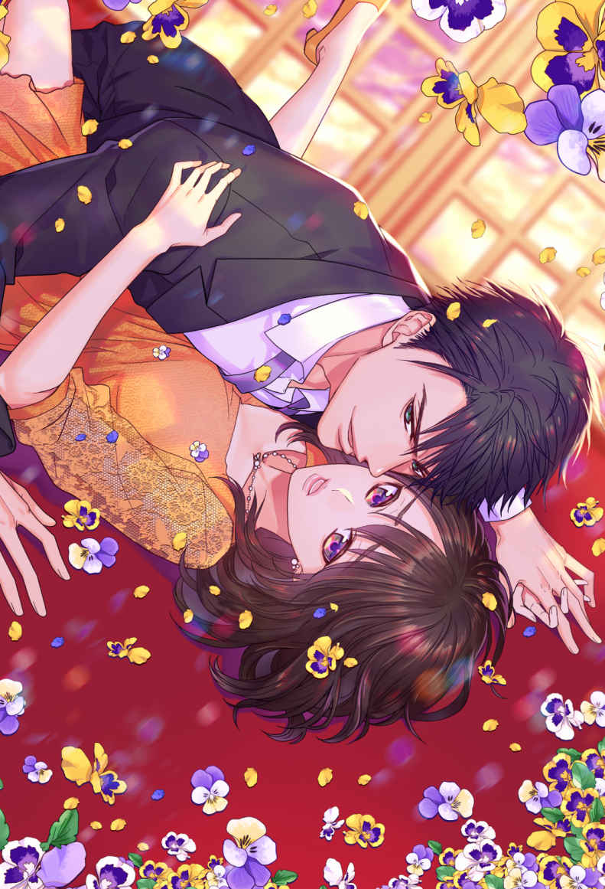
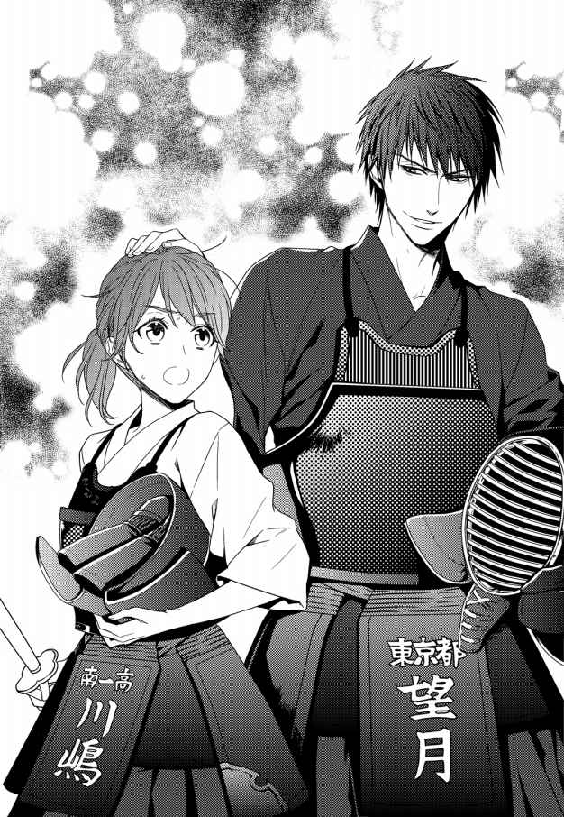
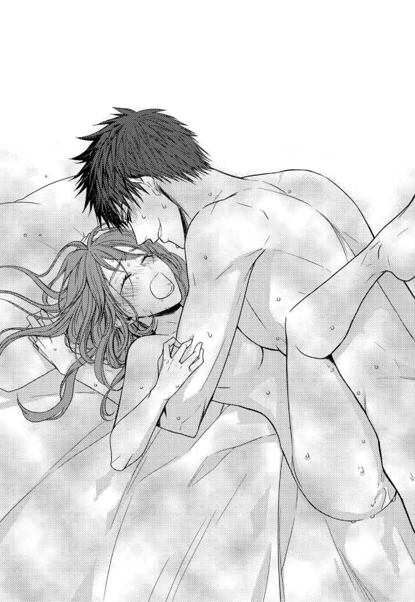
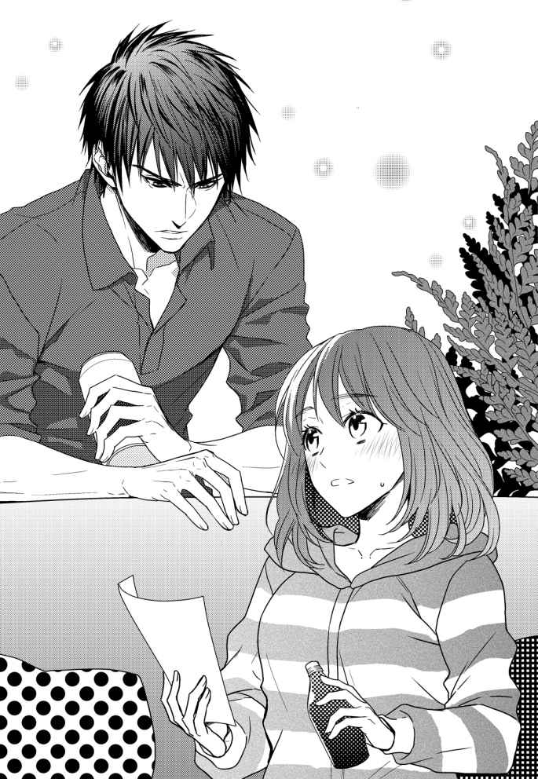
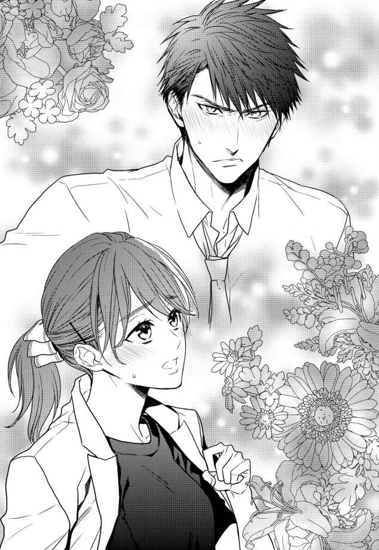

| 【全1-5セット】ドS彼氏のおもちゃになりました 意地悪な彼の甘すぎる調教愛【イラスト付】 (チュールキス) | |
| 山内詠 | |
| 株式会社ジュリアンパブリッシング (2019) | |

この作品はフィクションです。
実際の人物・団体・事件などに一切関係ありません。
１
ほの暗い部屋の中、私川嶋 麻里 は乱れた呼吸をなんとか整えようと喘いでいた。
まるで全力疾走したあとのように身体は熱く火照 り、自由に動かすことすらままならない。
必死な私を、彼は小さく喉の奥を鳴らすように嗤 う。
「鍛え方が足りないな」
「だ、誰のせいだと......！」
まるで私が悪いと言わんばかりな彼の態度に、考える間もなく切り返す。
私から酸素を取り上げただけでなく、この状況......ベッドの上に組み敷き身体の自由を封じ――唇を奪ったのは彼なのに。
先ほどまでの激しく貪るような口づけを思い出すと、なんとか落ち着こうともがいているのにまた頬が熱くなってくる。
「へぇ？ 俺のせいなんだ？」
おかしさをこらえきれないとばかりにくつくつと嗤う彼の眼差しは、からかうような態度とは裏腹に、まっすぐ私を射貫 いてくる。
口では威勢のいいことを言っているくせに、態度が伴わない私の心を見透かした視線に、言葉に詰まる。「誰かのせいにしたい」という浅ましい考えなど、彼にはお見通しなのだろう。
さらに彼は見せつけるように私を拘束していた手をゆっくりと離した。
覆い被さっていた身を起こし「これで縛りつける枷 はなくなったぞ」とばかりに肩を竦 めてみせる。
「だったら、逃げれば？ いいぜ、俺は追わない」
自由を取り戻しても、私の身体は冷たく鋭い視線でベッドにくくりつけられ、身動きすらままならない。そんなことは百も承知の上で、彼は好きにしろとうそぶいた。
言葉通り、彼は私が今すぐこの部屋から逃げ出しても、絶対に追っては来ないだろう。そしてきっと連絡すら簡単に途絶えてしまう。
これまでふたりで重ねてきた時間など、何の意味にもならない。
ずるい。
望んでこの部屋に来て、彼にこの身を委ねたのは、紛れもなく私だ。攫 われたわけでもなければだまされたわけでもない。
でも今この状況で、わざわざ改めて自覚させなくてもいいではないか。
けれど彼の眇 めた瞳の前に晒 されると、頭では苛立ちや怒りが渦巻いていても、身体が反応してしまう。お腹 の奥がぎゅうっと収縮するような、痛みにも似た切なさと息を乱す熱が湧いてきて......私は唇を噛み締めるしかない。
どうやったって、私は逃げ出せない......彼のこの腕の中から。
認めてしまっても楽になれないのは、道連れが欲しいという自己保身だ。浅ましく欲望にふけり、かりそめの天国を心ゆくまで味わうための共犯者を求めてしまう。頭の端にこびりついたおためごかしの常識や、薄っぺらな倫理観を忘れ去るために。
きっと彼はそんな私の弱い部分まで理解して、突き放している。
私の迷いをあざ笑うように、彼は言う。
「わからない時はどうすればいいか、もう忘れたのか？」
本当は忘れていない。忘れるわけがない。
「......しえて」
「聞こえないな」
「教えて、ください。どう、したら、いいですか？」
訊 け、と彼は私に命じた。自分で判断することは許さないと。
「お前は、どうしたいんだ？」
なのに彼は逆に尋ねてくる。指で私の顎をすくい上げながら。
「あ......！」
ただそれだけの接触で、身体が何かを期待して戦慄 いた。
望めば、叶えられる。今その許可が下りたから。
彼は私の支配者。気まぐれで残酷で、だけどとびきり優しい私の主人。
頭の中でスイッチが切り替わるのがわかった。
私を縛っていたのは、彼ではなく自分自身なのだ。
「......して」
声が、震える。
「ん？」
彼がわざとらしく聞き返してくる。本当に、容赦がない。そうでなくては、いけない。
「滅茶苦茶に、して」
「ああ、いいだろう」
彼の薄い唇が、楽しげに歪んだように見えた。しかし表情はなぜか窺い知ることができない。いくら明るさが落とされているとはいえ、こんなに近くにいるのに。
何か、おかしい。
彼は、誰？
「えっ？」
ふと入り込んだ疑問が、身体を火照らせる熱を急激に冷ましていく。
「なんだ、気づいちまったのか」
様子が変わった私に、彼はにんまりと意地の悪い笑みを向けてくる。その顔は――
「どうしてあんたなのよー‼」
神様とは、なぜこうも理不尽なのだろう。ささやかな幸せは日に一度あるかないかの頻度でしかくれないくせに、不幸せはまとめて大盤振る舞いしてきやがる。
理不尽な出来事への苛立ちで頭をいっぱいにしながらも、なんとか歩みを進める。
「お疲れ様でーす......」
重い荷物を引きずりつつ、なんとか目的の場所であるスポーツセンターにたどり着いた。
荷物を下ろした途端にほっとして、思わずため息が出る。
「麻里ってば、なんか疲れてない？」
更衣室で顔を合わせるなり、すでに着替え始めていた友人の加賀谷奈 保 は心配そうに駆け寄ってきた。奈保は地元が同じで、小・中学校の同級生である。高校では離れたけれど、ふたりとも大学進学と同時に上京したことで交流が復活し、通算すれば結構長い付き合いだ。
今日は私と奈保が参加している社会人剣道サークルの練習日。
日程は毎月第二・第四土曜日の午後と決まっているけれど、特に参加を強要されることはない。都合の合うメンバーが集まって、稽古して気持ちよく汗を流すという、ごく気楽なサークルである。
メンバーに加わって一年、私はかなり頻繁に参加していた。
「色々あってね......ははは」
「まあ元気出しなって！」
乾いた笑いを漏らした私の背中を、奈保が笑いながら叩いた。そんな簡単に元気になれるならここまで落ち込まないっつーの！
再び大きなため息をついた私に、奈保は恐る恐る尋ねてくる。
「何かあったの？」
「......寝坊するし、顔を洗うのに洗面所の蛇口をひねれば、なんでか水が噴き出して床と服がびしょ濡れになるし、出かける準備をしてたら扉のカドに足の小指をぶつけるし」
「ええっ!? 」
「なんとか家から出ればアパートの階段で荷物落っことしちゃうし。そんなこんなで時間がなくなって駅まで走ったんだけど、改札の前で思い切りすっ転んで、携帯家に忘れてきた......」
朝起きてからここに至るまでの間に起きた、まるで漫画のような小さな不幸の連続を、ひとつひとつ指を折りつつ説明する。
その上、今日に限っていかがわしい夢まで見てしまった。いや別に夢なんて気にしなければいいだけなんだけど、ちょっといい感じだったのが急に落とされる内容にはとにかく疲れてしまう。
重なった小さな不幸はたったひとつだけでも地味にダメージ喰 らうのに、まとめてこられると精神的ダメージ半端ないです。神様、何卒手加減お願いします。
「ま、マジか......。怪我はない？」
若干引きつつも奈保は私を気遣ってくれた。やっぱり持つべきものは優しい友人よ。
「膝に青タンできたくらい。大丈夫」
「じゃあ稽古で新たに怪我しないように気をつけないとね」
「うっわ、ありそうで困る」
これまで朝から災難続きだから、本当に気をつけないと。
「あ、やば」
「どうしたの？」
「ブラ普通のしてきちゃった」
やっぱり今日はついてない。稽古着に着替えようとＴシャツを脱いだところで、スポーツ用のブラをしてくるのを忘れてしまったことに気づく。
私の姿勢か何かが問題なのか、普通のブラだと背中のホックが稽古中によく外れてしまうのだ。ブラだけじゃなくていつもはインナー全て専用のものを身につけてくるのだけれど、見事にまるっと忘れてしまった。
「うう、今日はホック外れないといいんだけど......」
「麻里大きいもんねぇ」
奈保が苦笑しながら私のメロンみたいな胸に視線を落とす。
「あーもう、嫌になっちゃう」
バストよりも一五三センチしかない身長の方が大きくなってほしかった。大きすぎる胸は身体を動かすのにも邪魔だし、何より太って見えるのだ。
ロッカーの扉に備えつけられた鏡に映る自分の顔を眺める。重めの瞼は一応二重だけどぼんやりとした印象だし、ぽってりした唇と合わせるとどこか野暮 ったかった。大学進学を機に上京してもうすぐ八年になるのだから、この垢抜けなさは個性と諦めるべきなのかもしれない。
おかげで化粧の腕は詐欺のレベルまで上達したけれど、このサークルではその腕前を披露することはできなかった。ひとたび面を被って稽古をすれば、どんなメイクもドロドロに溶けてしまうからだ。
身長一六〇センチで年齢相応の容貌である奈保と自分を、つい見比べてしまう。もう少し身長があればちょっと違ったかな、なんてね。
剣道はバレーやバスケのように身長が高い方があからさまに有利というスポーツではないのがまだ救いだ。チビならチビなりの戦い方があるのである。
剣道というと世間的にはマイナースポーツに分類されると思う。そしてちょっと敷居の高い、お堅い競技に感じられてしまうのではないだろうか。
実際、サッカーみたいにボールがあればすぐ始められるような手軽さはないし、バドミントンや卓球のように、初心者でも楽しめる遊戯的な要素も低い。
一番敬遠されるのはやっぱりこれだろうな......と思いながら、私は重いキャリーケースから稽古着と防具を取り出し身につけていく。
防具を使用していても竹刀 で叩かれれば痛いし、夏はくっそ暑いし冬はしもやけができるくらい寒いし......あれ、いいところが何もない！
......まあ、色々面倒も多いスポーツだけど、私は剣道が好きだ。
白い上衣を羽織 り、新調したばかりの濃紺の袴を身につけ、帯をきつく締めれば、自然と背筋が伸びてくる。それと同時に気分も少し上向いてきた。
「よーし、頑張ろっ」
「そうそう！ 今日は終わったらバーベキューだしっ！」
奈保が励ますような口調で教えてくれる。そうだった！
「忘れてた！ 怪我なんかしてられないね」
存分に汗をかいたのち、みんなでわいわい仲良く飲むのは、サークル活動の楽しみのひとつだった。
本日はいつもの飲み会とはひと味違い、近くのベイエリアに新しくできたバーベキュー施設を利用して、屋外で楽しく騒ぐ予定なのだ。
桜の季節が終わり、梅雨に入る前。ほんの僅 かな初夏の季節は、外遊びに最適な時期である。
屋外イベントというとやはり夏のイメージが強いけれど、近頃の東京は暑すぎるから、真夏は逆に外で飲むよりもクーラーの利いた屋内で楽しみたい。
「じゃあ今日結構人集まってるんじゃない？」
「やっぱイベントあると参加率いいよね」
更衣室を見渡せば、いつもより女性メンバーの参加者が多い気がする。中には最近顔を見せていなかった子供連れの既婚メンバーの姿もあった。
「奈保だって、圭 太 君が仕事の時しか来ないくせに」
「もー！ 圭太と一緒に来る時もあるもん！」
奈保が唇を尖らせる。彼女の恋人である山中 圭太君は警察管だ。その職業上、どうしても土日休みとは限らない。彼女がサークル活動に参加するのは、大抵圭太君が仕事の時なのである。
「せっかくのバーベキューなのに圭太君来れなくて残念だね」
「ううん、バーベキューからは来れるって」
「へえ、よかったじゃん」
「練習には間に合わないから、店に直接向かうって」
そもそも私と奈保がこのサークルに参加するようになったきっかけが、主催者と友人だった圭太君が紹介してくれたからだったりする。
「奈保のところは仲良しでいいよねぇ」
ふたりは付き合ってもう二年は経っているのに、今でもラブラブでちょっと羨 ましい。先日互いの両親へ挨拶に行ったとかで、ゴールインも間近だ。
「麻里も彼氏作ればいいでしょ」
「そんな簡単にできるもんなら苦労しません」
すると奈保がやや呆れたようにこちらを睨 めつけてくる。
「何言ってるの。できるできないの前に、麻里は努力しようともしてないじゃん」
実際奈保の言う通り、私は素敵な男性に出会おうと躍起になってはいない。......だって必要性が感じられないんだもの。
「そもそも彼氏を作るって考えがなんかヤだ」
「ドラマとかじゃないんだから、自分から動かなきゃ恋なんて始まんないでしょ！」
拳を握り締めて奈保が力説する。実際、圭太君との付き合いは奈保からの猛アタックが大きな力になったことは間違いない。ちなみにきっかけは合コンである。
「行動の前にまず気持ちが大事なんじゃないの？」
「はい出た麻里の理想論！ 好きな相手なんてなかなか見つからないんだから『ちょっといいな』くらいから自分で気持ち育てるのよっ！」
「はいはい」
奈保は気が合う友人だけど、恋愛至上主義的なところだけがちょっとウザいんだよね。
でも、自分で「恋」を育てられるからこそ、常に彼氏を切らさないでいられるんだろう。それは素直にスゴイと思う。ただ、私に同じことを求められるのは困る。
「でもさぁ、好きな人がいるって生活に張りが出るし！ 麻里も恋をしようよ！ 女にはときめきが必要なんだからっ」
「ときめきなら二次元で十分足りてる」
人生を楽しむためのコンテンツは、何も恋愛だけじゃない。小説に漫画、ドラマに映画、ゲーム......創作物ならばどんな物語も、理想の恋愛も、素敵な相手もよりどりみどりだ。
「寂しいなーとか思ったりしない？ ひとりで寝てる時とか」
「特にないかな」
そもそも人肌を恋しく思うほど、ふたり寝を楽しんだ記憶がない。
どちらかというと、彼氏と同じベッドで寝た時は寝返りも自由にできなかったから、全然いい思い出じゃない。だから別にいいかなと思っている。温かいものを撫でたくなったら、猫カフェに行くよ。もふもふ最高。
「......ねえ麻里。二次元から白馬の王子様は現れないよ？」
「そんなことわかってますぅ」
心配そうに言われて、ちょっとカチンとくる。
私が恋愛をほったらかしていることを、奈保はあまりよく思っていない。これまでも口を酸っぱくして「現実に目を向けろ」と言われていた。
「ねえ、会社で誰かいい人いたりしないの？ 麻里の会社だったら優良物件ゴロゴロいるでしょ」
「いないねぇ」
まるで熱烈に結婚を勧める仲人のような物言いに苦笑してしまう。優良物件って、不動産屋じゃないんだから。
「じゃあサークルのメンバーでいいなって人、いないの？」
他の女性メンバーの目を気にしてか、奈保は声をひそめて問いかけてくる。
「やめてよ。サークル内で惚れた腫れたなんて、大学で卒業でしょ」
サークル内での恋愛は別に禁止されていないし、実際過去にはサークル活動がきっかけで結婚したカップルもいる。付き合ってからの入会だけど、奈保と圭太君だってサークル内恋愛に当たるわけだし。
でも元々私がこのサークルに参加したのは奈保に誘われたのがきっかけではあったけれど、純粋に剣道をやりたかったからで、出会いを求めていたわけじゃない。
せっかく楽しく活動できているのだ。自分から変な波風は立てたくないよ。
「それに、私のお眼鏡にかなう人なんて現実にいないもん」
「出た出た、麻里の面食い！」
「だから二次元で足りてるって言ってるじゃん」
「そんなこと言わないでさぁ......そうだ！ 今日望月 さんも来るって」
急に思い出したように奈保がぽん、と手を叩く。
「えぇっ!? 」
一番聞きたくない名前を耳にして、テンションが瞬く間に急降下していく。バーベキューのおかげで少し浮上してたのに。
「最悪......」
「何言ってんのよ。麻里仲いいじゃん」
「別によくないよ。今朝の夢は警告か......」
はっと気づいて口を塞いでも、もう遅い。
思わず漏らしてしまった一言をしっかり拾った奈保はニヤニヤと笑いながらツッコんでくる。
「夢って何よ？」
「なんでもない！ ほら、もうそろそろ稽古始まるよっ」
慌てて防具と竹刀を持って更衣室を出る。
「いやいや聞き捨てならないワードだった」
すかさず私を追ってきた奈保は身体ごとずいっと近づいてきた。こうなるとしつこいんだよなぁ。
「奈保が気にするようなことじゃないって！」
「絶対違うね。ほらほら、詳しく言いなさい！」
際どいラブシーンの相手だった理想の男性が、急に彼に変わった......なんて言えるはずがない。
「なんでもないったら！」
「......やっぱ麻里ってば望月さんのこと好きなんじゃないのぉ」
焦る私を見た途端、奈保のニヤニヤ笑いがいっそう激しくなる。
「違うってば！」
絶対そうくると思ったから、言いたくなかったのだ。
「えー！ 麻里ってば望月さんみたいな顔、めっちゃタイプでしょ？」
付き合いが長いだけあって、奈保は私の好みをばっちり把握している。
「......顔はね」
そう。望月さんこと望月智史 はとても格好いいのである。
容姿だけと限定すれば、望月智史は私の理想とする男性そのものだった。
「いやいや、顔以外もめっちゃいいじゃん。声も渋いし、優しいし！」
「それだけじゃん」
「えぇー、仕事も立派だよ。部長さんだし！」
以前サークルのメンバー伝いに、彼の職業を聞いたことはあった。中小零細企業ではなく、株式上場もしている商社にお勤めらしい。しかも、親の会社。
まあ三〇歳の若さで部長職は素直にすごいと思う。でも親の会社だから、部長職とはいえ下駄を履かされている感は否めない。......なんて考えてしまうのはいくら気に入らないとはいえ、失礼だろうか。
私も商社勤めなので、どこの会社なのか気にならなかったと言えば嘘になる。けれど知ったからといって好奇心が満たされる以外に利点もないので、あえて会社名までツッコんで尋ねたことはなかった。
商社という点では同じでも、扱うものが違えばまるっきり別業種と似たようなものだし。
「そもそもあんなにスペック高いんだから、彼女当然いるでしょ」
「それがいないんだって！ これは圭太から聞いたから、本当よ」
「はぁ？ 嘘でしょ！ 会社でならいくらでも出会いあるでしょうに」
「同じ会社は絶対嫌だってさ」
「社内恋愛はヤダってこと？」
「入社してすぐに玉の輿狙いの女子たちに酷い迷惑かけられたから、同じ会社ってだけで虫唾 が走るんだって」
「うわぁ......」
虫唾が走るくらいの迷惑って一体何されたわけ？ 望月は被害者かもしれないけどちょっと引く。
「でも麻里は同じ会社じゃないし、全然オッケーでしょ」
「え、あり得ないんですけど」
私からすれば、彼がどんな仕事をしていようが、社内恋愛が嫌だろうが、関係ない。
「ええー!? いつも仲良くじゃれてるじゃん」
「あれは仲いいんじゃなくて――！」
反論の拳を振り上げた瞬間、頭にぽんと大きな手のひらが乗せられる。
「誰と誰が仲良しだって？」
顔を見る前に誰だか判別がついてしまった。付き合ってもいない女性の頭に気安く触れてくる輩など、このサークルにひとりしかいない。
「あらぁ、望月さん！ 噂をすれば影ってやつですね！」
振り向くとそこには、話に上がっていた望月智史本人が、人の良さそうな笑みを浮かべていた。
男らしい太い眉に、凜々しく涼やかな目元が印象的な整った顔立ち。濃紺の剣道着から覗く太い首からわかる、ほどよく鍛えられた逞 しい体躯。さらに奈保も見上げるほどの高身長。どこからどう見ても素敵としか言い様がない。
「ちょっ......！」
「やっぱり俺のこと話してたんだ？」

奈保が余計なことを言ったせいか、望月は私の頭に乗せた手を動かしてせっかくまとめた髪を乱してしまう。トドメとばかりに低音の声までいい感じなのがカンに障る。
「やめてくださいっ！」
「悪い悪い、ちょうどいいところに頭があったもんだから」
口では謝罪しながらも望月は私の頭をかき交ぜる手を止めない。
「やめてって言ってるでしょ！」
手を叩き落とすように振り払ってようやく手を引いてくれたけれど、髪はぐしゃぐしゃになってしまった。......ああ、面の中で髪がほつれると鬱陶 しいから、家でしっかりまとめてきたのに。
苛立ちを思い切り込めてきつく望月を睨みつけても、彼は意に介する様子はない。
むしろ楽しげに笑みを浮かべたまま。奈保も止めるどころか同じように笑いながら事態を眺めているだけ。
私が本気で嫌がっているなんて、望月も奈保も思っていないのだ。
「望月さーん！」
ばたばたっと騒がしい足音を響かせながら、防具をつけた子供たちが走ってきた。さっき更衣室で見かけたサークルメンバーの子供だ。
このサークルがきっかけで結婚した人たちの中には、子供と一緒に稽古したいからと連れて来ることも珍しくなかった。
子供たちがじゃれついてきた途端、それまでの意地の悪い笑顔が一転、まるで幼児番組のお兄さんのような明るく朗らかな表情へと変わる。
「おお、久しぶり！ 元気にしてたか？」
「ねー、稽古の前に遊んでよ！」
じゃれついてきた子供たちの頭を撫でながら笑うその顔は、本当に楽しそうだ。
「いいぞ。じゃあ準備運動もかねて鬼ごっこでもするか」
「やったぁー！ 望月さんが鬼ね！」
「よーし、じゃあ武道館に向かって競争！」
唐突に現れた望月は、これまた急に去っていく。
......どうしたことか、望月は子供たちに大人気のお兄さんなのである。遊びに全力で付き合ってくれる大人の人が好かれるのは当然かもしれないけど。
「ほらぁ、子供好きな人に悪い人はいないって......」
「......私頭直してくるから、先に行ってて」
奈保の言葉を遮ると、私は更衣室へと踵 を返した。
「はぁ......最悪」
再び更衣室に戻り、鏡の前で髪をまとめ直しながらため息をつく。
望月とやりとりしている間に稽古開始の時刻が迫っていたせいか、更衣室にはもう誰もいなかった。おかげで態度を取り繕う必要がなくて少しだけホッとする。
望月と私は仲良くなんてない。彼が一方的に私を子供扱いしてイジってくる。ただそれだけ。
本当の子供にはあんなに優しい笑顔を大盤振る舞いしているくせに、私にはいつも意地悪でいやがらせばかりだ。
なのに、奈保を始め周囲は私と望月が親しいと思い込んでいる。
「......大人げないな、私」
ため息と共に自嘲が漏れた。
イジられたって軽く流せばいい。むしろ利用してやればいい。
実際会社で似たようなことがあってもスルーできているし、学校を卒業して数年勤め、それなりに世間での立ち回り方は覚えたはずなのに。
今の私の態度ときたら、拗 ねていじける子供そのものだ。
しかも優しく対応されている子供たちを妬ましく思うなんて、ホント最低！
「くっそー！ あの顔じゃなかったらっ......！」
イライラしすぎて、せっかく整えた髪をぐしゃぐしゃにかき乱したくなる。
整った顔立ちや、男らしいくせに上品な物腰だけでなく、ちょっと硬そうな髪質も、すらりと伸びた背筋も、長い指も、道着の袖から伸びる前腕の筋肉の付き具合も、よだれが出るくらい好みなんだもん！
奈保の言う通り、望月の顔も声も体型も、私の理想そのもの！
しかも仕事も立派で子供にも愛される好青年って、ホント神様はなんて人間を創造してしまったんだ！ と見当違いの文句をつけたくなってしまうほどだ。
だって理想通りすぎたせいか......いつしか私は妄想の中に望月をたびたび登場させるようになってしまったんだもの。そう、今朝見た夢のように。
誰だって多少は思い描いたことがあるはずだ。推しのアイドルと、憧れの俳優と、大好きなキャラクターと付き合えたら......という妄想。
私はその、ちょっと人様より具体的で、回数が多いだけで。
さすがに最初からエロいことばっかり考えていたわけじゃない。始まりはふたりきりで散歩したり、食事をしたり......なんて他愛のないものだった。
けれどいつしか、ふとした瞬間脳裏に浮かぶのは、まるでロマンス映画のワンシーン、それも相当にエッチなシチュエーションばかりになり......。今朝はとうとう、好みど真ん中な、焦らし上手なドＳヒーローにまでしてしまった。
「いよいよヤバいかも......」
夢の中のお相手が実在の人物でも、これが画面の向こうにいる俳優さんだったら、ここまで苦悩しなかったと思う。実在していても彼らは二次元のキャラクターと同じだ。
けれど望月は違う。実際会って話す機会のある相手だ。
ここまで望月が私の妄想に繰り返し登場するのは、彼以上に私の妄想にぴったりフィットする人が見つからないからなのだろう。
なにしろ世間でイケメンと称される大半の男性は、みんな線が細すぎる。確かに顔は整っていると思う。アイドルと呼ばれる人たちは特に。
けれどひょろひょろ伸びた手足や重たい前髪は女の子と大差なく感じて、どうも私は魅力をあまり感じられない。
現実のみならず、アニメや漫画の中に登場するヒーローたちもみんな似たような風貌ばかりだから、実際のところ彼らに魅力がないのではなく、私の感じ方がおかしいのだろう。
最近はワイルド系というのか、パワフルなダンスパフォーマンスやアウトローを連想させる強めのファッションを売りにしているアーティストも人気だ。けれどこのタイプの人たちも、私の心を躍らせない。
私が好きなのは、いわゆる「日本男児」ってやつなのだ。男らしくて、硬派で、真面目。
もちろん、そんな男性は現代日本で「大和撫子」と同じように、絶滅危惧種であることは、わかっている。
中身までは求めない。外見だけでも好みの人がいいと思うのは、贅沢だろうか。
武道をやっている人は、私の求める男らしい雰囲気を持っている場合が多い気がするんだよね。もっとも......剣道着を着ている間だけ、ではあるけれど。恐るべし、ユニフォームマジック！ そう、剣道しているだけでよく見える。
なのに、望月みたいに理想が服着て歩いてるみたいな人が、よりによって剣士だなんて、もう本当に妄想したくなくてもしちゃうよー！
逞しいけれど、厳 つくはないという絶妙なバランスの整った顔立ちに、鍛え上げられた身体。それをさらに引き立てているのが、豊富な経験を匂わせるやや色あせた濃紺の稽古着と、使い込まれた防具だ。
そりゃやっぱり、剣の腕前だって下手よりは上手い方がやっぱり素敵だと思っちゃうし。
――お前、こういうのが好きなんだ？
ふっと嘲 りをたっぷり含んだ声が、聞こえた気がした。
――人前でいかがわしい妄想して、ひとりで感じてるわけだ？
そんなことしてない、と心の中で反論する。けれどそれに応えたのは......冷たい一言。
――変態。
「......っ！」
ぞくぞくっと悪寒に似た感覚が背筋を走り抜ける。
もし望月みたいに理想通りのヒーローに今妄想したように罵られたら、私はどうなってしまうのだろう。
誰にも、それこそ奈保にすら教えたことのない私の密 かな願望。
罵 られ、虐げられたい。
残念なことに「罵られたい」と言うと、多くの人が罵詈雑言ならなんでもいいと勘違いしている。傷つけられたいわけじゃないのだ。
女性に限らず、人は洋服を着るように色んなもので本心を隠していると思う。建前や常識にルール。心を縛るものは目に見えないからこそ強く厚く心を覆っている。
それらをひとつひとつ取り去るために必要なアイテムは、優しさであったり、笑いであったり、温かな気遣いであったり......人それぞれ違うはずだ。私にとって、罵られることが、そうであるように。もちろん、愛情があることが前提条件です！
もしも誰か、愛のこもった言葉の刃で私の鎧を取り去ってくれたなら。
そして現れた愚かな私の本心を認めて、愛してくれたなら......って自分で言うのもなんだけど相当おかしい。
私の性嗜好を全肯定して、全てを受け止め、尚且 つ欲求を満たしてくれる。そんな都合のいい男性などいるはずがないじゃないか。
しかしいくら理想そのものとはいえ、付き合うどころか友達ですらない人でこんな妄想してるなんてキモすぎる。
心の中は自由と言えど、万が一頭の中身がばれたらヤバいなんてもんじゃない‼
「はぁ......憂鬱 」
今朝のような夢を、これまで何度見ただろう。
そのたびに大して経験なんてないくせに、身体は勝手に熱くなる。
欲求不満をスポーツで解消すべくサークルに来たのに、稽古が始まる前に余計疲れてしまった。
望月は最近仕事が忙しいとかで参加していなかったから、完全に油断していた。
顔を見れるのは、嬉しい。やっぱり素敵だなって思う。声を聞くと胸が騒ぐ。
でも、話したり仲良くはなりたくない。
こんな矛盾した私の希望を奈保は理解できないと言う。奈保は好みの男性と出会ったなら、好意があるのならアタックすべき！ ってタイプだから仕方ないけれど。
私がことさら望月とお近づきになりたくないのは、彼がこのサークルで恋愛対象を探しているとは思えないから、というのもある。
望月は自分に好意を向けてくる女性メンバーとは、巧妙に距離を置いているようなのだ。
そんな望月が私を構うのは、私が少なくとも彼へ見える部分で好意を示したことがないからかもしれない。......それか、本当に他の子供と同じ扱いをしているだけとか。それはそれでやられる方の気持ち考えろって話だけど。
「近寄らない、話さない......よしっ」
気持ちを切り替えなくては。余計な考えは怪我の元にしかならない。
活を入れるように両手で頬をバチンと思いっきり叩く。今日は終われば楽しいバーベキューが待っている！ 頑張ろうっ！
「切り返しー、はじめ！」
一通り準備運動を終えたあと、防具をつけての稽古が始まる。
剣道の練習の基本は打ち込み稽古である。つまり地味な反復練習がほとんどだ。初心者でも熟練の剣士でもそれは変わらない。
「お願いします！」
号令に合わせて共に相手に一礼する。ひとつひとつの所作も大切な稽古のひとつだ。
「やあぁぁぁ！」
気合いの声を発し、大きく踏み込んで面を打ち込む。そのままの勢いでどんと体当たりし、前後に四歩ずつ動きながら、相手の構えた竹刀に向けて右・左と打ち込んでいく。最後にもう一度面に打ち込み、最後は相手の向こう側に抜け、残心をしっかり取る。
切り返しと呼ばれるこの打ち込みは、剣道の基本動作をまとめた練習法だ。
「めえぇぇぇんっ！」
バァンと竹刀が大きな音を立てて、相手の頭を覆う面を打つ。
相手の竹刀が私の身体を打つたび、私が竹刀振るうたび、感じる慣れた衝撃、痛み。それらは私を苦しめるけれど、不思議と心は落ち着いていく。
キツく締め上げられた面の中は窮屈で、己の呼吸の音ばかりが聞こえてくる。だけど視界と聴覚が制限されているからか、神経が少しずつ研ぎ澄まされていくようにも感じる。
これこれ、こうでなくちゃ！
単純に身体を動かすだけでもストレスや欲求不満を解消できる。
でも剣道は乱暴な言い方をすれば大声を出して竹刀で叩き合っているわけで......普段の生活では絶対できない行為だからこそ、スカッとするんだよね。
学生時代はそんなふうに考えたことなかったけれど、ストレスフルな社会人になってからは、剣道の新たな魅力に出会えた気がしてます、ええ。
「はああああっ！」
雄叫 びのような声と共に望月が鋭く踏み込むなり、相手の面を竹刀が打つ。その鮮やかな技は凄みと同時に美しさまで感じられる。
「うわぁ......」
試合だったら確実に審判の旗が上がっていただろう見事な一本に、自分も稽古中だというのに思わず見惚 れてしまう。
剣道において声というのは結構重要で、声が出ていないと一本、すなわち点数が取れない。裏声になったりがなったりと色々タイプは分かれるけれど、望月の低く這うような声は迫力があり、相手を圧倒してくる。
気楽な雰囲気とは裏腹に、このサークルのレベルは、実のところ結構高い。
剣道は学校を卒業して地元を離れてしまうと、続けることが難しい競技だ。ひとりではできる稽古は限られてくるし、都会の住宅事情では素振りをすることすら一苦労。そんな中続けようとしている人たちが集まっているのだから当然だろう。
数年ブランクがあった私や奈保は、当初練習についていくのが大変だったもの。
そんなサークルの中でも望月の力は飛び抜けている。なにしろ望月の名前と共に垂れネームに刺繍されている文字は「東京都」......つまり彼は都の代表になったことがあるのだ。
就職の際は、警察や自衛隊から熱心に誘われていた、と教えてくれたのは警視庁で剣道を続けている圭太君である。
ちなみに私の垂れネームに刺繍されている所属は高校名のまま。これも望月に子供扱いされる要因のひとつだ。
顔が素敵、声もいい、お坊ちゃま。さらに剣道の腕まで備わっている。
――神様って、本当に意地悪だ。
私が一番会いたくないタイプに、どうして引き合わせてくるのだろう。
私は楽しく剣道したいだけなのに。出会いなんて求めてないのに。
だって好きになる前から、失恋が目に見えているじゃないか。
「やああぁぁぁっ！」
ふと頭を過 った諦めを振り払うように大声を出す。気合いで吹き飛ばして、今は稽古に集中しなくては。
けれど一度きっかけを作ってしまえば、頭の中に、ある記憶が滲 み出てきてしまう。
初恋の、記憶だ。
残念ながら甘酸っぱい可愛い思い出なんかじゃない。黒歴史と言っていい初恋である。
私の初恋は、高校一年生の時。男兄弟がいたせいか、身近にいる同級生や幼馴染みを異性として意識することがなかった。年頃の女の子が夢中になる恋のときめきは、今と同じように漫画のキャラクターや俳優さんにきゃあきゃあ言ってるだけで十分満足できていたし。
そんな私が、入部した剣道部のイケメンで人気のある先輩から可愛がられた。
望月がしたように頭を撫でたり、荷物を持ってもらったり、ことあるごとにからかってきたり......いわゆる特別扱いってやつ。
そんなふうに構われたら、ウブな私が先輩に恋をするのは、至極当然だった。これまで実体験ゼロだったこともあり、私はいともたやすく先輩にのめり込んだ。
けれどいざ自信満々で告白すれば......先輩は大笑いしながら言った。「お前のことは、可愛いなと思うけど妹みたいなもんだ」と。
実際、先輩には部外に綺麗な彼女がいたから、私みたいなちんちくりんが出る幕など、どこにもなかったのだ。
残念なことに、男性からイジられるのはこの時だけで終わらなかった。
高校時代はこの先輩の振る舞いを真似した同級生男子からも散々イジられたのだ。それを同級生女子からやっかまれ、人間関係で相当苦労した。
先輩や同級生たちに、私への好意がゼロだったとはさすがに思わない。
けれど彼らが私に向けて言った「可愛い」は、ペットや赤ん坊を見た時に感じる庇護欲や思わず構いたくなる気持ちであって、「恋」ではないのだ。
高校以降、なぜか私は男性からこういった扱いを受けることが多かった。色々自分なりに検証してみた結果、低い身長や野暮ったい風貌、そしてアニメの声優のような高めの声がそうさせるらしいと気づいた。
それからは必死で外見を取り繕ってきた。でも顔はある程度メイクで誤魔化 せても、身長や声はどうしようもない。大学でも社会人になってからも、私は散々からかいを受けてきた。
だからわかる。望月もこれまで散々私をおもちゃ扱いしてきた男たちと同じだと。
もしかしたら嫌がっているつもりでも、彼には憎からず思っている私の本心がばれているのかもしれない。なら余計始末が悪い。
「ってぇめぇぇんっ！」
相手の竹刀を大きく右に払い、空いた小手と面に続けて打ち込む。
望月は嫌な男、私をからかうのが好きなだけ。
まあ私だって、望月を好ましく感じるのは、彼の顔や身体が理想通りだからだ。ならばある意味おあいこなのかもしれない。
自嘲の笑みは、ありがたいことに面に隠されて、誰にも見えなかった。
基本の打ち込み練習、そして地稽古と呼ばれる試合形式の稽古を中心に一時間半程でサークルの練習は終わりだ。
「はー、生き返るっ」
紐でぎゅうぎゅうに締めつけられている分、面を外したあとの解放感ときたら、たまらない！
「じゃあ、掃除係決めるか」
このサークルの主催者のひとりであるメンバーが防具をまとめながら声を上げる。いつもならば練習後、公平にじゃんけんで会場の武道館の掃除をする人を決めるのだけれど。
「あっ、いいですよ！ 私ひとりでやりますから、皆さんお先にどうぞっ」
じゃんけんが始まる前に、すかさず手を挙げる。
掃除をしたあと、皆とは時間をずらして打ち上げに行けば、これ以上望月と接近することはないだろう。
「ちょっと、麻里ひとりで大丈夫？ 私も手伝うよ」
驚いた奈保の申し出を、手を軽く振って断る。
「大丈夫。圭太君が先に行って待っているんだから、奈保こそ先に行かなきゃ」
「いや川嶋さんだけにやらせるわけにはいかないよ」
渋るメンバーに「平気ですから」と返そうとした、その時。
「俺が残ろうか？」
手を挙げたのは、なんと望月だった。
「俺今日車だから、あとから追いかけるよ」
「それならちょうどいいか。じゃあ望月と川嶋さん、よろしく！」
「えっ、ちょっ......！」
望月と別行動したくて立候補したんですけど！ なんて他のメンバーに言えるわけがなく。
......こうして私は彼とふたりきりで掃除することになってしまった。
皆が更衣室へ引き上げてしまうと、途端に武道館の中が静まり返る。ふたりきりなんて滅茶苦茶気まずい。
「あの、私ひとりで本当に平気なんで、望月さんどうぞ皆さんと先に行ってください」
「川嶋さんそんなに掃除好きだっけ？」
「別に、好きではないですけど......」
「じゃあふたりでさっさと終わらせた方がいいんじゃない？」
「でも......」
ぐずぐずと煮え切らない態度を取る私を置いて、望月はさっさと掃除用具を取りに行ってしまう。
「本当に私だけでいいですからっ！」
慌てて追いかけると、望月は急に振り返りにこっと笑って言った。
「肉食いっぱぐれたら大きくなれねーぞ？」
「はぁ？」
「あー悪い。もう成長期終わってたっけ」
「......っ！」
ぽんぽん、背の低さをからかうように頭を軽く叩かれて、顔が熱くなる。
「やめてくださいっ！」
頭の手を振り払おうとすると、望月は「おお、怖い」と呟きながらその手を引っ込め、大げさに肩を竦めてみせる。
いつもそうだ。私が嫌がると冗談だと笑って流してしまう。
悪い人ではない。でも、本物のいい人だったら、人の嫌がることなんてしない。
「わかりましたよっ！」
望月から渡されたモップを受け取り、距離を取るために彼のいる場所の対角である武道館の隅へと走った。背後から笑い声が聞こえてくる。
「くっそぅ......なんでこうなっちゃうの」
思わぬ展開につい口を尖らせてしまう。
サークル内での立ち振る舞いを見る限り、望月はかなり要領が良いタイプである。だからわざわざ面倒な掃除係に立候補してくるなんて、考えもしなかった。
バーベキュー会場に行けば、奈保がにやにや笑いつつ迎えてくれるのだろう。それを思うと今からうんざりする。
望月は私のことを女だと思っていないから、気安く頭を撫でてくるだけなのに。
なにしろ望月は私がみんなと楽しくビールを飲もうとすれば「子供はビールなんて飲むな」と取り上げ、代わりに渡されるのはジュースみたいな甘くて度数の低いカクテル。飲み会で取り分けたり皿を片付けたり、何か気を回そうとすれば「大人しく食べてろ」と逆に料理を押しつけられる。
実際、ビールは苦手で甘いカクテルの方が好きだし、気を遣うのも上手くない。
だから結果的には助かっている。
こうして掃除係を買って出てくれたのも、私ひとりじゃ大変だろうと心配してくれたのだろう。
だけど......どれもこれも、そうしてくれと私から頼んだわけじゃない。
全てわかったふうな態度で、望月は私が頭を撫でることを怒れば「大人げない」と肩を竦め、人の飲んでいるものを返せと凄めば「飲めないくせに」と笑う。
どれもこれも少しだけでいいから態度と言い方を変えてくれれば、素直に感謝できるのに。
いちいち腹立てるのも、正直疲れてしまう。
かといって笑って流すこともできない。
......本当に最悪だ。
「川嶋さん」
「ひゃあっ！」
いつの間にか再び私に近づいていた望月に背後から名前を呼ばれ、肩が跳ねる。
「本当に俺ひとりに全部やらせる気？」
「いやっ、そのっ、ごめんなさい！」
文句に夢中ですっかり手が止まっていた。嫌でもやらなきゃ終わらない。
そもそも私ってば悪い方にばかり考えすぎかも。
親切心だけ受け取って、あとはスルーでいかなくちゃ！
「ああっ！」
ところが慌てて闇雲にモップを動かしたせいで、端に寄せておいたペットボトルを倒してしまった。
これまた運の悪いことに蓋がちゃんと閉まっておらず、こぼれてしまう。
「おいおい......」
背後で望月が盛大にため息をついたのがわかった。
わざとじゃなくとも、この状況じゃ呆れられて当然だ。
だけど普段のすました雰囲気とは違う、声を覆うとげとげしさに、どうしたことか胸が高鳴る。
まるで、夢の中の望月みたいで......って何考えてるの私！
「お前さあ......、いい加減にしろよ」
名前じゃなくて「お前」呼びされたの、初めて。
冷たい声色に、身体が竦む。
だけどそれは恐怖だけでなくて、何か......期待のようなものがあって。って、何考えてんの私。いい加減にしろっ！
「ご、ごめんなさいっ！ すぐに片付けるからっ」
心の中で自分を叱咤するも、頭が働かない。
どうしよう。えっと、ぞうきん持ってきて......バケツもいるかな。それとも水拭き用のモップあったっけ......？
気持ちだけ焦って、思考がまとまらず身体が動かない。とりあえずペットボトルを拾おうと腰を折った、その瞬間。
「ったく、何やってんだよ」
「んあぁっ！」
ぱぁん、と弾けるような音が武道館に響き渡ると同時に、お尻に熱を感じた。反射的に衝撃を逃がすようにぐうっと上半身が反り返る。
手から離れたモップが倒れ、バターンと大きな音が武道館中に響き渡る。
「......っ！」
それより私なんて声出してるのっ!? まるで、感じてるみたいな......！
慌てて口を塞いでも、すでに遅い。
今、何があった!?
も、もしかして、お尻叩かれた......の？
さほど痛みはない。ただ衝撃とあまりに大きすぎた音、そして自分の口から出た声が、お尻だけでなく顔まで熱くさせる。
「おいおい......」
不自然な体勢で固まったままの私の後ろから、呆れたような声が被せられる。
「違っ......ぁんっ！」
振り向いて言い訳しようとした瞬間、再びお尻に熱を感じて、なまめかしい声が出てしまう。また、叩かれたのだ。
「......なるほどね」
何を納得したのか。そう問いただそうとしても、叩かれたお尻を望月の手でゆっくりと熱をなだめるように撫でさすられ、身体が動かなくなった。
綿の稽古着越しに感じるその優しい仕草に、さっき稽古でたっぷりかいたものとは違う汗が、背中を伝っていく。
「やっ......」
はっと気づいて抵抗を試みる。けれど私がたった一呼吸分動けずにいる間に、望月に私の腕を掴まれ、強引に引き寄せられてしまう。
さすが大学生の頃全国大会に出場経験あるだけあって、隙をつくのが上手い。......って、今そんなところに感心している場合じゃない！
「は、離してください」
身をよじって逃れようとしても、背後からのしかかるように体重をかけられてはどうしようもない。
見上げても私の背中と望月の胸からお腹あたりが重なると、身長差がありすぎるせいで彼の表情は窺えない。
「うっ......！」
望月の汗ばんだ肌から立ち上る匂いが、私を混乱させる。
何かのフレグランスをつけているのか、柑橘系の爽やかだけどどことなく甘い香り。汗と混じっても、全然不快感がない。むしろ心地よく感じられる。
妄想では補完できない嗅覚をこれでもかと刺激され、目眩 がした。
「こういうのが好き？」
いつものからかい口調で言われて、はっと我に返る。これは妄想じゃない、現実だと。
「ち、違うの、これは......」
「何が違うわけ？」
「ひゃあっ」
袴の脇あきから望月の手が侵入してくる。
むき出しの太ももを撫でる、厚い綿の生地越しでは感じられなかった肌が触れ合う感触に、悪寒に似た震えが走った。
そんな私をからかうように望月がぴゅうっと口笛を鳴らした。
「袴の下、何もはかないんだ。本格派だねぇ」
「ちょっ......！」
無遠慮に入り込んだ望月の手は、何にも覆われてない私のお尻を撫でた。
「剣道着の下にパンツをはくか、それともはかないか」というのは、剣道経験者の間では鉄板のネタである。強豪校ほどはかない......なんて話もあるけれど、実際のところ当然だけどはいている人の方が圧倒的に多い。
「そっ、それは下着に色がつかないようにで、いつもはいてないわけじゃ......！」
綿素材の剣道着は藍染めされていて、そのまま身につけると汗でかなり色落ちしてしまう。だから新品を買ったら色止めを施すのが普通だ。
ただ、最近新調した袴は色止めを失敗して、どうやっても色が落ちてきてしまう。今日は稽古専用にしている下着をつけてくるのを忘れてしまったから、色移りしないように下着を脱いでいた。藍色は肌に移ってもシャワーで落とせるけれど、別の生地に移るとなかなか落ちないのだ。
「はいはい。言い訳はいいから」
「言い訳じゃなくて、本当の......あんっ」
汗ばんだ肌を撫でる指の感触がくすぐったくて、つい声が出てしまう。
「......へぇ、感じてるんだ」
「ち、違うってばっ！」
言葉では否定しても、低く嘲るような声と汗とフレグランスの匂いに邪魔されて、上手く抵抗できない。
「じゃあ、確かめてみるか」
「えっ......やあぁっ！」
手首のスナップを利かせて、また望月が私のお尻を叩く。ぱぁんと大きな音が鳴るたびに身体に与えられる衝撃を私はただそのまま受け入れるしかなかった。
痛みを感じさせることなく、音と衝撃だけを伝える絶妙な力加減で何度も打ちつけられ、次第にお尻が熱を帯びていく。
「あ......」
同時に、身体の芯も熱くなるのがわかる。硬く凍っていたものが次第に角を失い、蕩 けていく......そんな錯覚が頭を過った。
「どこが、何が違うって？」
頭上で、望月がくつくつと喉を鳴らすように嗤う。
「こんなに感じているくせに」
「......っ！」
尻を撫でていた手が、足の間に滑り込む。そこはすでに湿っていた。もちろん、汗ではない、別の何かで。
「......っ、ああっ！ んんっ！」
突きつけられた明らかな証拠から目を逸らしたくても、望月がぬかるんだそこを暴くように指を動かしたせいで、腰が砕けそうになる。なんでこんなになっちゃってるの!?
「ほら、尻叩かれて、濡れている」
嘲りをたっぷりと含んだ声で囁かれ、ますます身体から力が抜けてしまう。
本当にこれは今現実に起こっていることなの？ 私の妄想ではないの？
「......変態」
「ちが......」
子供のようにイヤイヤと頭を振って否定する。
けれど言葉とは裏腹に、高ぶり始めた身体が示すのは私が快感を覚えているという紛れもない事実で。
「嘘かどうか、調べてようか」
「やっ......だめぇ！」
甚平 のように合わせられ紐で結んであるだけの稽古着の上衣は、易々 と望月の侵入を許してしまう。
「あっ、いやっ......ああっ！」
望月の大きな手のひらは、私の大きな乳房を思い切り鷲掴 み、力強く揉みしだく。もちろんぬかるみをかき混ぜる指はそのままに。
「ひんっ」
皮膚というよりも内臓に近いその場所は、望月の指の感触をダイレクトに伝えてくる。太くて、硬い、少しささくれだった......男の人のゆび。
ぐぷりと粘ついた水音を立てるその場所は、触れられたことでますます奥を蕩かし、溢 れ出してくる。このままじゃ、稽古着を汚しちゃう......！
「ああんっ」
もっとも敏感な核を指で弾かれて、電撃のような快感が全身を襲う。力が抜けた身体を支えるために、私は思わず望月の腕に縋 りついた。
「ここがそんなに感じるってことは......普段から自分で触ってる？」
「なっ......やあっ！」
そんな場所触ってなどいない。けれど反論したくても、胸の頂を強く摘まれてしまえば、口から出る言葉は意味を成さぬ喘ぎへと変わる。
胸を揉みしだく手も、ぬかるみをかき混ぜる指も、時折痛みに似た刺激を与えるくせに、それがより強い快感を引き出してくる。
絶妙な力加減。......もしかして、こういうのを巧 いというのだろうか。
比較する経験がなさすぎて、わからない。痛いのか気持ちいいのか。それともこのふたつは同じものなのだろうか。
「気持ちいいんだろう？」
「や......そんな、こと......！」
嘲笑と共に、私を刺激し続ける指の動きは止まらない。
「ほら、乳首も硬くなっている」
「ひうんっ！」
ぎゅっと胸の頂を摘まれ、強すぎる快感にまた身体が跳ねた。
「そんな大声出していたら、誰か来るかもな」
「......んんっ！」
意地悪な一言に、こぼれそうになった声を呑み込む。
今、もしサークルのメンバーにこの姿を見られたら。稽古着を乱れさせ、悶えている顔を見られたら。
「......っ！」
さっき別れたばかりのメンバーの顔を想像しただけで、ぶわっと体中の汗腺が開いて汗が噴き出してくるような錯覚に襲われる。
顔に血が上り身体が震えてきた。
けれどその震えは恐怖というよりも......どこか悦 びが交じっていることを否定できなかった。
その証拠に......私、抵抗するつもりがもうなくなってる。
これまでずいぶん色んな物語を鑑賞して、様々なシチュエーションを妄想して、全てわかったように思っていた。
でも、今私の身体を震わせた快感を、私は知らない。
だって、これまでの少ない男性経験の中で、今みたいに感じたことなんてなかった。付き合った相手との行為でも、快感より痛みや面倒さの方がずっと大きかった。
だから小説の性描写やドラマで女性が喜んでいるシーンなんて、二次元の、別世界のものだと思っていたのに。
どうしてこんなに気持ちがいいの？
付き合っているどころか、好きでもない人が相手なのに。
「......あっ」
不意に胸を弄 んでいた手が離れたかと思ったら、顎を掴まれ強引に上を向かされる。
視界に飛び込んできた望月は、いつも通りの至極愉快そうな笑顔だったけれど......その眼差しは鋭く私を射貫いた。
「んんっ......んー！」
快感で緩んだ唇を噛みつくように奪われる。
無遠慮に侵入してきた望月の舌は私の口腔を当然のように蹂躙 し、私も無意識にそれに応えてしまう。
私は巧いキスのやり方など知らなかったけれど、彼に導かれるままに舌を絡め啜 り、与えられたのと同じように返した。それが正しかったのかどうかはわからない。
けれど角度を変えるたびに深くなる口づけが、正解だと教えてくれているような気がした。
「あ......ふぅ......んんっ......！」
武道館に甘く爛 れた声と荒い吐息が広がっていく。
呼吸を奪われると与えられる刺激から生まれる熱を吐き出す場所がなくなり、身体の奥からじりじりと追い詰められるような独特の感覚が忍び寄ってくる。
この感覚の名前だけは知っている。物語のヒロインたちが、ヒーローから与えられる特別なもの。
「んあぁっ！」
望月の指がまた私の敏感な核を弾くと、目の前に火花が散る。身体が不自然にこわばり、私は望月の腕に縋りついた。
私の反応の変化を察したのか、追い詰める指の動きがいっそう激しさを増して。
「あぁ......んっ......ああっ！」
怒濤 のように押し寄せる快感に私はそのまま呑み込まれてしまった。
「あ......」
ゆるゆると快感の波が引いていくのを見計らったかのように、ゆっくりと望月が離れていく。名残惜しい。
「......こんなに気持ちよくなったの、初めて」
思わず本音が漏れる。
経験が少ないからだろうか。でも以前好きで付き合っていた人よりも、好きでもない人との方がずっと気持ちいいって、あり得ない。
「そうか」
望月はにかっと笑うなり、勢いよく私の身体を自分から引き離した。
「え......？」
あまりの唐突さに気の抜けたような声が出る。
「さて、掃除をしよう」
相当間抜け面 を晒しているだろう私に向かって、望月はもう一度人のいい笑顔を向けると、モップを手に取り何事もなかったかのように掃除を再開した。
......今起きたことは、夢か幻だったの？
そう思わずにはいられぬほど急な態度の変化だった。
でも私の身体にはまだ快感が熾 火 のように残されている。
「早くやらないと、一生肉食えないぞ」
「わ、わかってますっ」
疼く身体をなんとか動かして、床に倒れたままになっていたペットボトルとモップを拾い上げる。
「ぞうきん、持ってくるんでっ」
望月の返答を待たず、私は武道館の外、廊下にある掃除用具入れに向かう。少し彼から離れて冷静さを取り戻したかった。
......今体験した出来事は一体なんだったのだろう。お尻を叩くくらいなら......もちろんセクハラに違いはないんだけど、まだいつものように冗談ですませられた。
最奥に触れ、胸を揉んでさらにキスまでしたら......冗談とは言えないのではないか。
でも、と掃除用具入れから水拭き用モップを取り出しながら、考える。
あの場面を他人に見られていたと仮定したとしても、誰が無理やりされたと信じてくれるだろうか、と。
なぜなら、私はほとんど抵抗しなかった。キスに応えてしまった。
あの行為を――悦んでしまった。
きっと、私が拒まなかったから行為がエスカレートしただけなんだろう。でなければ何もなかったような顔なんてできるはずがない。
望月にしてみれば、いつものからかいと同じ。そもそもめっちゃモテそうだもの。彼にとってキスのひとつやふたつなんでもないに違いない。
「......っほんと、ムカつく！」
急激に湧き上がってきた腹立たしさを誤魔化すように吐き捨てる。
目の奥が熱くなるのがわかったけれど、泣いてどうするのだ。手のひらを返されたからって被害者ぶるなんて最低！
涙が滲んできた目元を稽古着の袖で乱雑に拭う。
さっさと掃除を終わらせ、皆に合流しなくては。これ以上彼とふたりきりでなんて、いられない。
よしっと気合いを入れて、水拭き用のモップとバケツを持ち、踵を返す。
もう望月につけいる隙など与えるもんか！
「遅い」
シャワーと着替えをすませて更衣室から出ると、望月が待ち構えていた。どうしたことか苛立っている様子に、こちらもムカムカしてくる。
望月は、ざっくりとした質感のシャツにジーンズという何の変哲もない服装だった。
しかし軽く腕まくりした上にふたつボタンが外され、胸元が開いているかなりラフな着こなしは、下品には見えずむしろ色気が感じられる。シャワーを浴びたあと乾かすのが雑だったのか、髪がまだ濡れていて、それがなまめかしい。
私はというと、今朝は急いでいたこともあって、Ｔシャツにインド綿のロングスカートという、色気どころか超適当楽ちん重視コーディネイトである。
「......先に行ってもいいって言ったじゃないですか」
私服姿もつい妄想したくなる格好良さだったけれど、私は努めて冷たい声を出した。
「できるわけがないだろう。他の奴らになんて言うんだ」
わざと髪もしっかり乾かして身支度に時間をかけたのは、置いていってもらうためだったのに。
「ほら」
「......なんですか」
当然のように手を差し出されて面食らう。
「馬鹿か。防具と竹刀よこせ」
「あっ」
望月は私の了解を得ることなく、防具の入ったキャリーケースと竹刀ケースを奪ってしまう。
「自分で持てますっ」
「はいはい。みんな待っているんだから、さっさと行くぞ」
こちらを振り返りもせず歩き出した望月を慌てて追いかける。
向こうは早歩き程度なのに、こっちは小走りなのがすっごくムカつく！
「ちょっと待ってくださいよ！」
まるで追いかけっこのようなやりとりのせいで、駐車場に着く頃ともなると、私は完全に息を切らしてしまった。
望月は平然とした顔で車に荷物を積み込んでいる。
「ちょっと鍛え方が足りないんじゃないか？」
いつものからかい口調のはずなのに、カチンとくる。
「......身長の違いを忘れてません？」
「おお、悪い悪い。大人はちびっこに合わせてあげなきゃ駄目だよなぁ。ひとりで車乗れるかな？ だっこしてあげようか？」
望月の車は外国製のＳＵＶ車で車高が高い。足を開けないタイトスカートだったりしたら、多少乗降の時気をつけなければいけないだろう。もちろん、スカートだけど私は余裕で乗れる。
「......結構です」
火に油を注ぐような返答にうんざりして話を打ち切った。望月はなんだか楽しそうに笑っているけれど、これ以上疲れたくない。
車に乗り込むと自然とため息が出た。悔しいけれど革張りのシートの座り心地は抜群で、車内の洗練されたシンプルな内装は素直に素敵だと思ってしまう。
「防具も運んでないのになんでそう疲れるかな」
ところが半笑いの望月がすかさず突っ込んでくる。
「......っ！ 誰も運んでくれなんて頼んでいませんけどっ！」
私が噛みつくと、望月はくつくつと笑いながら「シートベルト」と指摘してくる。その言い方がまたカンに障って、わざと乱暴にシートベルトを締めた。
「大体、自分の荷物くらい自分で持てますっ」
「お前に運ばせたら夜になる」
「おっ、お前って......！」
二度目の「お前」呼びに、頬が熱くなったのを隠すように顔を伏せた。
さっきのあれは、なかったことにするのではなかったの!?
いや、きっと深い意味などない。そう思い直して顔を上げると、望月が、意地の悪そうな笑みを浮かべて私を見ていた。
「そう呼ばれるのが好きなんだろう？」
「なっ......！」
言い返そうとした瞬間、唇を奪われた。
「んんっ......！」
反射的に閉じようとした唇をこじ開け、望月の舌が私の中に入り込んでくる。その柔らかく熱い感触に、身体がぶるりと震えた。
「や......んんっ！」
なんとか逃げようと身体をよじっても、先ほど自分で着用したシートベルトといつの間にか後頭部に回った手のひらで押さえ込まれ、動くことすらままならない。
「は......っ、んあ......」
歯茎をぐるりと撫でた舌は、それだけでは飽き足らずさらに奥へと侵入してくる。強引に舌を絡められると、揺れる身体を止められない。
快感の果てへと押し上げられた身体の熱は、シャワーで綺麗さっぱり冷ましたつもりだった。けれどこうして激しく口づけられただけで......たやすく熾火は燃え上がってしまう。
「んぁ......っ、はふ......」
口蓋を舌で撫でられると、そこから痺れのような快感がじわじわと身体に広がっていく。
どうして、望月のキスはこんなに気持ちがいいんだろう？
互いの内側を探り合うような深いキスを、これまで気持ちいいと思ったことがなかった。むしろ少し気持ち悪いとすら思っていた。
なのに押しのけようとしていた手は、いつしか縋るように彼のシャツを握り締めている。
「っぁ......」
私の口腔を散々荒らし回った舌は、それまでの激しさが嘘のように優しく離れていく。まるで宥 めるように唇をついばまれ、つい名残を惜しむような声が出てしまった。
交じりあったものが失われる切なさに、私は温もりを追いかけるように閉じていた目をゆるゆると開ける。
途端目に飛び込んできたのは、なまめかしく濡れた唇と、私を冷たく見下ろす望月の瞳。そこに映る自分の表情は......まだ足りないと、物欲しげに蕩けていた。
「もっと......」
自らの甘ったるいおねだり声に、はっと我に返る。
......ってちょっと私！ 何言ってるの!?
「いっ、今のなしっ！」
慌てて取り消しの意味も込めて望月の身体を押しやる。
そりゃ気持ちよかったけど......いや待て。気持ちいいと感じるのがそもそもおかしい。
妄想の中でならどんな酷いことでも許せても、現実は違う。
掃除中のあれこれだって、今のキスだって、同意のない最低なセクハラ行為のはずなのに。どうしてこんなにあっさり受け入れ、続きの催促までしちゃってんの!?
......私ってこんなに緩い女だったっけ。
そりゃしばらく彼氏いないから、キスどころか触れられることすらご無沙汰だ。でも誰でもいいってほど自棄になっていたわけじゃないはず。
やっぱり、望月のせいだ。彼が私好みなのがいけないんだ。
身勝手な責任転嫁で無理やり自分を納得させる。
でなければ矛盾だらけのこの状況に叫び出しそうだった。
「どうする？」
まるで私の頭の中を見透かしたようなタイミングで、望月が問いかけてくる。
「はっ、早く行きましょうっ！」
これ以上望月とふたりきりでいるのはまずい。早くみんなと合流しなくては！
すると望月はいつものようにからかってくることもなく、意味深な笑みを浮かべて「了解」とだけ呟くと、車のエンジンをかけた。
「あれ......？」
スポーツセンターを出発した望月の車は、やがて見知った幹線道路に出た。けれどウインカーの指し示す方角は、バーベキューの施設があるベイエリアとは反対方向。
「......あの、道、間違えてません？ こっちじゃないですよね」
ところが望月は薄く笑いながら逆に問い返してきた。
「『覆水盆に返らず』って、意味わかるか？」
「はぁ......一度起きたことは二度と元に戻らないってことでしょ？」
意味はわかるけれど、このタイミングで質問される意図が掴めない。
「正解。じゃ、どこに行くかわかるよな？」
私が小さく「わからない」と答えると、望月は耐えきれないとばかりに噴き出した。
「お前、のんきにみんなと肉食えると思っているのか？」
ふたりで、みんなのいない場所へ向かう車の中。名字ではなく、また私を「お前」と呼んだということは――。
信号が赤に変わり、車が止まる。
望月はギアをドライブからパーキングへ入れた。ガチャリとドアのロックが外れる音が車内に響く。
焦らすようにゆったりと助手席の私へ望月は身を近づけ、耳元で囁いた。
「......もっと、いいことをしに行くんだよ」
「あ......っ」
吐息の熱と感触に、ぞくりと背筋を快感のはしりが這い上がってくる。
「でも、もしお前が嫌なら止めてやる。降りるなら、今だ」
シートベルトを外されて、ドアのロックが解除された理由を悟る。
望月は私に選ばせているのだ。この先どうしたいのか。
車から降りれば、きっと全てなかったことになる。でも、このまま乗り続けたら――。
「ずるい......」
思わず本音が漏れた。
今朝見た夢とまるっきり同じだ。
選ぶのは、私。
けれど自由意志など存在しない中で提示される選択肢は、ほぼ脅迫と変わりない。
有無を言わさず攫ってくれたなら、私は全てを望月のせいにできる。被害者面できる。
......でも、一度でも選択したならもう、全ては自己責任。
歩行者用信号が点滅している。シンキングタイムは、あっという間に終わってしまう。
キスで再び火のついた身体の奥からじわじわと溢れ出す熱を誤魔化すように、足をこすり合わせた。
もしかしたら......私から求めたならば、望月は妄想を現実にしてくれるのだろうか。
激しくて、苦しくて......だけどこれまで感じたことのない快感を、くれるのだろうか。
それを確かめたくて――私は震える手で再びシートベルトを締めた。
信号が青に変わると同時に、望月の操作するギアがドライブに入る。
再び聞こえたドアロックされる音は、先ほどよりもずっと重く私に響いた。
白を基調としたシックな内装の部屋は、一見すると落ち着いた、居心地のよい空間に感じられる。けれどここは男と女がひと時の休息を買う場所に間違いなく......用があるのは大きなベッドだけ。
こんなにおしゃれなホテルもあるんだな。
そんな感想を抱いたのは、ラブホテルというと地元の国道沿いにあるケバケバしい印象ばかりが強い場所というイメージしかなかったからだ。
恋人がいた大学生時分は相手もひとり暮らしだったこともあって、こういう施設を利用する機会がほとんどなかった。
「何ぼーっとしてるんだ？ 疲れたか？」
「えっ！ だ、大丈夫」
「そこ座ってろ」
どことなく身の置き場がなく立ち尽くしていた私にソファを指し示すと、望月はなんの迷いもなく戸棚を開ける。するとそこには冷蔵庫があった。すごい、全く気づかなかった。
......やっぱりこういうところ、慣れてるんだな。そりゃそうだ、あんなに格好いいんだもの。
自分に自信があって、女性との付き合いに長 けていなければ、そもそも突然手を出したりなんてするはずがないだろう。それも、子供扱いしてからかっていたような相手を。
望月は冷蔵庫から取り出したビールを開けると、一息に飲み干す勢いで缶を傾けた。嚥下 するたびに男らしい喉仏が動くのが、たまらなくセクシーだった。
「ほら、お前の分」
「あ、うん」
私の視線を催促と思ったのか、望月は別の缶を冷蔵庫から取り出すとぽいっとこちらに向かって放ってきた。ビールではなく、グレープフルーツの缶チューハイ。
冷えた缶をなんとか受け取った私を気にすることなく、望月はビールを全て喉に流し込むと、二本目に手をつけた。
それと同時に、望月のジーンズのポケットの中にある携帯が震えながら着信を告げる。
そういえば車に乗っている時も何度か鳴っていたけれど、望月は「運転中だから」と応答していなかった。
「うるさいな」
二本目のビールのプルタブを開けようとしていた望月は、少し面倒くさそうに携帯を操作し耳に当てる。
「ああ、悪い悪い。もう始まってる？」
漏れ聞こえてきた「なにしてるんだよー」という笑い声から、電話の相手はサークルのメンバーだとわかった。
あ、そうだ。バーベキューのこと、すっかり忘れていた。皆と別れてからどのくらいの時間が経ったかはわからないけれど、あとから来るはずの人が来なければ心配するよね。
「それがさぁ、川嶋さんがなんか具合悪いみたいで」
望月の口から嘘がすらすら出てくる。「今ふたりでラブホにいます」なんて言えるわけがないのだから当然なのに、
えっと......私、望月とセックスするんだよね。
のこのこラブホテルまでついて来ておいて今さらだけど、改めて考えると恥ずかしさと居たたまれなさで転げ回りたくなってくる。
だって、今までただの知り合いだった相手と突然セックスすることになったって、かなり状況おかしくない!?
「......うん、だよね。今家まで送っている途中」
所々本当に心配しているかのような声色を交ぜながら、望月はよどみなく嘘を並べ立てていく。
私だったら絶対こんな対応無理だ。
今日携帯を家に忘れてきていてよかった。奈保に突っ込まれたら何かボロを出してしまうに決まっているもの。
しかしこれから私は、一体どう振る舞えばいいのだろう。いわゆるワンナイトラブってやつに慣れた女性なら、気の利いた態度で男性をいい気分にさせることができるのだろう。
お尻を叩かれて悦んで、ほいほいホテルまでついて来るくらいだもの。望月はきっと私のことを慣れた女だと思っているに違いない。
でも男性経験自体数年前の話だし、快感だけを求めて男性と関係を持つこと自体、初めてだ。
か、帰ろうか。今ならまだ、間に合うんじゃないだろうか。
でもラブホにまでのこのこついて来ているのに、今さら怖じ気づいて逃げるなんて最悪じゃない？
相反する気持ちが思考をぐちゃぐちゃに崩していく。
「じゃ行けたら行くってことで。ああ、皆によろしく」
笑いながら通話を打ち切ると、望月はビールを片手に私の隣に腰を下ろした。
「飲まねーの？」
汗をかき始めた缶を握り締めたままの私に、望月は怪訝そうに問いかけた。
「のっ、飲むよっ」
それなのにプルタブに指をかけようとしたところで、唐突にチューハイの缶を取り上げられてしまう。
「ちょっ......」
飲めと言ったり取り上げたり、一体何なの!? そう文句をぶつけようとしたら、急に顎を引かれ、望月が顔を寄せてきた。
「......っん！」
避ける間もなく唇が重なり、こじ開けられた唇からビールが流し込まれる。むせてしまいそうになり、慌てて飲み込んだ。
「ちょっ、何するのっ？」
「ビールを飲みたいのかと思って」
望月はしれっとした顔で、またビールの缶を傾ける。すでに二本目もなくなりそうな勢いだ。
「ずいぶん飲むのね」
運動したあとだから喉は渇いているだろう。でも普段ここまでビールを一気に呷るタイプじゃなかった気がする。飲み会でも酔ったところを見たことないし。
しかし私の素朴な疑問を、望月は違う意味で捉えたらしい。形のいい眉を片方だけ跳ね上げると、皮肉げな笑みを浮かべて言った。
「素面 で抱いてほしいのか？」
渡された缶チューハイと、二本目のビール。
「あ......」
もしかして、望月は今の状況の言い訳を用意してくれたのだろうか。もしも私があとから悔やんだ時、お酒のせいにできるように。
「一〇〇年早いな」
「......んんっ！」
再び塞がれた唇から、ビールの味の舌が入り込んでくる。大して飲み込んでいないはずのアルコールの香りに、頭の中で巡る思考がぐちゃぐちゃに乱れていく。
あっという間に、望月が何を考えて行動しているのかなんて、どうでもよくなってしまう。
「ひぁっ！」
Ｔシャツ越しに胸を大きく揉まれて、声が漏れる。
「んあぁぁっ！」
あっという間に探り当てられた胸の頂を指でぎゅうっとつねられ、身体が跳ねた。
「......お前は痛い方がいいんだよな？」
嘲りを含んだ声で、望月が確かめてくる。
そんなことはない！ と否定したくても、触れ合う肌から伝わる震えと上がり始めた体温が、全力で望月の言葉を肯定していた。
「んんっ......」
乱雑にＴシャツとブラがたくし上げられ、ぶるん、と風船のように膨れた胸が露 わになる。その先端はこれから与えられる快感を期待するように、すでに膨れ尖っていた。
それを見て望月が満足げに笑みを深める。
「やぁ......ぁああっ！」
再び頂を指で弄られると、自分でも驚くほど甘ったるい声が出た。
時折爪を立てられてちくりちくりと痛みが走る。男性の手で力を込めて胸をこねられると、快感だけでなく鈍痛も一緒くただ。
でも、それらがまるでスパイスのように快感を引き立て、私はなすすべなく望月に縋りついた。
どうして、望月の指が、手がもたらす痛みを気持ちいいと感じるのだろう。
私は性行為において少し酷い扱いをされたり、痛くされたりするというシチュエーションが大好きだし、よく妄想する。
けれど妄想はあくまで妄想でしかなく、その際に思い描く苦痛や羞恥は、現実の感覚を味わいたいというより、妄想を楽しむためのオプションにすぎない。
実のところ、私自身はセックスにまつわる痛みなんて、微塵 も好きじゃない。
大学生の頃、初めての恋人と上手くいかなくなったのはセックスの時の痛みが原因のひとつだったと断言できるくらいに。
色んな人間と比較できるほど経験があるわけじゃない。けれど彼とのセックスはとにかく痛かった。回数を重ねれば重ねるほど、苦痛としか思えなかった。
おざなりな前戯に、適当なキス。私の身体を求めるくせに、自分の欲望のことしか考えていない。好きになった相手から大切にされない寂しさと悲しみを思い出すだけで、胸が締めつけられる。
けれど現実のセックスとは真逆に、物語で披露される愛の営みは素晴らしく、苦痛すらスパイスになってしまう。
だったら、二次元の方が全然マシじゃないか。
そんな結論にたどり着いたからこそ、妄想だけでいいと思っていたのに。
「んあぁ！」
ぎゅうっと形が歪むほどの力で胸を握り込まれ、痛みと共に押し寄せる快感に身悶える。
――――だけど、足りない。まだまだ、もっと、欲しい。
武道館での出来事は、二次元で十分足りていると思っていた私にとって、かなりの衝撃だった。
匂いが、肌の感触が、唾液の味が、映像や文字では伝わらない情報が怒涛のように押し寄せ、翻弄 し、見知らぬ場所へと私を導いた。
一度味わったら、もう知らなかった頃には戻れない。
ああ、まさに覆水盆に返らず、だ。
視線を上に送れば、望月はどこかつまらなそうな顔で私の胸をいたぶっている。関心を失ったかのような眼差しに、なぜか焦燥感が募る。
「あぁ......」
高みにたどり着くにはほど遠く、けれど快感には違いない刺激に炙 られて、身体の熱だけがただ上がり続ける。
やがてその熱が頭を侵してしまうと......もう快感を得ることしか考えられなくて。
縋るように視線を向けても、望月の表情は冷めたまま。
どうしよう。
武道館では望まなくてもくれたのに、どうして今、誰かに目撃されたりする心配もないふたりきりのこの場所では駄目なのだろう。
それとも私は何か間違ってしまったのだろうか。
なんとかしなければ。彼をその気にさせて、もっともっと......気持ちよくなりたい。
でも、女が男にすることといえば、苦しくて恥ずかしいアレしかない。
もしかしたら他にもっと上手い方法があるのかもしれないけれど......経験が少なく、さらに上がりきった熱を持てあました私には、それしか手段が思いつかなかった。
なにしろ考えてみれば私は望月に嫌われたって別に痛くも痒くもないし、彼だって同じはず。死ぬわけでも何か大損するわけでもない。
そもそも私たちの関係は私がサークルを辞めてしまえば簡単に切れる、そんな細い繋がりだ。
だったら失敗しても、別によくない？
気づいてしまったら、驚くほど大胆になれた。
「ね......」
声をかけてようやく、望月が私を見る。その瞳に映る自分の姿は、物欲しげに乱れている。彼から見ればきっと浅ましい女にしか見えないだろう。
それでいい。こんな恥ずかしいことをするのは、今だけだもの。
「私が、しても、いい？」
身をよじるようにして一度望月の手から離れ、ソファに座ったままの彼の前に跪 いた。
「ふぁ......」
もしかして望月は何も感じていないんじゃないかとドキドキしていた。けれど存在感を示す膨らんだ欲望にほっとして吐息が漏れる。
のろのろと望月のジーンズのベルトに手をかけると、彼は私の意図を察したのだろう。力を抜いてソファにもたれかかるように身体を拓 いてくれた。やはり、女性にしてもらうことに慣れている。
ジーンズの前をくつろがせると、勢いよく望月の欲望の証が顔を出した。
「ひゃっ！」
望月のそれは自分の見知ったものよりもずっと大きく立派？ で思わず声が出てしまう。
......それこそ比べるのはどうかと思うけれど、元彼のものとはあまりにも大きさも形も違いすぎたのだ。
というか、男の人のこれってそんなに色々種類があるものなの？ 丸みに指を添えて握り込んでも指と指が触れられないくらい太いし、赤黒くごつごつと血管が浮き出た様は凶悪すぎる。
「......おっきい、ね」
怯 んだことを悟られないように、努めて平坦な声で誤魔化した。
なんとか下手だと、慣れていないと、ばれないようにしなくては。けれどあまりの巨大さに、恐れからかゴクリと喉が鳴った。
「はぁ......んむっ」
起立した欲望の塊を、そろそろと口に含む。口いっぱいに頬張ってもまだ全て収まりきらぬその大きさに戦 きながら、なんとか口淫を開始する。
「ん......んくっ、......んんっ」
唇をすぼませて、歯を当てないように気をつけながら動かす。昔一度だけ元彼にねだられて、しぶしぶやった時「歯が当たって痛かった」と散々文句を言われたことが頭を過ったから。
でもそれは相手が強引に私の頭を掴んで勝手に動かしたのが原因で、別れた理由のひとつである。あの時は本当にぶち殺してやろうかとすら思ったもん。
それにしても、望月の、ほんと、おっきい......。
塞がった口の中でなんとか舌を動かして刺激する。先端を包み込むように舐めていると、口の端から唾液がとろとろとこぼれ出し、添えた手を濡らしていく。
「んんっ......ふぁあっ......」
変な味はするし、目いっぱい開けた口は辛いし、呼吸は苦しい。うっかり奥まで入れすぎるとえずいて大変なことになる。
けれど不思議と、次第に私は望月を頬張ることに夢中になっていった。
理由はよくわからない。降りかかる望月の吐息に熱が交じってきて、彼が快感を覚えているのが伝わってきたからか。......それとも、彼が私の頭を優しく撫でてくれたからか。
もしかしたら、私、意外と口でするの好きだったのかもしれない。
「......お前、今、男いるのか？」
行為に没頭していた私へ、不意に望月が問いかけてきた。
「ふぇ......？」
男？ 付き合っている相手がいるかいないかということ？
唐突な質問に、いつの間にか閉じていた目を開けば、望月がまっすぐに私を見下ろしていた。その瞳にはギラついた欲望と共に、何か別の光が見えた気がしたけれど、熱が回った頭ではわからない。
望月を頬張ったまま、緩く頭を横に振る。恋人などいない。
いたらそもそも望月とホテルになんか来るわけがない。......この状況では、ふしだらな女と思われても仕方ないけれど。
「まあ、どうでもいいか。......一旦、口離しな」
「ん......ぁ」
言われるがまま口を離せば、名残を惜しむように唾液の橋ができる。ずっと口に入れていた飴玉が溶けてなくなった時のような寂しさと喪失感に、なぜか身体が震えた。
ぬらぬらと私の舌と唇で濡れた望月の昂 りは、淫らな武器を思わせる。
「向こう行くぞ」
活を入れるようにぺちんと頬を叩かれ、ベッドへと促される。
「もうちょっと、口でしちゃ、駄目？」
ずいぶんと甘えた声が出て、自分でびっくりする。でも言葉は紛れもなく本心で、苦しみの記憶しかなかった行為をまだ続けようとしたことにも驚いてしまう。
最初の一度が最低すぎて、二度とするものかと誓ったほどなのに。
「可愛いこというじゃないか。よし......続きをしてもいいぞ」
ただしベッドでな、と望月は口元を歪めるように笑った。その悪役俳優のような笑みに、身体の奥が熱く疼いた。
「脱げ」
もはや命じられることにも、肌を晒すことにも、抵抗はなくなっていた。それでも、裸で男性の前に立つことへの羞恥心だけは残ってしまう。
すでに散々弄ばれた胸を寄せるように隠し、縮こまる。
そんな私の横でさっさと服を脱ぎ捨てると、望月はまるでこれから寝るとばかりにベッドの上に寝転がった。
望月の身体は、私の想像以上に見事だった。披露し賛辞を浴びるためではなく、純粋に身体を動かすことで身につけたしなやかな筋肉。それを覆うのは張りがありしみなど見当たらない美しい肌だ。
「すてき......」
つい思ったことが声になる。男の人でこんなに肌が綺麗な人、初めて見た。毎日必死にお手入れしている自分が馬鹿らしくなってくる。
「来い」
「はい......」
手招きされベッドに上がり、望月の脇に膝をつけ四つん這いになった。しかしそのまま再び彼の昂りを口にしようとした瞬間。
「んあぁっ！」
バチン！ と大きな音が鳴ってお尻を叩かれた。
「誰がいいと言った？」
「ご、ごめん、なさい......」
お尻から伝わるジンジンとした痺れと熱が私の呂律 を怪しくする。
「尻をこちらに向けて跨りながらするんだよ」
「え......？」
そんな格好になったら、一番隠さなきゃいけない場所を望月の目の前で拓かなければならない。それは、誰にも許したことのない行為だった。
「早くしろ」
「んんぁあっ！ は、はいぃ......」
再びお尻を叩かれて、言われた通り望月の顔を跨ぐようにして彼の上に四つん這いになる。
私の眼前には、望月の先程より凶悪さを増した昂りがあり、彼の前には、本来秘されるはずの最奥が露わになっていた。
見られてる。誰にも、それこそ自分ですら見たことのない場所を、見られている。
ただそれだけで体温が上がり、呼吸は乱れ、手足が震えてしまう。
「......見られただけで感じているのか？ 淫乱だな」
「や......そんな......」
否定の言葉が弱々しく、力を持たないのは、辱めの言葉にどうしたことかお腹の奥が疼いてたまらないからだ。
「なんだ、またぶってほしいのか」
「ちがっ、んあぁっ！」
ただ戸惑っていただけなのに、文字通り尻を叩かれる。
痛いことなんて嫌い。叩かれるなんて論外！ 現実じゃただのＤＶだと思っていたのに、どうして私は感じているのだろう。
けれどそんな疑問の答えなど、見つかるはずがなく。
「ああ......」
熱と痺れに催促され、私はのろのろと口淫を再開すべく、鼻先に揺れる望月の昂りに手を伸ばした。
「またおっきくなったぁ......」
さっきよりもずっと大きく感じられるそれは、生き物のようにびくびくと脈打っている。鍛えられてはいるがスマートな身体のどこにこんな凶悪なものを隠していたのだろう。
滴りを滲ませた鈴口に舌を添えて、大きく口を開いた。
「ふぁ......っんぐ」
先端をどうにか口の中へ押し込み、ゆっくりと顔を上下させる。ソファでしていた時と、同じように。けれど、今は行為に没頭することを許されなかった。
「んあぁぁぁっ！」
望月の指がなんの前触れもなく私の中に侵入してきたからだ。
「なんだ、あっさり入ったな。シャワー浴びて来なかったのか？ もう濡れている」
「それはぁ......さっきおっぱい弄られたからぁ......」
わざと冷たくしたシャワーを浴びてきたのに、一度溶け出した身体を完全に鎮めるには至らなかった。そんな状態で胸を散々弄られれば、身体が受け入れる準備を始めてしまうのは、仕方がないだろう。私のせいじゃない。
「へぇ、俺のせいなんだ」
「......っ、んあぁぁぁっ」
身のうちに入り込んだ硬い質感と感触を持つ指が、動き出す。
「じゃあ俺の好きにしてもいいよなぁ？」
「やっ、そんなぁぁぁっ！」
粘ついた水音を立てながら、指が私の中を行ったり来たりする。鉤 のように曲げた指先で内側を引っかかれると、あまりの快感に私は彼の上でただ身をくねらせることしかできなかった。
「んんっ......ああぁっ」
「ほら、どうした？」
敏感な芽を押しつぶすように弾かれて身体を反らせた私に、望月の嘲るような笑い声が飛んでくる。同時に、またむき出しのお尻がバチンと大きな音を立てて叩かれた。
「ああっ！」
部屋に響いた音と、望月の手のひらの感触、そして痛みから変わった熱が私の思考能力をどんどん奪っていく。
「続けるんじゃなかったのか？」
「ひぁああんっ！」
私の中を探る望月の指がまた増やされた。入り口を広げるように大きくかき回されると、もう身体が勝手に跳ねてしまう。その上、敏感になった核を舌で撫で上げられてしまえば、強すぎる快感に身悶えることしかできない。
すでに十分熱せられた金属は、少しの力でもぐにゃりと形を変えてしまう。もう私の身体は快感という熱波に煽られて、形を変えるどころかぐずぐずと溶解し始めている。
「ひんっ......やああ！ それ、だめぇぇ......」
身体の奥から溢れ出した蜜を啜りながら、内側を彼の硬くて長い指が侵してくる。いくつもの刺激から生まれる快感に、私は自ら望んだ口淫を続けられなくなってしまう。
「さっきまでは上手くできていたくせに、場所を変えたらできないのか？」
また望月から嘲笑が浴びせられる。
「だっ、だってぇ......これじゃ、集中できないっ、ああんっ！」
なんとか手で奉仕を続けようとしても、私の奥を暴く指がそれすら許してくれない。
「やれやれ、また俺のせいか？ ......仕方ない」
「ああんっ！」
呆れたような声と共に私を埋めていた指が引き抜かれる。喪失感に身体が震えた。
「乗れ」
快感の波が引く間も与えず、望月が次なる命令を下 す。
「え......」
咄嗟 に意味が理解できず、戸惑いが声になる。すると望月は失望を滲ませたため息と共に、「そのまま乗って腰を振れ」と具体的な指示に言い換えてくれた。「どこに」はさすがにここまで言われればわかる。
「そ、んな......」
けれど具体的になったことで戸惑いはますます膨らんでいく。だって、男の人の上に乗って自分で腰を振ったことない。なにより恥ずかしすぎる！
「なんだ？ いらないのか？」
「んんっ！」
拓かれた最奥へ、脅すように望月の息が吹きかけられる。それだけで蕩けたその場所は快感を覚え、びくりと身体が震えた。
「やだ......いるぅ」
いらなくなんてない。欲しい。すっごく欲しい。太くて、硬くて、逞しい望月が、欲しい。
私の中をいっぱいにしてほしい。
純粋な欲望を前にして、いつまでもうだうだ悩んではいられない。
ごくり、と生唾をのみ込んで、覚悟を決める。
望月が欲しかったから、ここまでついて来たのだ。......ここまで立派なものをお持ちだとは、さすがに思っていなかったけれど。
ちゃんと入るのだろうか。いや、入る。入れてみせるっ！
上半身を起こし、膝立ちになる。目指すのは、さっきまで口に含んでいた、凶暴な欲望の塊。
「ふぁ......」
道しるべに縋るように、望月のそれへと両手を添える。手のひらから伝わる熱が、これから味わう嵐を予感させ、期待からか不安からか――身体が戦慄いた。
「ん......」
できうる限り慎重に、ゆっくり腰を落としていく。緩んだ最奥の入り口に彼の熱が触れたと思った、次の瞬間。
「遅い」
「あああぁぁ......っ！」
腰を掴まれ、勢いよく引き下ろされる。何の躊躇 も遠慮もなく、硬くて太い屹立が勢いよく身のうちにねじ込まれた衝撃は、まるで暴力だった。
「ひあっ、あっ、あぁ......」
浅い呼吸で、必死に息を吐く。柔らかな内側から伝わる、望月の熱と質感に、満たされたことを否応なしに突きつけられる。
びくびくと震える彼の分身の存在が、確かに私の中にあった。
圧倒的すぎるその大きさは苦しいし、無理やり広げられた入り口は痛みを覚えているし、何よりも隙間なく満たされた場所は窮屈さを訴えている。
......それなのに、目の前に快感の光が瞬いていた。
「あ、あぁ......おっきい、よぉ......」
ただ入れられただけで、達してしまいそうになっている。
あまりにも敏感になった己の身体が恐ろしくて、思わず助けを求めるが如 く、闇雲に手を伸ばしてしまう。
そんなものなど、この部屋のどこにも、ないのに。
「逃げるな」
「やっ、あぁっ!! 」
空を切った腕を掴まれ、下から大きく突き上げられる。強くハンマーで叩くような衝撃は私の中から快感を乱暴に引きずり出した。
お腹の中が全て望月で隙間なく満たされるだけでなく、内臓まで押し上げられる。......そんな錯覚に陥ってしまうほど、彼の動きは激しく強く、容赦がなかった。
「あんっ、ああっ、はぁぁんっ！」
どん、どんっと突き上げられるごとに、押し出されるように声が出た。
痛いのに苦しいのに辛いのに......なんでこんなに気持ちいいのぉぉ......!?
みっちりと満たされたまま奥を強く突かれると、大きな白波が岩に打ちつけるように快感が身体を襲う。当たって、弾けて、でも、なくならなくて。
「あっ、いいっ、あぅっ！」
腕を引かれたからか、快感のせいか、身体が大きく反り返る。目の前の光の瞬きは次第に激しさを増し、限界の近さを感じさせた。
「なんだ、結局自分では動けないのか」
すでに乱れ呼吸も言葉もまともに発せない私とは対照的な冷たい声が、背後から浴びせられる。
「ごめ、ん......あぅっ！」
あまりの衝撃に、快感に、苦痛に、何もできなかったのは確かだから、反射的に謝罪しようと口を開くも、嬌声にしかならない。
また背後から「やれやれ」と呆れるような呟きが聞こえた。望月のそんな態度に、不安が入道雲のようにむくむくと湧き上がってくる。
「いやぁ......。や、めちゃ、やぁ......」
子供のようにいやいやと頭を振った。
どうか止めないで。目も眩 む快感の果てへこのまま連れて行って。けれど懇願は、上手く言葉になってくれない。
「仕方ない」
小さな舌打ちと共に両腕が解放されると、反動で身体がたわんだ。
「ひゃっ......あうぅぅっ！」
下からひっくり返すように身体を持ち上げられると、ずるりと望月が私の中から出ていってしまう。思わず指とは比べものにならない喪失感と、膝立ちの危うい姿勢に涙が滲んでくる。
「きゃっ！」
軽く背を押されベッドへうつ伏せに倒れ込むなり、腰を掴まれお尻だけ高く上げるような体勢をとらされる。不安定な格好に、両手でベッドシーツを握り締めた。
「んんっ、あぁ......、んぁっ」
緩みきった最奥の入り口を、まるで焦らすように望月の熱が触れたり離れたりする。まだ大きく熱いままなら、どうして。
「そ、それぇ、それが欲しいのぉ！ ど、してくれないのぉ......？」
ぐちぐちと溢れる蜜を塗り広げるような曖昧な動きをする望月の熱を追いかけるように、腰を振る。すると、喉を鳴らすように望月が嗤った。
「目を開けて、前を見ろ」
「あ......いやぁっ......！」
声は、まさしく悲鳴に変わる。
どうして今まで気がつかなかったのだろう。ベッドの目の前には大きな鏡が設置されていたのだ。もちろん、そこに映っているのは欲望に蕩けた浅ましい表情をした私と、それを冷たい眼 で見下ろす望月の姿だ。
「責任はとらんが、構わないのか？」
そして見せつけられたのは、存在をすっかり失念していた避妊具のパッケージ。
「あ......」
装着する僅かな時間すら待てなかったことに、凄まじい羞恥を感じた。きっと、望月はそんなこともお見通しなのだろう。
「さあ、淫乱な自分の姿を、ちゃんと見ておくんだな」
低い笑い声と共に、私の望みは叶えられた。
「あんっ、ああっ、やあぁぁっ！」
お尻だけを高々と掲げた姿で、望月に貫かれる。お腹がいっぱいになるほど満たされたかと思えば、すぐさま失われてしまう。
快感をより増すための激しい抽送に、私は甘いよがり声を上げのたうち回るしかない。
「ああっ、うんっ、んんぁっ！」
声を上げるために開きっぱなしの口からはだらだらとよだれが漏れ、瞳は満たされた欲望に濁っている。そんな醜い己の表情を気にできたのは、ほんの短い間だった。
また視界の中で光が瞬き、荒れ狂う快感が私の全てを奪おうと押し寄せてきたから。
「ああっ、もうっ、だめぇっ！」
散々弄られ焦らされた身体が、上り詰めるのにそう時間はかからなかった。
追い打ちをかけるように、私を苛 む望月の動きがよりいっそう激しさを増して。
「ああっ、やあぁぁぁっ......!! 」
とどめとばかりに深々と抉られ、私は快感の海へと身投げした。
快感の波が引くのを待たずに、望月が私の中から出ていく。
「あぅっ......」
ずるり、と蛇が這うような感覚を伴い、大きな質量が失われると、身体がびくりと震える。
「はぁ......ん......」
支えを失った身体がベッドにへたり込むと、自然に大きなため息が漏れる。
「こ、んなの......はじめて......」
以前の恋人が私の中に描いたセックスに対するイメージは、望月の手によって全く別の物に塗り替えられてしまった。
もう、知らなかった頃には、戻れない。
「ずいぶんよかったようだな」
くく、と喉を鳴らすように望月が嗤う。
もう視線を動かすことすら億劫 な私の目に届いたのは、鏡に映っただらしなくベッドに突っ伏し惚 けたような表情をした自分の姿と、汗を滲ませてはいるものの、服を脱ぐ前と何も変わらなく見える望月の姿だった。
「......俺もなかなか楽しめた」
ゆったりと望月が鏡の中の私と視線を合わせるように、背後から覆い被さってくる。
「あっ......」
汗ばんだうなじをべろりと舐められ、快感に敏感になった身体が震える。
「気に入った。お前、俺のおもちゃになれ」
「えっ......!? 」
耳元で囁かれた言葉の意味が、咄嗟に理解できなかった。言うこともやることも望月は唐突すぎる。彼のおもちゃ、ということは。
「そうしたらこれからも......可愛がってやるよ」
「あぅんっ！」
緩んだままひくつく最奥の入り口を指で撫でられ、また身体がびくりと反応する。
「どうする？」
答えは、考える前に決まっていた。
２
二次元と現実は、違うものだと思っていた。
現実は厳しく、甘くない。だからこそ想像の世界は現実を生き抜くための癒やしと潤いを供給するために、優しい物語が並んでいるのだと。
だから、現実で身を持ち崩す人をどこか下に見ていたように思う。男女関係に関しては特に。
ヤクザと付き合って捜査情報を漏らしてしまった女性警官や不倫に溺れた有名人......よくない相手だとわかっているのに、どうしてそこまでハマってしまうのか、不思議で仕方なかった。
でも、今ならばニュースで取り上げられた人たちの気持ちがわかってしまう。
私はどうしても抗えぬものと、ただ出会っていなかっただけなのだ。
時計の針は約束の時間の十分前を示している。
「......はぁ」
手持ち無沙汰な気分を誤魔化すために、大好きな「くまのタムタム」を抱き締める。毛が長めでふわふわな作りのぬいぐるみは、数量限定で発売された一番のお気に入りだ。
けれど気分は落ち着かず、ベッドに倒れ込みゴロゴロと寝返りを打つ。
「おっとっと！」
いつものくせで頭をかきむしりそうになった手を慌ててストップする。せっかく綺麗にセットしたのに、髪が乱れてしまう。
「大丈夫かな」
姿見の前で何度目かわからない服装とメイクのチェックをする。カーキ色の膝丈スカートと合わせたマスタードイエローのカットソーは、身ごろに余裕のあるドルマンスリーブが大きすぎる胸を隠してくれる気がして、お気に入りの一枚だ。メイクは大人っぽくゴールドブラウンのシャドウと太めのアイラインできりっとした印象を強調。髪型は左の襟首あたりで緩くまとめている。
うん、大丈夫。乱れてない。
鏡に映る自分によし、と発破 をかけていたら、ローテーブルの上で、携帯が震えた。
時計を見れば、約束の時間の五分前。これだけでもう確認せずとも相手は誰だかわかる。
「相変わらず時間に正確だこと」
携帯を手に取れば、案の定望月からの到着を告げる短いメッセージが表示されている。
「よし、行くか」
もう一度服装と髪型をチェックし、バッグを持って玄関に向かう。
望月とふたりで会うようになって、ふた月が経つ。
当初彼はこちらの都合など気にかけることもなく、平日も週末も関係なく頻繁に私を呼び出した。......応じる私も大概だ。
呼び出され顔を合わせるなり、適当なラブホテルに連れ込まれるという即物的な付き合いに不満を覚えなかったのは、ぞんざいに扱われること自体が愉 しかったというのもある。
ここまで自分が嗜虐的な趣味の持ち主だとは我がことながら知らなかった。一生、知らないでいたかったよ。
ところがある時、何気なく話題に住んでいる場所を出した途端、なぜか呼び出すのではなく家まで迎えに来てくれるようになった。
それまでは高圧的にどこそこへ来いと命令されていたもんだから、最初は驚いたっけ。
「今行きます、っと」
定型文で返信しつつ、ドアを開けると。
「えっ」
「なんだ、間抜け面して」
ドアの前に当たり前みたいな顔をして、望月が立っていた。
今日の望月はグレーのサマーニットに、黒い細身のボトムを合わせたスマートなスタイルで、とっても格好いい。姿を目にするだけで、頬と身体の奥が疼くように熱くなるのがわかった。先走りすぎだぞ、私！
「ど、したの？ 今出るところだったんだけど」
「上がるぞ」
「はぁ？ ちょ、ちょっと待ってよ！」
私の制止など聞かず、望月はずかずかと上がり込んでくる。そして部屋を見渡すなりため息をついた。
「狭いな」
「......ひとり暮らしなら十分です」
「そうだな、ちびっこひとりだったら十分だ」
七畳のワンルームはお世辞にも広いとは言えない。けれど大学時代から住んでいて愛着のある部屋だ。住んでもいない人間に文句を言われる筋合いはない。
「でかい人は大変ですねぇ」
けれど嫌みを込めて言い返した言葉は望月に届かない。
「開けるぞ」
「ええっ！」
またも私の了承を得ることなく、望月はクローゼットの扉を開け放つと、中身を検分し始めた。
「ちょっと、本当に止めてよ！」
整頓してあるとはいえ、他人、特に異性に見られたくないものだって入っているのだ。
けれど私の制止など、望月にとって大した障害ではないのだろう。ハンガーにかかった服をどんどん取り出し、眺め、そのまま床に投げ捨てる。
「ふん、碌 な服がないな」
「すいませんねっ！ 安月給なもんでっ！」
東京でひとり暮らししていたら、お金はいくらあっても足りない。だからみんなファストブランドやセールを使ってなんとかやりくりしているのだ......なんて、親の会社で偉そうにやってるおぼっちゃまにわかるはずがないか。
一通りクローゼットの中身をかき回して確認すると、望月は大きなため息を吐き、踵を返した。どうやら用事はすんだらしい。
「お前そのズルズルした服以外持ってないのか？」
「ズルズルって......最近はオーバーサイズが流行なんだから、これでいいの！ それより散らかした服どうしてくれるの!? 」
散らばった服を指さし詰め寄る。ていうか、なんで人のクローゼット漁る必要あるのよ！
「文句があるなら、俺はこのまま帰ろうか」
「......っ！」
「別にいいぞ。せっかくの休みだ。ひとりでゆっくり片付けるのもいいんじゃないか？」
冷笑を浮かべ片眉を吊り上げた望月から逃げるように視線を逸らした。
望月は人の都合になど耳を貸さないくせに、選択権を持つのは私の方であるという態度を崩さない。応じたのは私でも、全てのきっかけを作ったのは望月なのに。
本当に、ずるい。
だけど......そんなことは関係ないくらい、私は望月にどっぷり溺れていた。
――――早くあの服の下にある、張りのある肌に触れたい。
......正直に言おう。私は彼とのセックスに溺れていた。
頻繁に呼び出され拓かれた身体は、あっという間に望月の形を覚え、彼の好む反応を返すようになってしまった。
望月は意地悪だ。私を虐めて楽しんでいるのは、間違いない。
けれどその態度はどこか優しく、不思議な労 りがあった。散々喘がせたあとは必ず水を飲ませてくれるし、無理な体勢を取らせたらそっとマッサージしてくれたりする。
酷いのか、優しいのか。振り幅のありすぎる望月の行動に私は思い切り振り回されていた。
でもそんな二面性がまさに私の理想通りで。
傷つけられたい。だけど大切にもされたい。相反する欲求が全て満たされる悦びは麻薬の如く私を夢中にさせた。
今や冷たい眼差しで射貫かれただけで、思考が止まり、身体の奥が熱くなる。まるでパブロフの犬のように、私は望月を前にすればセックスのことしか、考えられなくなってしまう。
外見だけでなく、彼は私の理想そのものだった。
加えて妄想でしか味わえないと思っていた極上の快感まで味わわせてくれるとなれば、溺れるなという方が無理なのかもしれない。
「それ、散らかした人の言うこと？」
せめてもの反撃を喰らわすと、望月は喉を鳴らして嗤った。
「お前がマトモな服を着ていればいいだけの話だ」
「着てるじゃない」
色も形も変なところはどこにもない。ちゃんと雑誌とかＳＮＳとかチェックして、それなりに流行も押さえているつもりだ。
ムッときて言い返した私に望月はわざとらしくため息をつく。
「その顔もどうにかならないのか？」
元から整っている人はこれだから困る。こっちがため息つきたいわ！
「生まれつきこんな顔ですぅ」
ワザとらしく唇を尖らせて言うと、望月もまた不機嫌を示すように眉を吊り上げた。
「違う。なぜそう目の周りを黒くする必要がある？」
どうやら私のメイクが不可解らしい。そういえば望月とはサークル、つまりメイクをしていない状態で顔を合わせることが多かったから、メイク顔に違和感を覚えるのかもしれない。
「目を大きく見せるために決まってるでしょ？」
ぼんやりした目元を引き締めて大きく見せるために、極太のアイラインと付け睫毛 は必須だ。
「そんな化粧じゃ、塗っていない方がマシだと思うがな」
「......そりゃすみませんでした」
塗り込めた化粧は確かに自己満足だ。でも、隣で嘲笑に口元を歪めている相手のためにという気持ちもあったことは、伝えなかった。
元々望月の考えていることは、よくわからない。ふたりで会うようになってからも、それはあまり変わっていない。
男女の付き合いにおいて重要な心を通わせるような会話や個人情報の交換は、身体を繋ぐだけなら必要ないと互いに思っていたのかもしれない。
知らぬが仏。余計な情報はシャットアウトした方が、ただ快感だけを追求できる。
「......ここ、何の店？」
連れて来られたのは、半地下にある謎のショップだった。
地上から見えるディスプレイにはスタイリッシュなオブジェが置かれているけれど、店内を覗くことはできず、階段の入り口からはどんな店なのかわからない。
雰囲気からセレクトショップか美容室ってところかな、と当たりをつける。
「お前のダサい服をなんとかしてもらう」
「ダサいって......！」
なにも自分のセンスが抜群だとは思っていない。けれどここまでコケにされると、さすがに腹が立つ。
「いらっしゃーい。ようこそ～」
また文句が口から飛び出そうになったところを、店員さんが出迎えてくれた。
ブリーチした髪とたれ目に泣きぼくろが印象的な男性店員さんは、半端な丈のパンツに、アシンメトリーなデザインのカットソーがよく似合っている。
いかにもアパレルで働いていますって感じの人だ。
「初めましてぇ～。僕は竹原 といいます。タケって呼んでね！」
「は、初めまして......川嶋です」
自己紹介と同時にじろじろと不躾 な視線をぶつけられて、思わず身を縮めてしまう。
買い物は好きだけど、ショップの店員さんって、ちょっと苦手なんだよね。
大学に入りたての頃、たまたま覗いたショップで押しつけるように色んなものを買わされてから、どうも駄目だ。
もちろん今は嫌なことはちゃんと断れるけど、一度染みついた苦手意識は簡単に覆らない。
「ふーん、智史ったら、どこにこんな子隠してたのさ」
その親しげな口調から、どうやら望月の馴染みのショップに連れて来られたようだとあたりをつける。でもアパレルの男性にありがちな中性的な雰囲気は、男らしい望月とはあまり結びつかない。
店内はシンプルなモノトーンで構成されていて、飾られたオブジェやイラスト、マネキンに着せられている商品を見た限り、なかなかお値段が高そうなお店だ。
「いいから、このお子様をもう少し見れるようにしてくれ」
「かしこまりました。任せておいてっ。さあ、こちらへ」
「えっ、ちょっ、あの......」
「ダイジョブダイジョブ、取って食べたりしないから～！ さあ、可愛く変身しちゃおっ」
タケさんに手を引かれ、店の奥へと案内される。望月は店の一角にあるソファに腰を落ち着け、私を着せ替えて楽しむつもりのようだった。
「でも、ここ男性向けのショップじゃないんですか？」
「そんなことないよー」
ほらー、と指し示された店の一角には、レディースの服が揃っていた。......でも見た限りでは、普段の私の装いとは全く違うテイストの服ばかりだ。
「まずコレ、着てみよっか？」
流れるような手付きでタケさんが差し出したのは、レモンイエローの半袖カットソーだった。シフォン素材の袖が柔らかく揺れている。
「いや、ちょっと......」
「どこが気になる？」
首を振った私に、タケさんが優しく理由を問うた。
「色が、明るすぎるかなって......」
こんな可愛らしい明るい色を着たことなかったから、どことなく尻込みしてしまう。それに胸がちょっと開きすぎだ。できればもう少しだけ詰まっているといい。
「黄色が嫌ってわけじゃないよね？ じゃ、着る前に鏡の前で当ててみようよ」
言われるまま姿見の前でカットソーを身体に当ててみる。
「あれ......？」
なんだか顔の印象が違うように感じる。
「気づいた？ 顔が明るく見えるでしょ？ 川嶋ちゃん......えっと下のお名前教えてもらってもいい？」
「......麻里です」
「じゃ、麻里ちゃん、今までもしかして、こういう色ばっかり着てなかった？」
タケさんが示したのは、サーモンピンクのニットやワインレッドのブラウス。
「そうですね、落ち着いた色味の方が好きです」
童顔で子供っぽく見られがちなので、せめて色だけでも大人っぽくと思って、落ち着いたカラーを選ぶようにしていた。
「うーん、残念。申し訳ないけど、損してる」
「えっ......」
ばっさりと言われて、言葉を失う。
「麻里ちゃん、手を出してみて」
こう、と見本のように手のひらを上に向けて出されたので、同じように手のひらを出す。
「麻里ちゃんと僕の手、比べたら僕の方が黄色くない？」
言われてみれば、私の手のひらはピンクっぽく、タケさんの手のひらはやや黄みがかっている。だからといって手のひらの色が何になるのだろう。
「これはね、簡単なパーソナルカラー診断なの」
聞きなれない言葉に首をひねる私に、タケさんは丁寧に説明してくれる。
パーソナルカラー診断とは、肌の色や瞳、髪の色などから自分に似合う色を探す方法で、
大きく「春」「夏」「秋」「冬」の四つの季節のグループに分類される。
この似合う色というのは好きな色ではなく、肌や瞳など生まれ持った特徴に合う色で、この色を身につけると肌が明るく感じたり、痩せて見えたり、綺麗に見えるのだという。
「ピンクっぽい肌はブルーベース、黄色っぽい肌はそのままイエローベース寄りってこと。もちろんこれは簡易的なものだから、ちゃんと調べてみよっか」
タケさんは色んな色の布を取り出し、鏡の前に立たせた私の胸元に布を当てていく。
「わかるかな？ 色によって顔の映りが全然違うでしょ？」
「はい......！」
タケさんの診断によると、私はブルーベースの夏タイプで、寒色系の色が似合うらしい。
「ブルべでサマーだと、こっくりした濃ゆい色よりも淡くて優しいパステルカラーが合うの」
これも似合うよと渡されたのは、ラベンダー色のカシュクールタイプのブラウス。こちらもなかなか自分では選ばないデザインと色だった。
ふたつのトップスを手にじっくりと姿見を覗き込んでみる。
確かに今着ているマスタードイエローよりも、タケさんが勧めてくれたレモンイエローやラベンダーの方がしっくりくる気がした。だからさっき「損してる」と言ったんだ。
「濃い色の方が好きだし、いいと思っていました......」
「好きな色って案外似合う色じゃなかったりするんだよね。これもおススメ」
ウフフと柔らかく笑ったタケさんから手渡されたのは、ストライプ柄のノースリーブカットソーだった。袖口についた主張しすぎないフリルがほどよい甘さをプラスしてくれて、すごく素敵。
「うーん、ボトムはこれかな」
渡されたのはハイウエストのコクーン型スカート。共布のリボンベルトが可愛らしい。これも普段なら絶対チョイスしないデザインだ。
着てみたい、けれど。
「ごめんなさい。私ちょっと入らないと思う......」
身長に対して、体重は標準だと思う。けれど私は胸だけやたら大きいので、ボトムはともかくトップスは胸に合わせたサイズの服しか選べないのだ。いいな、と思った服でも試着すると悲しいことになったのは、一度や二度ではない。
「この服ならダイジョブ！」
タケさんは自信満々だ。
「でも......」
さっき私の服を望月が「ズルズルした服」と表現していたように、実際胸に合わせて服を買うとどうしても大きなサイズのものしか買えない。けれど渡されたトップスはどう見ても大きな胸が入るように見えなかった。
「ごちゃごちゃ言う前に、着てみればいいだろう」
それまでこちらの様子を気にする素振りもなかった望月が言い放つ。
「わかったわよ！」
言い訳を封じられ頬を膨らませた私を、タケさんは「はい決まり～」とすかさず試着室へと押し込んだ。
「......もう、人の気も知らないでっ」
ショップの店員さんが苦手なのは試着室の前で待っているからっていうのもある。胸が入らずがっかりしている時に「いかがですか～」なんて尋ねられるの、本当に辛いのに。
まあスタイルのよろしい望月みたいな人にはわからないでしょうけど！
ため息を押し殺し、着ていたカットソーを脱ぐ。けれど渡された服に袖を通した私は、いい意味で裏切られることになった。
「ねえ、ぴったりなんだけどっ！」
服を着た私は驚きと共にカーテンを開けた。
レモンイエローのカットソーとハイウエストのスカートは、まるで誂 えたようにしっくりと身体に馴染んだ。いつもなら不自然に持ち上がってしまう前身ごろはデザイン通りに収まり、横から見た時のラインは実に綺麗だ。
信じられない、私の大きな胸をこんなにすっきり収めてしまうなんて！
「でしょぉ～。それ、麻里ちゃんみたいに胸が大きい子向けのブランドなの」
試着室の前で待ち構えていたタケさんが満面の笑みで教えてくれる。
「そ、そんなのあるんですか!? 」
「胸が大きいと服選び大変だよね。バストに合わせたらサイズ大きいものしか着られないし、シャツはボタンが外れやすいし、隙間から下着見えちゃったりするし」
「そうそう、そうなんですっ！」
タケさん男性なのによくわかってるぅ！
「でもここのブランドはね、縫製が特殊で胸が綺麗に収まるようになってるの」
「すごいすごい！」
もう興奮が抑えきれない！ だって胸が大きくなり始めた高校生の頃から、服にはずっと苦労してきたのだ。
「こっちのワンピースもどう？ これも同じブランド」
渡されたのはブルーグレーのワンピースだった。腰の部分を共布のリボンで結んでいる、シンプルなデザイン。
けれどすっきりしたＡラインのデザインは、胸からストンと布が落ちてすごく太って見えるので、これまでずっと敬遠していた類いの服だ。というか、ワンピース自体ほとんど着られなかったと言っていい。これも大丈夫なの!?
「素敵！」
「おい、ちょっと地味じゃないか？ もう少し華やかなものにしろ」
盛り上がってる私たちに望月が口を挟んでくる。
「全く、智史はわかってないなぁ。シンプルな服の方がアクセとか羽織りもので印象変えられる分楽しみがあるんだよ！」
「じゃあそれに合うものとやらも持ってこい」
「はいはい、人遣いが荒いねぇ」
ふたりのやりとりに目を白黒させているうちに、タケさんは両手いっぱいに合わせる小物や羽織りものを持ってきてくれた。
「夜のデートならやっぱりシンプルが一番かな」
タケさんがまず提案してくれたのはコットンパールのネックレスとネイビーのカーディガン。確かにこれは鉄板の組み合わせだと思う。
「まずは着てみたらどうだ」
「もうっ、わかりましたよっ！」
またイライラした口調で望月が言うものだから、タケさんの講義を中断してワンピースを試着した。期待通り私の大きすぎる胸は無様な皺ではなく、綺麗なカーブを描いてワンピの中に収まってくれた。
「うん、すっごくよく似合う！」
「あ、ありがとうございます」
試着室から顔を覗かせた私に、タケさんが手放しの称賛をくれる。
「智史どうよ？ かなりいい感じじゃない？」
「悪くない」
「なっ......！」
鷹揚に頷く望月にもう少し言い様はないのかと文句をつけたくなる。
「もー、智史ってばもっと褒めなよ！ 女の子は褒めた方が可愛くなるんだからね！」
私が怒りだす前に、タケさんがぷりぷりと文句を言い返した。なんか、私より彼の方がよっぽど可愛らしい。
「思った通りよく似合うね。この腰のリボンを後ろに回せばよりすっきりして見えるよ」
タケさんが近づいてきて、腰のリボンをほどき背中側で結び直してくれる。
「......さっきは違うって言ったけど、ここの店ってホントはメンズ専門店なの」
なぜか声をひそめてタケさんが言う。
「ですよね」
雰囲気や他の棚の商品を見るに、そうとしか思えなかったから素直に頷く。けれど続けられた言葉は全くの予想外のものだった。
「今日レディース、それも胸の大きい子向けのブランドを用意しておいたのは、智史に頼まれたからだよ」
「へっ!? 」
「麻里ちゃん愛されてるねぇ」
うふふ、とタケさんが可愛らしく微笑む。
望月は私のためにわざわざ行きつけのショップに無理をお願いしてくれたのだろうか。......正直戸惑いもある。けれど、それよりずっと嬉しいと思ってしまう。
「このワンピは素材が派手すぎないから、下にレギンスをプラスすれば、簡単にカジュアルダウンできちゃうよ！」
まるで秘密のお話は終わり、というふうにタケさんはぱっと身体を離すと、声のボリュームを上げた。まるで、わざと望月に聞かせるみたいに。
「いいじゃないか。よし、今勧めたやつも全部包んでくれ」
「ち、ちょっと！ いくらすると思ってんの!? 」
さっき値札を確認したら、ハイブランドとまではいかないけれど量販店なら軽く五枚は買える金額だった。私にとってはかなり悩む額だ。それを一枚だけならともかく、全部なんて！
するとタケさんはまた「ダイジョウブ～」と朗らかに笑い飛ばした。
「女の子がそんなこと気にしなくていいんだよぉ～。お支払いはそこの彼氏にお任せ！」
彼氏......じゃないんだけど。
戸惑いながら望月に視線を向けると、当の彼は眉を吊り上げ、わざとらしくため息をつきながら言った。
「やっと見られるようになったな。お子様は色々手間がかかる」
「......ソウデスカ」
......申し訳ないとか思って、損した。
それこそ頭のてっぺんからつま先まで総取り替えさせられた末、連れて来られたのはホテルの高層階にある夜景の見事なレストランだった。
周囲を視線だけで見渡せば、正装とまではいかずともどことなく畏 まった服装をしている人たちばかり。それも当然だろう。都内でもグレードの高さで有名なホテルのレストランだものね。
「......このために私を着せ替え人形にしたわけ？」
素晴らしく美味しいフレンチを頂きながらも、つい嫌みったらしく文句をぶつけてしまう。
確かに最初の服だったら、この場所では少々浮いてしまうだろう。
でも事前に言ってくれればちゃんと準備できるのに。フォーマルドレスくらい持ってるしっ。
「俺の隣を歩くのなら、それなりの格好をしてもらわねば困るからな」
慣れた様子でワイングラスを傾ける望月にとっては、高級レストランも特別ではないのだろう。彼のような身分ともなれば、仕事でもプライベートでも利用する機会多いだろうけどさ。
「まあ、でも結構楽しかった。......ありがとう」
私が礼を口にすると、望月はどこか満足そうに口元を引き上げる。
「なかなか、似合っているぞ」
顎をしゃくるようにして示されたのは、私の胸元に光るネックレスだ。ハートの中に一粒のダイヤがあしらわれた可愛らしいデザインで、一目惚れしてしまった。
タケさんのセレクトショップで全て揃えたかと思ったら、その足でジュエリーショップにまで連れて行かれたのだ。お会計の時タケさんが何気なく呟いた「素敵な服にはちゃんとしたアクセが必要だよねぇ」なんて一言を真に受けて。
「ありがとう」
「......気に入ったか？」
「もちろん！」
「ならいい」
望月の頬が少し赤いように思えるのは、照れているからだろうか。それともワインのせいだろうか。
なんだか私も照れくさくなって、視線を窓の外へと向ける。窓ガラスに映った自分の姿は、いつもとはだいぶ違っていた。
色味を絞ったシンプルなメイクなのに、丁寧に引かれたアイラインとラベンダー色の付け睫毛のおかげで驚くほど華やかだ。軽く巻かれた髪は綺麗に肩へと落ちている。
いつもの私は太めのアイラインでパッとしない目元をできる限り強調し、とにかく大人っぽく、強く見せることを重視した我流メイクとヘアだった。
狙った通り多少年齢の補正はできていたけれど、似合わない色ばかり選んでいたせいで肌をくすませ、大人っぽくではなく老けて見せていたのだと、今日パーソナルカラーを教えてくれたタケさんのおかげで知ることができた。
「そういえばタケさんって、一体何者なの？」
話を変えるために、あの不思議な店員さんのことを尋ねてみる。
なにしろ彼は、服のトータルコーディネイトだけでなく、私の髪を綺麗にセットし、パーソナルカラーに基づいた新しいメイクまで施してくれたのだ。
アイラインは黒よりグレー。ブラウンシャドウはピンクが入ったローズブラウンやココア色。リップは青みが入ったローズ系。どれもこれまで手に取ったことのない色ばかり。
それだけじゃない。アイラインの最後は跳ね上げるのではなく自然に流すことで、目の印象が切れ長に見えて大人っぽくなるとか、技術的なことまでアドバイスをもらってしまった。
正直、デパートの下手な美容部員さんよりわかりやすかったと思う。
「タケは高校の同級生だ」
「ええっ！ てことは望月さんと同い年!? 」
私と同じくらいか、もっと若く見えたけど？ さすがアパレル業界、ぱっと見じゃ年齢わからない。
「まあアイツは中退して美容学校に行ったがな。そのまま美容師になるのかと思ったら、どうしたことか今は服を売っている」
「じゃあ結構長い付き合いなんだ。......でも、よかったの？」
何が、と問うように、望月の眉間に皺が寄る。
「長い付き合いの友達なのに、私を......か、彼女だと誤解してたわよ？」
すると望月はニタリと意地の悪い笑みを浮かべて言った。
「『俺のおもちゃ』と紹介してほしかったのか？」
「......最っ低！」
私の苦虫を噛みつぶしたような顔を見て、望月が小さく声を上げて笑う。「おもちゃ」というのは身体だけでなく、こうしてからかうことも含まれているのだろう。いい加減、イチイチ腹を立てる自分自身をなんとかしなくては。
「ねえ、料理の写真撮っても大丈夫かな？」
こんないいレストランに来る機会なんてそうそうないから、写真だけでも残しておきたい。
でもマナー違反と感じる人もいるだろうから、一応確認しておかないとね。
「別に構わんだろう」
「やった！」
いそいそと携帯を取り出し、美しく盛りつけられたメインディッシュを素早く撮影する。
「なんだそれは？」
望月が訝 しげに私の携帯を指し示す。
「えっ、何？」
言われて携帯をひっくり返すと、手帳型携帯ケースの裏側に四角いシールが貼ってある。
「忘れてた！ これ、『くまのタムタム』の応募シールだよ」
あるコンビニチェーンで定期的に行われるプレゼントキャンペーン。今回は私の大好きな「くまのタムタム」オリジナルグッズなので頑張って集めているのだ。
「会社で隣の先輩からもらったの」
ただ、譲ってもらえたのはいいものの、その時は台紙を持っていなかったのでとりあえず携帯ケースに貼りつけておいたのを忘れていた。
「そんなものが好きなのか。お子様だな」
「別にいいでしょ！ 個人の自由！」
私が口を尖らせると、望月はなぜか楽しそうに笑う。ホント私が苛立ったり怒ったりするの、好きだよね！ 趣味悪っ！
でも彼とのこんなやりとりを、私もいつの間にか楽しむようになっていた。大人になれば遠慮なく会話できる相手というのは、やっぱり限られてくるし。
「お前はどんな仕事をしているんだ？」
撮影を終え携帯を鞄にしまっていると、望月が質問してきた。そういえばお互い仕事の話をしたことなかった。
「水産飼料の販売だよ。要は養殖魚の餌ね。その営業のサポート。そっちも商社だっけ？」
「ああ」
「部長さんなんだって？ サークルの人たちが言ってた」
何気なく尋ねただけなのに、望月からは短い同意以外何も返ってこない。どうやら仕事のことはあまり話題にしたくないようだ。......だったら端から話題にしなければいいのに。
「男が女に服を買ってやる意味を、知っているか？」
デザートを食べ終わる頃、望月は思い出したように問いかけてきた。
「そんなの、己の財力を誇示したいだけでしょ」
買ってもらった身分で言うことじゃないかもしれないけれど、嫌みったらしい買い方でしたもんね。
ところが私の答えが気に入らなかったのか、望月はあからさまなため息と共に肩を竦めてしまう。
本当に望月は人を苛立たせるの上手いよ！
「わかんない！ 一体何のためよ!? 」
「決まっているだろう」
望月は唇を尖らせた私にするりと手を伸ばすと、素早くその指で私の唇を拭った。
「......脱がせて、楽しむためだ」
「......っ！」
クリームの付いた指は、望月の口元へ近づいていき、ちろりと顔を出した舌が拭う。それがまるでスローモーションのようにゆったりと、そしてはっきりと見えた。
私はケーキのようにデコレーションされたのだ。......望月に、美味しく食べられるために。
レストランを出て乗り込んだエレベーターの行き先がロビーではなく宿泊フロアであっても、驚きはしなかった。
――今夜は、どんなふうにするのかな。
これから始まる爛れた行為を想像しただけで、身体の奥が疼く。
「どうした？」
「なんでも......」
浅ましい想像で満たされた頭の中を覗かれたような気がして、思わずそっぽを向く。すると望月は身を屈めて私の耳元で囁いた。
「......いやらしい顔をしているぞ。部屋まで待てないのか？ この淫乱め」
「......っ！」
罵られた途端、ぞくぞくっと寒気のような快感のはしりが、身体を這い上がっていく。
「誰のせいよぉ......」
「少なくとも俺のせいではないな」
意地悪な物言いも、もはや前戯のように私を責め立てる。指一本すら触れられてもいないのに、呼吸が、乱れていく。
望月が胸元から取り出したカードキーを使うのを眺めている、そんな僅かな時間すら、惜しい。
「ね......口でしてもいぃ......？」
部屋に入るなり、望月は私の支配者に変わる。だから私は彼に縋りつき、その男性の証に手を添えてねだった。
あんなに嫌いだった口淫を自分からしたがるようになるだなんて、夢にも思っていなかった。
「やれやれ、こんなにこらえ性のない『おもちゃ』だったかな」
呆れ交じりに望月は嗤う。けれどボトムの前をくつろげる私の手を遮らないということは、許可が下りたと同意であった。
下着をずり下げると、そそり立つ欲望の証がまるで生き物のように勢いよく立ち上がる。
望月だって、もうその気になってるじゃない......なんて言い返すより一刻も早く、彼の欲望を受け止めたかった。
「はぁ......おっきく、なってるぅ......」
凶悪な屹立を前に、自然とため息が漏れた。湿らすために軽く唇を舐めたあと、彼を迎え入れるべく口を開いた。
「ん......はぁ......」
両手を捧げ持つように屹立に添え、まずは先端部分を丁寧に舐める。舌と唇を忙しなく動かし、わざと唾液を絡めるようにしゃぶるのが、望月の好みだった。
溶けたアイスキャンディを舐めるように舌を突き出し、ぴちゃぴちゃと音を立てて舐めていく。
「は......んむっ......んっ」
すでに十分大きくなっている彼の欲望が、震えるようにその身をさらに持ち上げたら、今度はゆっくりと口腔の中へ収める。そして先端の膨れた部分を上顎に引っかけるようにして、口全体で欲望をこすり上げた。
持てあましてしまうほどの大きさに、いつも目に涙が滲む。
正直、苦しいし、疲れる。
だけど、私の奉仕で望月が感じているという事実が、不思議な恍惚感を呼び起こし、私は夢中になって彼を頬張った。
「......ずいぶん、上手くなったじゃないか」
褒美のように、頭を撫でられる。
視線を上に向ければ、驚くほど優しい眼差しをした望月が私をまっすぐに見ていた。
視線が絡むと、どきん、と胸が高鳴る。
いつも意地悪な態度や言葉ばかりなのに、時折慈しむような大切なものを愛でるような、そんな笑みを向けられることがあって。
ずるい、と思う。お願いだから、そんな目で見ないで。
その視線だけで......私は感じてしまう。
たった二カ月で、私は望月の手によって「淫乱」に作り変えられた。
「もういい。立て」
「あ......うん」
命じられた通り口淫をやめ、のろのろと立ち上がる。
未練がましいけれど、彼の欲望から手が離せずにいると、望月が喉を鳴らして嗤った。
「......多少我慢を覚えさせないといけないな」
望月は向かい合った私の肩に落ちていた髪を払い、ワンピースの背中にあるファスナーをゆっくりと下ろしていく。ちりちりちり、と金具が鳴る音がやけに耳についた。
シンプルなＡラインのワンピースは、そのまますとんと足元に落ちる。
「やぁんっ！」
むき出しになった胸元に、望月は強く吸いついた。
「......次は下着も揃えてやるよ」
わざとらしく音を立ててブラのホックが外されると、拘束から解放された胸が重力に負けて、たぷんと揺れた。
「だから家にある服は、全部処分しろ」
「え......そんなぁ」
従うのに慣れたはずなのに、思わず反論が口をついて出た。
それなりに気に入っているクローゼットの中身を、命じられたからとはいえそう易々と処分するのは惜しい。
「......今後は俺が与えた服以外、身につけるのは許さない」
「ああんっ！」
引き千切るように荒々しくショーツが引き下ろされると、奥から溢れ出たものが糸を引いた。どれほど蕩けているか確認するかの如く触れた指の刺激に、足からくずおれそうになる。
「いいな？」
もはや私に頷く以外、できることはなかった。
「きゃあっ‼」
乱暴にベッドへと投げ出される。なんとか仰向けになった途端、望月は服を脱ぎながら私の上へと覆い被さってきた。
「......さて、今日はどうしてほしい？」
意地悪な笑みを形作る乾いた唇を、ちらりと覗いた舌が舐める。
ああ、私、今から食べられるんだ。
「......して......いっぱい......、めちゃくちゃに、して......！」
これから始まる快感の宴への期待に、身体がぶるりと震えた。
「あんっ......やっ、そ、そこばっかり、いやぁ......！」
「いっぱいしてとねだったのは、どの口だ？」
「そう、だけどぉ......んんっ、おっぱいばっかり、いやぁ......！」
裸になった望月は、なぜか私の胸ばかりを執拗に責め立てた。
左の胸を舌で舐めしゃぶられ吸われたかと思えば、右の胸の先端を強く摘まれる。淫らな刺激は火のついた私の身体を煽り、跳ねさせた。
快感が身体の中で暴れ狂っている。
――だけど、足りない。
無意識にすり合わせた両足の間から溢れ出る己の情欲の証は、すでにベッドのシーツを汚すほど。それなのに、この場所に望月が触れたのはベッドへ来る前、ほんのひと撫でだけ。
「教えただろう？ してほしいことがあるなら、ちゃんと口に出せと」
舐める様を見せつけるように、望月の舌がべろりと胸の先端を弾く。
「あんっ！」
快感が私の身体を走り抜けていく。けれどそれは果てへたどり着くためには物足りなくて。
もっと、もっと、もっと！
けれど縋るように伸ばした手をかわすように、望月は身を起こした。
その顔には、いつもの嘲笑が浮かんでいて――この関係に慣れ始めた私は、彼が何を求めているのか瞬時に理解できてしまった。
「ちゃんとおねだりできるだろう？」
「やぁ......それ、無理ぃ......」
どうすれば求めるものが与えられるのか、もう私はわかっている。けれど消えることのない羞恥心が迷いを生む。
「では、このまま終わりにするか？」
簡単に突きつけられた最後通牒が、逡巡を吹き飛ばした。......いや、僅かに早くなっただけ。快感と熱に侵された頭はもうさらなる刺激のことしか考えられないのだから、遅かれ早かれ彼の要求を呑むしか道はないのだ。
そろそろとすり合わせていた足を開いていく。膝を折り曲げ、望月に最奥の入り口のありかを示すように。
無意識のうちに足の付け根に添えた手が、叢 から湿り気を感じた。触れられてもいないくせに、どれだけ溢れてしまったのだろう。
「やぁ......」
足を開いただけなのに、ぬちゃり、といやらしい水音が鳴る。
「......もっと開くだろう？」
「そ、んなぁ......」
「できないのか？」
できなければ、与えられない。これまでの付き合いで身に染みてわかっていた。欲しければ、彼の言う通りにするしかない。
「簡単だ。足を手で掴んで開けばいい」
「そんな......！」
この状態でさらに手を使って足を開けって......それ、いわゆるＭ字開脚ってやつじゃないの!?
熱で暴走していた頭が、客観的にどう見えるかを想像して一瞬フリーズする。
「......できないのか？」
言外に匂わされた中断の宣告は、私の背を押すには十分すぎた。
そろそろと膝の裏へと手を伸ばし、そのまま抱えるように足を開いていく。自然と腰が浮いて、ひくつく最奥がむき出しになって望月の眼前へと晒される。
「あぁ......」
み、見えちゃってる。あそこが、全部。自分ですら見たことのない場所がどんなふうに蕩け、どのように男を誘い待っているのかが、全て。
逆に言えば見られている。ただそれだけなのに、身体がとてつもない快感を覚えて震えた。
けれど望月は私をじっと見つめたまま、動かない。
そのままどれほどの時間が経過しただろう。きっと計測していたとしてもそう長い時間ではなかったと思う。
でもただ私の荒い息と早鐘を打つ心臓の音だけしか聞こえないひと時は、今の私にとって永遠とすら思えるほど長かった。
次第に、私を見つめる望月の姿が滲んで見えなくなってしまう。
「や......ねえ、もう、お願い......」
涙を流しながら、私の支配者へ懇願する。
「な、んでも、する、からぁ......、もぅ、さからったり、しない、からぁ......」
潤う身体とは裏腹に渇ききった心は、もう、限界だった。
触れられていなくても、そこは彼を受け入れたくて、蕩け緩んでいることは明白で。
「はやくぅ......おっきいの、ちょうだぃぃ......！」
望月で、私を満たして。
「仕方ない」
呆れたような一言と共に望月の身体が、私にゆっくりと覆い被さってくる。宥めるように涙を拭われ、頬に口づけられる。
待ち望んだものが与えられる事実に安堵すると共に――ずるい、と思った。
「......よくできたな」
だって望月が......とびきり優しい声で囁いたから。
「やああぁぁぁっ!! 」
濡れそぼった入り口に灼熱の肉塊の存在を感じた途端、すぐさま勢いよく突き入れられる。そのあまりの質量に、私はただ首をのけ反らせて嬌声を上げた。
ぐっと強く突かれれば、ぐぷりといやらしい音を立てて、大した抵抗をすることもなく、私の身体は巨大な望月を呑み込んでしまう。舌で刺激されたわけでも、指で解 されたわけでもないのに。
どこまで私の身体は淫らに変わっていくのだろう。
「あ、あ、あぁぁぁぁ......」
もっと......おかしくなっちゃうまで？ そう思うと身体が恐ろしさと快感に戦慄いた。
「やあぁっ、んんっ！」
そのまま始まった激しい律動に、すぐさま目の前に快感の火花が散った。
足を折りたたむように押さえつけられ、望月の体重を乗せられた身体は苦しく、広げられた足の付け根は痛い。だけど苦痛を軽々と凌駕する凄まじい快感が、私の身体をあっという間に満たし、限界へと押し上げていく。
「ああっ、やあんっ、ああっ！」

打ちつけられるたびに押し出されるのか、嬌声が止まらない。
足を限界まで開かされているから、いつもよりもずっと深く望月が刺さっているような気がする。
気持ちいい、気持ちいいよぉ......！
快感に侵された脳は、がむしゃらに頭を震わせ、息を切らし、手足を痺れさせる。まるで身体が誤作動を起こしているみたいに。
「お前、露出の気があるんじゃないか？」
望月の甘く掠れた声が、耳元で囁かれた。彼も感じているとわかって、お腹の奥がきゅうっと切なく収縮したような気がした。
「ひうっ、なあっ、ん、でぇ......？」
ぬかるみをかき回すように抉られながら問われては、返事など碌にできるはずもなく。舌足らずな自分の言葉に、どれほど己が快感に狂わされ虜になっているのか再確認させられる。
「見られて感じていただろうが」
「ああぁんっ!! 」
ずんっと体重をかけて屹立を押し込まれ、その重いひと突きに腰が砕けるような錯覚に陥る。
「んあっ、あうっ、そ、んな......ちがっ、うあぁっ！」
誰にだって、私はこんなふうに乱れるわけじゃない。グロテスクな欲望を隠すことなく晒け出せるのはきっと――相手が望月だから。
それはあとから考えればかなり重要な気づきだった。けれど与えられる刺激に溺れた私は大切に覚えておくことができなかった。
「......今度外で抱いてやろうか？ 誰かに見られたら、お前はどうなるだろうな」
「いや、そんなの、いやぁ......！」
首を振ると望月は「冗談だ」と口元を楽しげに歪める。
「誰にも、見せん......っ！」
その言葉と共に強く奥を突かれて、目の前に光が瞬いた。
「んあぁ......も、もうっ！ だめぇ......！」
性急さを増した望月の動きに、互いに限界が近いことを悟る。
「ね、きす、して」
だらしなく開いた口から舌を出してねだる。
何もかもが強引で激しい望月との重なりの中で、唯一優しさを感じられるもの。
「仕方ないな」
呆れたような声とは裏腹に、合わさった唇から伝わるのは私を気遣うような柔らかな心地で。
強く深く穿 たれる身体と、優しく労りに満ちたキス。その相反する刺激に混乱しながらも、私は絶頂への階段を駆け上がった。
ふと気づくと、私はベッドにうつ伏せに横たわっていた。どうやら眠っていたらしい。
「ん......？」
隣にいるはずの相手を無意識のうちに探した手が、温もりの残るシーツの上で滑る。
ぼんやりしたままゆるゆると瞼を開ける。視界に映る見知らぬ光景からは、自分の今の状況を咄嗟に把握できない。
開いたカーテンの向こうには、レストランからも眺めた見事な東京の夜景が広がっている。
「えっと......」
窓の外をぼんやり眺めつつ記憶を反芻 してみる。すると真っ先に浮かんだのはこの部屋で行われた痴態だった。
「うっわぁ......！」
がばりと身を起こすなり、文字通り頭を抱えた。
自ら望月の屹立を頬張り、足を開き挿入をねだるだなんて、冷静に考えればドン引きだよ！ そりゃ望月に命令された部分もあるけど、私ってばかなりノリノリで応じちゃってた。
「ううっ......やっばいよぉぉぉ！」
思い出せば思い出すだけ行為の真っ最中は霧散していた羞恥心が押し寄せて、私はがりがりと頭をかきむしる。
望月と会ったあとはいつもこうだ。彼の眼差しや声に酔っ払った状態から醒めると、恥ずかしさで死にそうになる。相手が隣にいないから取り繕う必要がなくて、その分余計に感情は荒れてしまうのかもしれない。
望月は、乱れに乱れた私をどう思っただろう。
「......まあ気にしてもいないか」
おもちゃが恥ずかしがったって、彼には関係ない。
互いに思う存分欲望を貪り合ったあと、大抵私は気を失うように眠ってしまう。その間に望月はいなくなるのがいつものパターンだ。
その際はまるで抱き合った事実を隠すように、身体が綺麗に拭われていたり、きちんとバスローブが着せられていたりするものだから、最初の頃は抱き合ったことが夢だったんじゃないかって錯覚してしまったこともあった。
ところがどうしたことか、今夜は彼の痕跡がそのままにされている。べとついた身体は気持ちいいものではない。けれど望月が触れた感覚まで残っているような気がして、不思議と嫌ではなかった。
「いい部屋だなぁ......」
滑稽な葛藤から立ち直ると、今まで気にならなかった部屋のインテリアや間取りに目がいく。どうやらベッドルームとリビングルームが別になっているタイプの客室のようだった。このホテルのグレードから考えると、一泊でもかなりのお値段がしそうである。ベッドの寝心地も抜群だ。
そっと温もりの残る湿ったシーツを撫でる。
身体だけの付き合いなのだからとこれまでは気にしないようにしていた。けれど今日は彼の存在感が残っているからか、妙に寂しい気分になってしまう。
「......おい」
「ひぇっ!? 」
突然目の前の扉が開いたものだから、身体が驚きで飛び跳ねた。
「どうした？」
扉から顔を覗かせたのは当然だけど望月だった。どうやらシャワーを浴びていたらしく、バスローブ姿で濡れたままの頭をタオルで拭っている。
「......どこか体調でも悪いのか？」
「えっ、あっ、だ、大丈夫！」
自分のセックスにドン引きしていたなんてとても言えず、私は思い切り両手を振って誤魔化す。
武士の情けか、望月はやや眉をひそめただけで私の不自然な態度を見逃してくれた。
「シャワー浴びて来い。そのままじゃ眠れないだろう」
望月はいつもきちんと避妊してくれるから、辛うじて白く濁った液体は付着していない。
「うっ......！」
けれど、その分自分から溢れた蜜の存在をよりまざまざと感じてしまい、すでに限界値を超えていた羞恥がまた上塗りされてしまう。
どうして今夜は目覚めてしまったのだろう。
いやそれよりも――どうして黙って私の前から姿を消すはずの望月が、わざわざ声をかけてきたのだろう。
「......そうする」
すでに身を清めた望月の涼しい顔がどこか憎らしい。なんとか平静な顔を取り繕ってベッドから下りようとした、瞬間。
「きゃっ！」
ぐっと床を踏み締めようとした足がかくりとかしぎ、ベッドから転がり落ちるように床にへたり込んでしまう。
「どうした!? 」
「あ、足に力が入んない......」
「なんだ。心配させるな」
私の呟きに、駆け寄ってきた望月から呆れたように声がかけられる。
「誰のせいよ！」
少なくとも、私ひとりのせいではない。何度も私を絶頂に押し上げ、しまいには泣いて終わりをねだらせたのは望月である。
「だから常々言っていただろう。もう少し鍛えろと。お子様はそんなこともできないのか？」
「男女の体力差ってものを考慮するのをお忘れでない？ あと、体格差もね！」
嫌みに負けじと言い返すとまた舌打ちが返ってくる。
「......まったく」
「きゃっ！ なにするのよっ！」
まるで子供のように望月に抱き上げられた。いつもと違う香りのする望月のしっとり濡れた肌に、ドキンと胸が大きく鳴る。
「シャワーを浴びたいんだろう？」
「い、いいって！ 自分でやるって！」
「歩けない人間が何を言っているんだか」
抵抗虚しく私は抱き上げられたまま連行されてしまう。
「ちょっと待ってよ！ もう無理だからっ！」
これまで一緒にシャワーを浴びたことなんてない。もしかしてバスルームでプレイ続行!?
身構えた私に望月は舌打ちする。
「歩けない人間にこれ以上何かするつもりはない！ お前は俺をなんだと思ってるんだ！」
怒りを滲ませた声でそう言い放つと、望月はバスルームに私を放り込み、扉を閉めた。
「......どうしたんだろ」
今夜の望月は、いつもと違いすぎてなんだか調子が狂う。
ふらふらしながらも広いバスルームを堪能し、さっぱりする頃には、身体にだいぶ力が戻ってきていた。さすが高級ホテル、アメニティも充実のラインナップだ。普段なら手の出ない高級ブランドの美容液の付け心地は当然ながら最高で、幸せな気分になれた。
ご機嫌でバスローブを羽織って出てくると、ソファで携帯を弄っている望月の姿があった。
「あれ？ 帰ってなかったの？」
今夜はもう十分楽しんだ。だから私がシャワー浴びているうちにさっさと帰ったと思ってたのに。
「お前なぁ......」
望月は一瞬怒ったように眉を跳ね上げた。また喧嘩になるかと思ったのに、続く言葉は予想外のものだった。
「......寝るぞ」
「えっ、泊まるの？」
「駄目なのか？」
「いや、別に駄目じゃないけど......ちょっと驚いただけ」
これまで望月は一度も私と朝まで過ごしたことがないのだから、当然である。
「それより私の服知らない？」
バッグを抱えながら尋ねる。あたりを見渡しても部屋の入り口付近で脱ぎ散らかしたはずの服が見当たらないのだ。ワンピースだけでなく、ショーツとブラまで行方不明。
「クリーニングに出した」
望月の答えに目玉が飛び出そうになる。
「し、下着も？」
「当たり前だろう」
「はあ？ まじで!? 」
事もなげに言われて、また襲ってきた羞恥心に部屋中を転げ回りたくなる。私の感覚ではクリーニングに下着って相当恥ずかしいんですけど！
「いい加減にしろ。明日の朝には返ってくる」
「そういう問題じゃないの！」
見知らぬ人に使用ずみの下着を見られるなんて、最悪だよ！ いやその見せても大丈夫な下着だったけども！
「寝るぞ！」
まだ気持ちの整理がついていないのに、呆れた望月に黙れとばかりに再び抱き上げられ、ベッドへと連行させられた。
「私が小さいのは認めるけど、ホイホイと荷物のように運ばないでよ！」
「だったらもっと体力をつけるんだな」
頬を膨らませて文句を言えば、先程も聞いたセリフが笑いと共に返されて、こちらはますますイライラしてしまう。
もちろんこんなやりとりは「おもちゃ」になる前からお馴染みの彼のイジリだとわかっている。けれど未だに受け流せない。
「普通にしている分には困ってませんっ！」
そんな私を見て望月はますます楽しそうに笑う。
「さあ、お子様は寝る時間だ」
「子供じゃないしっ！」
情交の痕跡を残したベッドにふたりでただ寝転がるのは、どことなく気恥ずかしかった。本来ならば眠るための場所なのに、これまで正しい使い方を一度もしてこなかったからかもしれない。
寝ろと言われてすぐに寝つけるはずもなく、もぞもぞと寝返りを打つと、こちらを向いていた望月と目が合った。その静かに澄んだ瞳に、どきりと胸が高鳴る。
意地悪く細められたものでもなく、欲望に滾 ってもいない眼差しを受けたのは、もしかして初めてかもしれない。
「......今日、どうしたの？ なんか、いつもと違ったけど」
「別に何も違わない」
「全然違うよ」
ショッピングして、ディナーを楽しんで、ふたりでお泊まり。事実のみを並べれば、まるで恋人同士のデートのようだ。傍から見たら、きっと誰だってそう思うのだろう。
でも私たちは、恋人なんて甘い関係じゃない。
「何だ。気に入らなかったのか？」
不機嫌そうに眉間へ皺を寄せながら、望月が問うてくる。
「めっちゃ楽しかったよ！ でも......ずいぶんお金使わせちゃったなと思って」
まるで誕生日のプレゼントのような贅沢な一日に、不満などあるはずがない。けれど......どこか申し訳ないような気持ちが拭えないのは、私が一円も払っていないからだ。
望月と会っている時、彼は基本私に財布を開かせない。
これまではホテル代程度だったし、基本望月の都合で呼び出されていたこともあってまあいいかと流していた。しかし下手したら自分の月給ぐらいの額を一日で使わせたとなれば、さすがに見過ごせない。
「気にするな」
「気になるの！」
切り捨てるように言った望月にとっては、取るに足らぬ出来事であっても、私にとってはおおごとなのに。
彼の懐具合もわからぬまま、甘え続けるのは......どうにも据わりがよくない。
「いくら部長さんでも、なんでもない日に豪遊できるほどお給料もらってないでしょ？ それとも何かあこぎな商売でもしてるの!? 」
「俺がいくらもらってるのかそんなに気になるのか？」
仕事を話題にした瞬間、望月の声がワントーン下がる。
「そりゃなるわよ！ 私のせいで借金でもされたら嫌だもの」
「ははっ、面白い！」
借金というキーワードを耳にした瞬間、望月が声を上げて笑った。
「......俺はそんなに甲斐性なしに見えるか？」
「見えないけど......わかんないじゃない！」
男性の持ち物には詳しくない。でも望月の身につけているものはどれも上質な品だとわかるものだったし、乗っている車は高級外車。きっと金銭的に不自由はしていないだろう。
「安心しろ。これくらいどうということはない」
「なら、いいけど......」
納得はいかないけれど、私に使ったお金が彼からすればはした金ならば、それは価値観の相違だから呑み込むだけだ。
自分が貢がれるほどの女だと自惚 れているわけじゃない。
「仕事のことは......圭太あたりから聞いたのか？」
正確には奈保からだけど、彼女から聞いた話はもれなく圭太君からもたらされたものだろうから、素直に頷いた。
「なんで、私なの？」
晴れていたはずの空で雲に陽が陰るような唐突さで、心の声が漏れた。
どうして、私を「おもちゃ」に選んだのか。それはもう数え切れないほど身体を重ねているというのに、ずっと私の心にある疑問だった。
「いい会社に勤めてるんでしょ？ だったら会社の人とか、選びたい放題じゃない」
すると望月はやれやれというふうにため息をつきながら言った。
「会社の女なんぞ対象外だ。虫唾が走る」
嫌悪感も露わなその態度に、奈保の言っていたことはどうやら正しかったようだとわかる。それにしても虫唾が走るとまで言わしめるとは、何かあったのだろうか。
「......部下と色々あってな」
私の顔にでかでかと疑問が浮かんでいるのを察してか、望月が詳細を語ってくれた。
入社してすぐ海外の部署に配属され、日本に戻って来て管理職になった望月には複数の部下ができた。その中にいた女性社員がとにかく問題だったという。
「とにかく色恋のことと玉の輿に乗ることしか考えていないような女だった」
「でも、たまたまその人だけ悪かっただけでしょ？」
「言っておくが、ひとりじゃないぞ」
「それは......」
どうやらこれまで周囲の女性には恵まれなかったらしい。こんなに素敵な御曹司なのだから、遊びたい放題かと思っていたのに、そんな苦労があったとは。
魅力がありすぎるのも大変なのだろうか。
「兎に角、会社の女と付き合うなんぞあり得ん。反吐 が出る」
だから趣味のサークルで「おもちゃ」を見つけたってわけか。自分に好意を持っていた女性を遠ざけていたのは、色恋沙汰で揉めたくなかったからだろう。
欲しかったのは、自分で好きなようにできる「おもちゃ」であって、恋人ではない。
「俺は気に入ったものは、きちんと手入れをして大事にする主義なんだ。......もちろん『おもちゃ』だって例外じゃない」
「......そりゃどうも」
つまり今日一日は望月にとって持ち物のメンテナンスだったわけか。理解すると同時に、どこかがっかりしている自分がいた。
「じゃ、おやすみっ」
ごろりと望月に背を向けて会話を打ち切る。しばらく息をひそめていると、望月も眠る体勢に入ったようだった。
「ふぅ......きゃっ！」
小さくため息を吐くなり、望月の腕が伸びてきて私をその広い胸の中に抱え込んだ。
「......おやすみ」
つむじに温かな感触と共に落とされた言葉は、限りなく優しい声色で私を包んだ。けれどなぜか胸が小さく痛んだ。
部屋に沈黙が落ちると、頭の中に先程の会話がリフレインする。
――俺は気に入ったものは、きちんと手入れをして大事にする主義なんだ。
大事にしてくれるのは、嬉しい。
でも、それは人としてではない。
「おもちゃ」であることを受け入れるのなら、物扱いをちゃんと受け入れなくちゃ。......いちいち落ち込んでいても仕方がない。
背後から望月の鼓動と体温を感じつつそんなことをつらつら考えているうちに、いつしか眠りに落ちていた。
３
テーブルには、できたての料理が所狭しと並んでいた。
スパイシーな香りを放つトムヤムクンスープに香ばしく焼けたガイヤーン、瑞々 しいトマトが添えられたソムタムに生春巻き。どれもすっごく美味しそうだ。
金曜日夜の店はほどよく混み合っていて、心地よい喧騒に包まれている。
見慣れた光景のはずなのに、どことなく懐かしく感じるのは、近頃連れて行かれる場所がどこもかしこも庶民の私じゃちょっと尻込みしてしまう店ばかりだからだろう。
「だから正直に言いなさい」
美味しそうに湯気を上げる料理に目もくれず、ずいっと奈保がテーブルの上に身を乗り出すようにして私に詰め寄ってきた。お酒が入っているのもあってか、いつもより強引だ。
今日は仕事帰り、久しぶりに奈保と食事に来ていた。
圭太君との結婚が本決まりになり、式の準備が始まった奈保もここ数カ月忙しくしていて、ちゃんと顔を合わせること自体、久々である。
「ほらほら、お酒のグラスが倒れちゃうよ」
なんとか落ち着かせようと手で制してみるものの、奈保の追及の手は全く緩まない。
「そんなのいいから！ 彼氏、できたんでしょ!? 」
あえて質問を無視してタイ風の鶏肉の炭火焼き、ガイヤーンにかぶりつく。ぱりっと焼けた香ばしい皮と、ナンプラーの風味漂う甘辛味がとっても美味しい。
「美味しいよ！ 奈保も冷めないうちに食べな」
「もー......」
私の態度に興が削がれたのか、奈保も話の鉾 をようやく引っ込めて箸を取る。奈保と会う時はよく利用しているこの店は、何を頼んでも美味しい。だからついつい頼みすぎちゃうんだけどね。
「あーパクチー久しぶり」
トムヤムクンを一口飲むと、一気にエスニック食べているなぁって気分になる。
本場タイから来た料理人が腕を振るうこの店は、近頃の流行にのって何にでもパクチーを追加することはない。でもトムヤムクンにはやっぱりパクチーが欠かせないんだよねぇ。
暦の上では秋を迎えても、まだまだ暑さが続く八月後半。夏に疲れた身体に活を入れるには、南国のスパイシーな料理が一番だ。
「麻里は最近どんな店行ってる？」
「和食とか、ベタなフレンチとかイタリアンが多いかなぁ」
パクチーをはじめ、くせの強い野菜がお好みでない望月がチョイスする店は、オーソドックスな所が多い。彼は食ではあまり冒険しない性質なのだ。
「まあ男の人ってエスニック系苦手だもんね」
「そうなんだよねぇ。食べてみれば美味しいのに、匂いとかイメージで避けるの勿体 ないよねぇ」
「なるほど、麻里の彼氏はエスニックがダメと」
「んぐっ！」
誘導尋問に見事に引っかかってしまい、スプーンを取り落としそうになる。
「だから彼氏なんていないってば！」
「はいはい、隠さなくていいから。そんなに変わっておいて何言ってんだか」
「え？ 何が変わったって？」
首を傾げる私に奈保がため息を吐きながら、呆れたようにツッコんできた。
「これまで髪の色そんなに明るくしたことなかったよね」
「こっちの方が似合うって美容師さんに勧められたから......ダメかな」
ヘアアレンジはあれこれ練習したけれど、あまり髪色にこだわりはなかった。いつも無難なナチュラルブラウン。けれどパーソナルカラーでメイクを変えたら、以前のままの髪色がどうにもしっくりこなくなってしまったのだ。
ほんのりピンクを入れた今のカラーリングにしたら、ぐっと印象が華やかになった。
「すっごく似合ってる。でも今までの麻里だったら絶対しない色だよね」
「まあ、ね」
「服もそんなシンプルなのは似合わないって、敬遠してたじゃん」
「こっちの方がいいって気づいたの」
パーソナルカラーを教えてくれたタケさんは、他にもためになるアドバイスをたくさんくれた。
そのひとつが骨格診断だ。生まれ持った身体の特徴から、似合うデザインと素材を選ぶというファッションコーディネイト法で、スタイルが良く、垢抜けて見えるようになるという。
私に向いているタイプは張りのある上品な素材にシンプルなデザインだったから、近頃購入した服は、どことなく装飾が多めのものよりは、洗練された印象のものばかりだ。
昔は大きな胸を隠すために、胸元に大きなリボンやフリルがあしらわれているような、上半身にボリュームがあるデザインのトップスを選ぶことが多かった。
それが今は真逆の服を着ているのだから全然印象が違って見えるのだろう。
加えて、選ぶ服の色も以前の渋い暖色系からパーソナルカラーである淡い寒色系へと一八〇度変わっている。
「メイクも全然変わったよね。特に目元！」
着る服が変わればメイクとヘアスタイルが変わるのは当然だけど、メイクは特に大きく変化したかもしれない。
色だけが際立つ部分だからこそ、自分に似合う色を知ったことは大きかった。
何よりも驚いたのは、顔色がよく、肌が綺麗に見えること。
これは単純に私の肌がブルーベースなのにイエローベースのファンデーションを使っていたせいである。メイクを変えるとなると、アイシャドウやリップの色にばかり目が行きがちだけれど、ファンデーションの色が一番重要だったのだ。
今まではずっと自分の嫌な部分を隠すためのメイクをしていた。
でも今は自分のいい所を生かすようなメイクを心がけている。
これも服選びと同様、これまでとは正反対だった。
「正直、最初会った時別人かと思ったよ」
奈保が感心してか呆れてか大袈裟 に肩を竦めてみせる。
「そんなに!? メイクとか服とかは変えたけど、その他は全然変わってないよ」
「えー？ ダイエットしたでしょ？」
「全然。......むしろ前会った時よりはちょっと太ったくらい」
望月が色々なお店に連れて行ってくれるものだから、ちょっと体重は増えてしまっていた。どうやら彼は私をもう少し太らせたいらしく、事あるごとに何か食べさせる。
それでも痩せて見えるということは、似合うデザインを着ているとスタイルが良く見えるという証拠なのだろう。
今日着ているのは胸元がＶ字に開いたシンプルなシャツワンピース。
これも大きな胸の人用ブランドの品で、上半身がすっきりとして見えるので、奈保からすれば痩せたように感じたのかもしれない。
「......で、そんなに綺麗になったのは、彼氏のためでしょ？」
「だから彼氏なんていないってば」
「でも......男の人、いるでしょ？」
そこで奈保ははっと何かに気づいたように息を呑んだ。
「も、もしかして不倫!? 」
「......帰っていい？」
今日は奈保と圭太君の結婚式で頼みたいことがあるからと呼び出されたのだ。私の変化を追及するためだったら正直帰りたい。
「ごめん、冗談！ ていうかさ......もしかして相手、望月さんでしょ？」
「っ......！」
驚きすぎてリアルに椅子から転げ落ちそうになる。そんな私を見て奈保は「やっぱりね」とにやにや笑いを浮かべた。
「ど、どうして......」
一応、奈保だけでなく、サークルのメンバーにも私たちの関係は秘密にしている。
なにしろ「おもちゃ」と「持ち主」だもの。普通の人には理解してもらえるとは思えない。
「もしかして隠してるつもりだったの？」
頷くと奈保はやれやれ、と頭を振る。
「だって、サークルの時はちゃんと別々に行ってたし、稽古中に絡んだりとかしないようにしてたし......」
「だったらなんで飲み会終わったらふたりで帰るのよ？」
「そ、それは......」
「気をつけているんだかないんだか」
サラダを取り分けながら奈保が呆れたように言う。
「でも、なんで奈保がそれを知ってるの？」
最近奈保はサークルにほとんど参加していなかった。実際私たちが揃って帰る場面を見たわけではないはずだ。
「圭太経由で話だけならいくらでも聞こえてくるわよ。あのふたり、実のところどうなの？ ってね」
種明かしされれば、なんとも簡単な話である。
奈保の婚約者である圭太君はサークルの主要メンバーのひとりだ。加えて奈保と私が幼馴染みであることもサークル内では知れ渡っている。こっそり真偽を確認するのに、彼女たちほどふさわしい人物はいないだろう。
「......みんな、何か言ってた？」
「そこは大丈夫、大人だしね。隠しているならそっとしとこうかって感じよ」
思わず震える声で尋ねれば、奈保が苦笑しつつ教えてくれる。
「そっか......」
配慮してもらえるのはありがたいけど、知らないうちに温かく見守られていたというのはかなり恥ずかしい。
「で、いつから付き合ってるの？」
今度は逃がさないぞ、と顔に掲げながら奈保が追及を再開してくる。
「......付き合っては、ないんだ」
カクテルで唇を湿らせてから、慎重に答える。もうさすがに嘘はつけなかった。
でも真実をそのまま話すことも躊躇 われて、曖昧な答えになってしまう。
「ええっ？ 話聞こえてきたの、もうだいぶ前だよ？ 望月さんって、意外と煮え切らない男だったんだ」
どうやら奈保は私の説明を「いい感じだけどまだはっきりしてない微妙な仲」と受け取ったらしい。
「違う違う」
奈保の非難めいた物言いに慌てて否定を返す。
「その......身体だけっていうか」
「はぁ？ セフレってこと？」
「......そんな感じ」
「意味わかんない」
私の返答に混乱したのか、奈保がグラスのビールを一息で飲み干す。ダン、とグラスをテーブルに叩きつけた彼女の目は完全に据わっていた。
「もしかして......麻里ってば、脅されたりしてないよね!? 」
「はぃ？」
「恥ずかしい写真撮られたりとか......」
「ないないっ！ 一切ないっ！」
一瞬想像しちゃって、それはそれで盛り上がりそうだなとか思っちゃったけど！
「じゃあ......お金渡したりしてないよね!? 」
「はぃ？」
「メイクとか服とか頑張って気を引こうとするのはいいけど、振り向いてもらうために直接お金使うのはやめた方がいい！ 私が口出すことじゃないのはわかってる！ だけど友達が悪い方に行くのは見てられないよ‼」
奈保の勢いに圧倒されながらも、必死で否定した。私を心配してくれるのはわかるけどその方向が斜め上すぎる！
「大丈夫だから、そんな心配ないから！」
「でも......」
なおも続けようとする奈保の言葉を遮るようにまくしたてる。
「第一、この服もバッグもみんな望月さんが買ってくれたの！ 貢いでなんかないよ、むしろもらってばっかり！」
そう、今日着ているワンピースも持っているバッグも、みんな望月が買い与えてくれたものだ。
彼が選んでくれた(正確にはタケさんが、だけど）服や小物は似合うだけでなく着心地や使い勝手もいいものだから、自然と手が伸びてしまう。今や私のクローゼットの一軍たちは望月がくれた服ばかりである。
「心配するようなこと、ひとつもないから！」
「......いやちょっと待ってよ」
私の力説を聞いた奈保が、訝しげに問いかけてくる。
「そんなに色々買ってもらって、付き合ってないって逆にどういうこと？」
確かに、そこ疑問に思うよね。でも言えない。私が彼の「おもちゃ」だから、メンテナンス代わりに物を与えられているなんて、言えない！
「お、お金持ちだからじゃないの？」
「......ねえ、望月さんとどこかに出かけたりする？」
「うん、色々行ったよ。......先週はクラシックのコンサートで、その前は美術館だったかな」
望月が私を連れて行くのは、基本自分が行きたい場所で、そのほとんどが私には縁のない場所だった。
なにしろクラシックのコンサートなんて高校時代の課外授業以来だし、美術にもあまり詳しくないから興味もなかった。
でも望月が隣で細かく説明してくれたから、知らないことでも結構楽しく鑑賞できて、最近はちょっと好きになってきた感じだ。
「あと箱根とか」
「旅行!? 」
「うん。急に言い出すから大変だったんだよ」
なにしろ呼び出されて東京駅に向かったら、前から決まっていたみたいに改札へ連れて行かれそうになってびっくりしたっけ。当然だけど私は全然準備していなかったから、慌てて大丸で着替えやら化粧品やら揃えることになってしまった。
「でもお宿がすっごくいいところでさぁ......」
玄関から全て畳敷きの和風の設えにまず驚き、客室の箱根細工をテーマにしたスタイリッシュな和モダンのインテリアに見惚れた。もちろん源泉かけ流しのお風呂は素晴らしく、客室の露天風呂だけでなく数種類ある湯殿を堪能しまくった。温泉旅館には外せないお料理だって最高で、本当に楽しかった。......露天風呂でアレコレ悪戯されて喘がされたのを除けば、だけど。
お風呂で致すとお湯が中に入ってくるなんて知りたくなかったし、せっかくのお風呂でのぼせかけるし！ 望月は楽しそうだったけど！
指折り数えながら望月と訪れた場所を思い出していると、なぜか奈保が怪訝そうな表情を浮かべてじっと私を見ていた。
「......もしかして、毎週末一緒に過ごしているの？」
初めてふたりで朝を迎えて以来、私と望月は週末を共に過ごすようになっていた。
「あー、そうかも」
指摘されて改めて気づいてしまう。下手したら平日も呼び出されたりするので、私のプライベートな時間はほぼ望月で占められている。
実際、今日も連絡がきていた。まあ、奈保が先約だったから断ったけど。
例外は土曜日のサークル活動くらい、と言いたいところだけど、近くまで望月の車で一緒に行って、帰りはもちろんふたりだから、例外にならなそうだ。
「......会っている時の支払いって、全部望月さん？」
「うん。絶対私に払わせてくれないんだよね」
私は男の人が払うべき、みたいなタイプではないので割り勘でも全く構わない。
でも望月にすると「女、それも年下に払わせるなんて考えられない」らしい。一度無理に自分の分を出したらすごく不機嫌になってしまったので、それ以来彼に出してもらうことにしていた。
「なにそれ......」
一通りの尋問をすませると、奈保はなぜか疲れたように大きなため息を吐いた。
「毎週末会ってデートして、プレゼントとかもらって、身体の関係もある......って、もうそれ付き合ってるじゃん！」
「うーん、でも違うんだよね......」
「いや『付き合ってください』的な告白がないから付き合っていないとかはナシね」
「わかってるよ！」
望月が私にお金を使うのは「自分の思い通りにしたい」からだ。やっぱりお金出してもらっていると文句言いづらいし。
直接札束で頬を叩くような真似をしてこないのは、育ちがいいからだろう。
私たちを繋ぐのは文字通り身体と快楽だ。
恋人というくくりはどうしてもしっくりこない。
「一度、望月さんにちゃんと確認した方がいいんじゃないの？」
「うーん......」
この関係の確認はとうの昔に終わっている。
――俺のおもちゃになれ。
望月の欲望に濡れた声が耳に蘇ると同時に、ぞくりと悪寒に似た感覚が背筋を駆け抜けた。思い出すだけで身体が疼くほど、彼はすでに私を支配している。
「まあ、はっきりしちゃったらそこで終わっちゃう可能性もあるし、難しいっちゃ難しいかもねぇ」
煮え切らない私を見て、奈保がひとりで納得したように何度も頷く。
「あのさ、一応このこと他の人には......」
「おもちゃ」よりはマシな「セフレ」だって、人にあっけらかんと話せる間柄ではない。
「わかってるって！ 圭太には上手いこと言っとく」
「ありがとう」
「......でも、近いうちにちゃんとした方がいいと思うよ」
この場合の「ちゃんと」とはどういう状態を指すのだろう。
正式なお付き合い？ それとも対等な関係？
別に私は望月の彼女になりたいわけじゃないし、対等でありたいとも思っていない。
「おもちゃ」で十分なのだ。
ただ弄ばれる立場で、満ち足りているのだ。
「でさぁ、結婚式で麻里にお願いしたいことなんだけどさぁ」
奈保は話題と声のトーンをがらりと変えて話を続ける。いつもは根掘り葉掘り聞かなければ気のすまないタイプなのに、さらなる追及もアドバイスもしなかったのは、彼女なりの優しさだと、長い付き合いだからわかった。
奈保の結婚式の愚痴を聞きながら、ふと考える。
彼女の示す「ちゃんとした」関係を求めたら、望月は私をどうするのだろう、と。
改めて考えた途端、足元から何かが崩れていくような、根本的な何かが揺らぐような......恐怖を覚えた。
望月との関係がいつまでも続くわけではない。
わかってる。わかっているけれど――このままできる限り長く続いてほしいと願ってしまうのは、彼との時間が楽しいと感じているからだ。
嫌なこともあるし、いつも振り回されている。
でも私に触れる唇は優しく、いつも極上の快感を与えてくれる。
それに勝る幸せを、今のところ私は他に知らなかった。
この感情は恋じゃないはずだ。では、他の人は何と称するのかは、わからない。
「そういえば麻里ってば最近ゲームやってるの？」
圭太君がオンラインゲームにハマっているという愚痴から唐突に私に話が向けられる。ぼんやりしていたのを咎められたような気分になって、私は慌てて手のひらを左右に振った。
「あー、近頃全然やってないや」
少し前まで時間を見つけては励んでいたスマホのソーシャルゲームは、この頃ログインすらしていない。素敵な声のイケメンが甘い台詞を次々並べてくれる女性向けの恋愛シミュレーションゲームにハマっていたのが、ずいぶん昔のことのように感じる。課金するほど夢中になっていたのに。
奈保の言う通り、二次元のときめきは三次元の経験に勝てなかった。一度あんなに強烈で、鮮やかな感覚を味わってしまったら、もう忘れたり他のもので代用できるとは思えなかった。
「帰りに圭太が迎えに来てくれるんだけど、麻里も乗っていくでしょ？」
一通り結婚準備に関わる愚痴や惚気 を聞き、料理も食べ尽くした頃、奈保が思い出したように言った。
「ありがとう。でも大丈夫」
「麻里の家は通り道だから、気遣わなくてもいいのに」
以前だったら喜んで便乗させてもらっていたのだけれど。
「いやその......望月さんが迎えに来てくれるから」
奈保と飲むからと望月の呼び出しを断った際「お前みたいなちんちくりんがフラフラ夜の街歩いていたら犯罪に巻き込まれる」と望月から連絡するようにきつく言い渡されていた。
送ってもらえるのだから、理屈でいけば圭太君の車で帰っても構わないはずである。
でもそうしたら望月はあとで絶対に不機嫌になるだろう。正直、そちらの方が面倒だった。......だって、お仕置きとか言ってベッドの中がとにかくしつこくなるんだもの。
「......ホントなんで付き合ってないのかわかんないわ」
「ごめん」
バツが悪そうに謝った私に、もはやため息も出尽くしたという様子で、奈保は肩を竦めてみせた。
「はい、じゃこれ」
別れ際、奈保はラッピングされた小さな紙袋を差し出してきた。
「えっ、何？」
「何って、麻里明後日誕生日でしょ？ プレゼント！」
「あ、ありがとう！」
そういえば、二日後は私の誕生日だった。望月との付き合いに忙しくて、自分のことなのにすっかり忘れてしまっていた。
「どうせ望月さんからもっといいプレゼントもらうんでしょうけどー」
拗ねたように言う奈保に、苦笑いを返す。
望月は私の誕生日など知らない。私だって、それは同じだ。
明日、明後日と一緒にいる予定だけれど、きっといつも通り望月に振り回されて終わるのだろう。それはそれで、「おもちゃ」としては悪くない誕生日の過ごし方のように思えた。
ビビィ、と短く二度クラクションが鳴った方に視線を向ける。すると反対車線にハザードランプを灯した望月の車が停まっていた。
「なんでそっちにいるかなっ」
ヒールを鳴らして少し離れた歩道橋へと走る。湿度が高く、ねっとりと空気がまとわりつくような熱帯夜は、少し身体を動かしただけで汗が噴き出してくる。
必死で階段を上り下りし、望月の車に乗り込んだ時には息が切れてしまっていた。
「遅い」
私が反対車線から走ってきたのを見ていながら、望月が不機嫌そうに言い放つ。彼は待たされるのが嫌いなのだ。
「だったら、反対車線に、停まってよ」
肩を弾ませながらつい文句を返してしまう。汗が止まらない。
「お前免許持ってないだろう？ ここは転回禁止だ」
「免許くらいありますぅー」
「どうせペーパーだろう。もっと急いで来い」
......恋人同士だったら、こんな時どんな会話を交わすのだろう。
先程見送った奈保と圭太君を思い出してみる。けれどそもそも平均だとか普通とかがイマイチわからない。
圭太君は警察官という職業柄かいつもにこにこしていて人当たりがよく、望月とは全然雰囲気が違うし。個人差がありすぎて普通なんてざっくりした物差しじゃわからない。
「でも走ってきたの、見ていたでしょ？ これ以上早くは無理です」
「ああ、お前が俺のところに一目散にやってくるのを見るのは、悪くない」
こりゃ絶対ワザとこの場所に停めたな。......相変わらず悪趣味だ。
ため息をつきつつ汗の滲んだ額をハンカチで拭う。お酒が入ったあとだから余計汗が出てくる気がする。そんな私を望月がちらりと横目で見て言った。
「その服、いいじゃないか」
「あら、ありがと」
一緒に買った服を望月はちゃんと記憶していて、私が着ているとさらりと褒めてくれる。すごい記憶力だと毎度感心しちゃう。
望月はブルーグリーンのプルオーバーシャツの袖を無造作にまくったものに、細身のパンツを合わせたラフだけど、上品な雰囲気を残したコーディネイト。
ふわりと漂ってきたのははすでに馴染んだ彼のシャンプーの匂い。おそらく入浴をすませてきたところなのだろう。
「楽しかったか？」
「うん！ 奈保、結婚式の準備がなかなか大変みたい」
「何事も準備は色々手間がかかるものだ」
そう笑うと望月はギアに手をかけた。
もう彼は私に行き先をいちいち教えたりはしないし、私も尋ねたりはしない。......週末の夜は彼の家で過ごすことが当たり前になっていたから。
「ああ、忘れていた」
ところが望月が何かを思い出したようにギアを入れる手を止める。
「どうしたの？」
望月は後部座席から紙袋を取ると、私の方へ無造作に放り投げる。
「開けてみろ」
促されて膝の上に飛び込んできた袋の中身を見ると、入っていたのは......大好きな「くまのタムタム」のフード付きバスタオルとパイル素材でできたぬいぐるみだった。
「えっ、えっ、これって！」
フード付きバスタオルはコンビニのキャンペーン商品についている点数シールを集めて応募しないともらえない品だ。そしてパイル素材のぬいぐるみはこちらもコンビニで開催されている一番くじ限定のもの。
このバスタオルがどうしても欲しくて、以前頑張って点数シールを集めて応募したけれど残念ながら当選しなかった。一番くじも何度かチャレンジしたけれど、ぬいぐるみを手に入れることはできなかったのだ。
「えっ、タムタム好きだって、私言ったっけ!? 」
「......シールを集めていただろう」
そっぽを向いたまま、望月がぶっきらぼうに言う。
そういえば以前、会社で譲ってもらったキャンペーンシールをとりあえず携帯のケースに貼りつけていたところを見られたっけ。その時はあまりいい顔していなかったのに。
「なんだ、いらないのか？」
「う、ううん！ すっごく欲しかった！」
タオルを取り返そうと手が伸びてきたから、慌ててぬいぐるみごと抱き締めてガードする。望月はこれをどうやって手に入れたのだろう。地道に応募したのか、それともオークションか何かで購入したのだろうか。
「ねえ、もしかしてこれって......」
「俺がシールを集めたわけじゃないぞ。たまたま人から譲ってもらったんだ」
甘い期待を匂わせた私の言葉に被せるように、望月がぴしゃりと言い放つ。
「そっか」
そうだよね。望月が私のために何かしてくれるなんて、あり得ないもん。
「......でも嬉しい。ありがとう」
私がくまのタムタムを好きで、このバスタオルを欲しがっていたことを覚えていてくれたことが単純に嬉しかった。
「行くぞ。早くシートベルトをしろ。死にたいのか？」
「助手席の人間殺すような運転しないでよ！ 安全第一！」
飛んできたいつもの憎まれ口に、嬉しい気持ちはどこかに押しやられてしまう。これがなければな、と思う反面、私にアレコレ言ってこない望月なんて想像がつかない。
走り出した車が向かったのは、私のアパートではなく望月の家だ。
今人気の湾岸エリアにあるタワーマンションは入り口にコンシェルジュもいるグレードの高すぎる物件である。望月にあまりにも似合いすぎていて、初めて行った時は若干引いてしまったほど。
ちなみに望月が私のアパートに泊まったこともある。けれどお気に召さなかったご様子だったので、一度きりで終わってしまった。
まあ、望月のご立派なダブルベッドと私の安物のシングルベッドじゃ寝心地を比べる方が間違ってるってもんだ。
望月の家は地上二五階、南東向きで日当たりも抜群の場所だ。二〇畳もあるリビングダイニングの他に寝室と書斎があるというなんとも贅沢な造りである。
ホテルではなく彼の家で夜を過ごすことには慣れた。けれど玄関をくぐる瞬間だけはなぜか緊張してしまう。
「おじゃまします」
小さく呟く私に、望月はなぜかいつも少し嫌そうな顔をする。
「......ふう」
自動で照明のついた玄関で靴を脱ぐと、自然とため息が漏れた。そんなに飲んでいないつもりだったけれど、思ったより酔ってしまったみたいだ。
「お風呂、借りるね」
「ああ」
「これ、早速使わせてもらいます」
くまのタムタムのバスタオルを袋から取り出してみせる。すると望月は眉間に皺を寄せながら「さっさと入って来い」と私を追い払うように手を振った。
バスルームに入ると、浴槽にはすでにお湯がたっぷりと張られていた。望月が使ったあとそのままにしておいてくれたのだろう。
手早く化粧を落とし、頭も洗ってさっぱりしたらありがたくお湯にどっぷりと肩まで身体を沈めた。
「あー、気持ちいい......」
湯の温かさに筋肉が弛緩していく。やっぱりちゃんと浴槽に浸 かれるのっていいなぁ。
けれど身体が温まってくると次第に、奈保の言葉が耳に蘇ってくる。
――毎週末会ってデートして、プレゼントとかもらって、身体の関係もある......って、もうそれ付き合ってるじゃん！
「付き合っては、いないよね......」
ひとすくいお湯を手のひらに取り、顔を拭って独 り言 ちる。
しかし実際のところ、客観的な事実のみをずらずらと並べれば、私と望月の関係は半同棲のような状態だった。
このバスルームには私用のアメニティがずらりと並んでいた。扉を開ければ、洗面台に基礎化粧品とヘアアイロンまで揃っている。どれも望月が買い与えてくれたものだ。
もちろんバスルームだけではない。望月が用意してくれた私のものがこの部屋の至る所に置かれている。そして私も、当然のようにこの状況を受け入れている。
入浴剤で白く色づいた水面を見つめ、考える。
望月は、この状態をどう思っているのだろう、と。
私のことを気に入ってはいるのだと思う。......でもなぜ私の存在を自分の領域の中に入れてくれたのかが、どうしても腑に落ちてくれない。
会社以外で遊べる「おもちゃ」が欲しかったのだろうと、一度は納得した。けれど改めて考えるとどうもつじつまが合わない気がするのだ。
サークルでの望月は、人当たりはよくてもどこか壁を感じさせる人だった。
私を気安くからかってくるくせに、他の女性メンバーからのあからさまなアプローチは綺麗にかわして誤魔化してしまう。加えて、男性メンバーとは割合誰とでも仲良くしているように見えて、実は特定の人たち以外とはあまり深く付き合わないようにしている様子だったし。彼の個人的な話は仲の良いメンバーから、話のついでに少し漏れ聞こえてくる程度。
いくら人付き合いがそう得意でない私だって、彼がサークルで男女共に新しい出会いを求めていないことくらいは察していた。
だからあの時、いつものようにからかうだけで終わらず、望月が私のお尻を叩いてきたのかが、本当にわからない。
最初は会うのだって適当なラブホテルだったのに。
気づいたらグレード高めなシティホテルになって、今となれば彼の家で当たり前の顔をしてお風呂に浸かっている。
こんな不思議な話があるだろうか。
「私は、望月のおもちゃ......だよね」
彼が私の立場に関して明言したのはたった一言だけ。
でもおもちゃにここまで手間暇かける？
「......お金持ちの道楽ってやつかな」
お金と時間をかけるのは、金銭的に余裕のある大人の遊びだと思えば納得できなくはない。でも、それだけでは彼のプライベートスペースに入れてもらえた理由としては弱い気がする......。
「あー、もうヤメヤメ！」
自問しても、望月でなければ答えなどわからないのだ。
私はもう一度顔を湯で拭うと、浴槽から勢いよく立ち上がった。
「お風呂、ありがとう......」
「おい、顔が茹でダコになっているぞ」
バスルームから出てきた私の顔を見て、望月はぎょっとした様子で言った。
「えー、気持ちよくて、ちょっと長湯しすぎちゃった」
「馬鹿かお前は。酒が入っているんだから、長湯なんぞしたら湯あたりするに決まっているだろう」
いいからここに座れ、とソファを指し示され、大人しく腰を下ろす。
私が一息ついたのを見届けると、望月はキッチンから炭酸水を持ってきてくれた。
「少し休んでいろ」
「うん......」
「全く、髪くらいちゃんと乾かせ。風邪をひくじゃないか」
望月は苛立ったようにバスルームに向かい、ドライヤーを手に戻ってきた。そしてだらしなくソファにもたれかかる私の髪を丁寧に乾かしてくれる。
「なんか今日優しいねぇ。ありがと」
丁寧な手付きで濡れた髪が解されるのが気持ちよくて、私は目を細めながらお礼を口にする。
「別に感謝されるようなことじゃない。『おもちゃ』に風邪をひかれる方が困る」
そうぶっきらぼうに言うと、望月は「それよりちゃんと水分を摂 れ」と私が手に持ったままだった炭酸水を指さす。
「あぁ、美味しい」
緑の小瓶に入った外国産の炭酸水も、この部屋で覚えた味だった。炭酸は強めなのに、喉越しは優しいこれを飲むとこってりした味のものを食べたくなる......って。
「忘れてた！」
「おい、今度はなんだ？」
髪を乾かし終え、ドライヤーのコードをまとめていた望月がため息交じりに尋ねてきた。
「コンビニに寄ってもらうの忘れたーと思って」
なんで今思い出すかなぁ。せめてエレベーターに乗る前だったら、引き返すのだって楽ちんだったのに。お風呂入っちゃったらもう家から出る気がしない。
でも明日の朝、寝起きで買いに行くのはもっと面倒くさい。
「食べるもの、何にもないでしょ？」
「なんだ、散々食べて来たくせにもう腹が減ったのか？」
「違うって！ 明日の朝の分！」
朝食はコーヒーのみ、食事は基本外食という望月の家には、ほとんど食材が置かれていない。
私は逆に朝きちんと食べないと駄目なタイプなので、泊まるであろう時は食材を持ち込むようにしていた。
「いや、明日は早く出るから、家でのんきに朝食を摂っている暇はないぞ」
望月が事もなげに言った。
「えっ、どこか行くの？」
「大阪だ」
「また旅行!? 」
驚いた私に何も言わず望月は一枚のチラシを差し出してきた。
「何、これ......」
チラシに大きく描かれていたのは、大好きなキャラクター「くまのタムタム」だ。その隣には「くまのタムタム特別展」の文字が並んでいる。
大阪のデパートで開催されているこの展示会は大人気で、事前申し込み制のチケットはすでに完売していたはず。だから私も行きたかったけれど諦めていたのだ。
「なんだ行きたくないのか？」
「いっ、行く！ 行くに決まってるじゃん‼」
「そうか。なら早くそのトマトみたいな顔をなんとかしろ」
言うなり望月は私にくるりと背を向けて行ってしまった。
でも私は気づいてしまった。私から顔を背ける直前、望月の口元はどこか嬉しそうに弧を描いていたことに。
「くまのタムタム」の展示会に行けるのは、素直に嬉しい。でも、そのために望月が私を大阪に連れて行ってくれるのが信じられなかった。
だって、これまで望月とどこかに出かける時は、彼の望む場所へほぼ強制的に連行されていた。でも今回は完全に私の希望に彼が付き合ってくれる形なんだもの。
キャンペーンのタオルや一番くじのぬいぐるみに、展示会。こんなにおもちゃを喜ばせて、望月は一体どうしたいのだろう。
「なんだ、ニヤニヤして」
ドライヤーを片付け、キッチンから自分のビールを手にして戻ってきた望月の表情は、すっかり元通りに戻ってしまっていた。
「なんでもありませんー！」
冷たい瓶を頬に当てて、さらに熱を帯びてきた顔を冷やす。
本当にどうしたのだろう。彼の意外な誘いのせいで、ただでさえ長風呂で茹だった頭が、頬が、もっと熱くなってしまうじゃないか。
「大阪に行くなら、朝ご飯は駅弁にしようかな。東海道新幹線って何が美味しいんだったっけ？」
「シウマイ弁当でいいだろう」
「うわぁ、保守派！」
「なら新幹線の時間を遅らせて、どこかで朝食を摂ってからいくか。お前エッグベネディクトが好きだろう？」
以前ホテルに泊まった時の朝食で提供された際、私が喜んでいたのを覚えていたのだろう。でも基本朝食を食べない望月が私の朝食を気にかけることは普段あまりない。
「そりゃ好きだけど......どうしたの？ なんかいつもと違わない？」
私が尋ねると望月はちょっと照れたように頬をかき、理由を口にした。
「誕生日くらい、好きなものを食べさせてやろうと思っただけだ」
「えっ......」
もしかしてさっきくれたバスタオルとぬいぐるみ、それに大阪旅行は誕生日のプレゼントだったのだろうか。

「どうする？」
優しく返事を促されると、どうしたことか泣きたくなってくる。
「わかんない......」
咄嗟にソファの上で膝を抱え、そこに顔を埋める。
「明日の朝までに決めておけ」
ぽん、と頭を撫でてきた手の優しさは、私の心拍数を簡単に速めてしまう。
ねえ、どうしてこんなによくしてくれるの？
至極簡単な問いのはずなのに、なぜか口にすることはできなかった。
デスクの上には手のひらサイズの「くまのタムタム」のぬいぐるみが並べられている。
茶色のタムタムに、白はティティ、グレーはタムタムとティティのお友達であるネズミのキューだ。
パソコンの脇に鎮座するぬいぐるみたちがちらりと視界に入るたび、ちょっと気持ちが和む。
「ねえっ、これ『くまのタムタム』でしょ？ 可愛いね！」
さて頑張るかと姿勢を直した時、同僚の梅沢 さんが突然声をかけてきた。
「あ、ありがとうございます」
私の一年先輩である梅沢さんとは、あまり親しく話す仲ではない。
はっきり仕事よりプライベートを優先するタイプの梅沢さんから、これまでさりげなく面倒な仕事を押しつけられたことが何度かあって、どちらかと言えばちょっと苦手であった。
「こんな小さいの売ってたんだぁ」
座っている私の横から、梅沢さんの手が伸びてくる。栗色の長い髪がさらりと揺れると、香水の香りが強く漂ってくる。ちょっとつけすぎじゃないかな......？
「これいいなぁ。どこで買ったの？」
綺麗にネイルが施された指が、私のタムタムを無造作に摘み上げる。
梅沢さんって「くまのタムタム」好きだったっけ？ あんまりキャラクターものとかに夢中になっていた印象ないけど。
「先月、大阪の展示会で......」
「えーすごい！ わざわざ大阪まで行ったんだ!? 」
そんなもののために？ という一言が言外に伝わってきたような気がしたのは、私の僻 みだろうか。
「私『くまのタムタム』大好きなんで、ちょっと旅行がてら行ってきちゃいました」
一般的にキャラクターの展示会を見るためだけに遠出するという感覚はなかなか受け入れられないと思うので誤魔化す。あくまでメインは大阪旅行ってことで。
「へー、展示会ってどんな感じなの？」
ところが梅沢さんは大阪ではなく展示会について質問を重ねてきた。もしかして本当に「くまのタムタム」が好きなのかもしれない。
「えっと、基本は絵本の原画の展示ですけど、メインはやっぱり限定のグッズ販売ですかね。とっても充実していてよかったですよ。たくさん買っちゃいました」
元々「くまのタムタム」は専門店があるほどグッズの展開が豊富だ。でも展示会限定のグッズとなると、すでに沢山持っていてもファンとしてはつい手が伸びてしまう。
特にぬいぐるみは今デスクに飾っている手のひらサイズだけでなく、パッチワークふうのデザインのものや、肌触りのいいもの、他のキャラクターとコラボしたものなど色んな種類があって選ぶのが大変だった。
どの子をお迎えするか真剣に悩んでいたら、痺れを切らした望月に「どれも似たようなものだろう」と全部レジに持っていかれてしまった。
たくさん買ってくれるのはいいんだけど、多すぎて部屋に飾る場所がなくなっちゃったので、小さなぬいぐるみを会社のデスクに並べてみたのだ。
「可愛いけど、ほどほどにねー」
隣席の先輩、松坂 さんが茶々を入れてくる。
「松坂さんだってフィギュア飾ってるじゃないですか！」
「これは私の推しだからいいの！」
松坂さんのデスクには、アニメとソシャゲのヒロインだという可愛らしいキャラクターフィギュアが並んでいる。松坂さん女なのにとか言いたくないけど、全部美少女キャラなんだよね......。
「意味わかんないです！」
「ふたりとも仲いいねー」
うふふ、とお上品に梅沢さんが笑う。
私の勤め先である株式会社クヨーは、水産物専門の商社だ。メインである水産物の取引以外にも水産物加工のトータルコンサルティングや、養殖用資材の販売など、業務は多岐にわたる。
私はその中で事業の柱である水産事業部ではなく、資材事業部の中にある漁業関係の仕事をする部署に籍を置いていた。具体的には養殖用の飼料や資材を取り扱っている。
花形部署ではない分、部内の雰囲気はちょっとのんびりしていて、ぬいぐるみを置くくらいは許容範囲だ。あ、美少女フィギュアもね。
「いいなぁ。私も行きたいけど大阪はちょっと遠いよねぇ。友達と行ったの？」
「えーと、まあそんな感じです」
梅沢さんは私が一瞬言いよどんだのを見逃さなかった。
「もしかして、彼氏と？」
「違いますよー！ 知り合いと行ったんです」
なんとなく望月のことを「友達」とは言いづらくて誤魔化す。なるべく嘘は言わないようにしないと。毎日顔を合わせている間柄というのは、案外気づくところがあったりするもんね。
「なんだぁ。川嶋さん最近すごく綺麗になったから、私てっきり彼氏できたのかなと思ってたのに」
頬の脇の髪を人差し指にくるくると絡ませながら、梅沢さんが言う。いちいち仕草が何かをアピールしているみたいなんだよね、この人。
「そんなことないですって。ちょっとメイク変えただけです」
「いやホント川嶋さん、変わったよねー。前は付け睫毛パサーってしてて、もっとギャルっぽかったのに」
「えっ」
ところが松坂さんまで同調してきたものだから驚いてしまう。基本私の外見なんて口を出さない人だったから興味がないのかと思っていたのに、実はそんなふうに感じていたのか。
......確かに入社したての頃はアイメイクを頑張りすぎていて、今から見ればちょっとおかしかったと思うけども。
それにしても松坂さんにとっては付け睫毛イコールギャルなんだな。うん、その理屈でいくと女装タレントとかみんなギャルメイクしてることになっちゃうよ。
松坂さんはメイクが好きじゃないようで、いつも必要最低限。梅沢さんと比べたらすっぴんに見えてしまうくらい薄い。白い頬に散るそばかすにも全くの無頓着だ。
でもそれがどことなく掴みどころのない雰囲気に似合っていたりするんだけど。
「彼氏なんて全然できる気配もないですよ」
へらりと笑って返すと、梅沢さんの目がキラリと光ったような気がした。
「欲しい気持ちはあるんだ？」
「まあ......」
曖昧に笑って誤魔化そうとしたら、梅沢さんはぬいぐるみを握りながら詰め寄ってくる。いやそのぬいぐるみ、私のなんですけど！ 手荒に扱わないで！
「じゃあ今度合コン行かない？」
「はいっ!? 」
突然話が飛躍し、ついていけない私の前で、梅沢さんは名案だとばかりに何度も頷いている。
「ちょうど女の子の参加者にキャンセル出ちゃって、メンバー探していたんだよね！ 助かる！」
「いや、でも......」
「大丈夫！ 相手のメンツ結構いいから、期待してもいいよ！」
いやそういう問題じゃないんだけど！
「じゃ、金曜日、予定明けといて！」
「あの......！」
「くまのタムタム」のぬいぐるみをデスクにぽいっと投げるように置くと、梅沢さんは私の話に耳を傾けることなくさっさと自分の席へと戻っていってしまった。
「梅沢さん強引。......よっぽど合コン行きたいのねぇ」
松坂さんがまるで他人ごとのように呟く。
「......助け舟出してくれてもよくないですか？」
私があまり乗り気でないのはわかっていたはず。けれどじろりと恨みを込めて睨めつけても、松坂さんはどこ吹く風だ。
「何言ってんの。川嶋さんの出会いを邪魔しないであげたんじゃん」
「別に要らないですし」
「うん、それ自分でちゃんと言えるようにならないとね」
「......はい」
そう言われると返す言葉がない。
「しっかし梅沢さん、合コンってことは御曹司を諦めたのかな」
くるくると椅子を回転させながら松坂さんが呟く。
「なんですか？ 御曹司って」
ロマンス小説をはじめ、二次元ならよくお見かけするけれど現実だと滅多に耳にしないワードだ。
「社長の息子狙って、他の部署の女の子たちとずいぶん長いこと張り合っていたのにねぇ」
「......初めて聞きました」
「いやむしろ『御曹司』でピンとこない川嶋さんにびっくりだけど」
「もしかして社長の息子の話ですか？」
社長の息子が支社から本社へ戻ってきた、というニュースはもう一年以上前のトピックスだ。そういえば無理やり顔を見に行った梅沢さんが「すっごいイケメン！」って騒いでいたっけ。
一応、存在は知っている。入社してすぐに海外勤務になり、日本に戻ってからは全国の支社を飛び回り、現在花形の水産事業部の中でも稼ぎ頭の海外担当の部長だったはずだ。
けれど元々は別会社だった水産事業部と資材事業部は業務上の関わりはほぼないし、同じ会社といえどフロアが違えば利用するエレベーターまで違う。
偶然に顔を合わせる機会もない他部署のイケメンなんて全く興味がなかった。
それに自分の勤め先の偉い人と個人的に仲良くなりたいだなんて思えないよ。おっかなすぎて。
国民的釣りバカ映画の主人公だって、当初偶然出会ったじいさんが自分の勤める会社の社長だなんて知らなかったわけだし。
「これが結構なプレイボーイみたいでさ」
海外では仕事がらみのパーティなどもあるが、毎度連れている女性が違っていたらしい。学生時代も常に両手に花という感じだったとか。
「......だからそんな情報どこから聞こえてくるんですか、松坂さん」
「川嶋さんも私の年になればそれなりに聞こえてくるようになるよ」
バチン、と漫画みたいなウインクを決めて、松坂さんが続ける。いや先輩、私とそんな年齢離れてないじゃないですか。
「で、ついに受付の綺麗ドコロが満を持して、最近告白したらしいんだよね」
確か受付の女性社員は大学のミスコンでグランプリを受賞した経歴を持つ美人さんである。よほど趣味が悪い男でない限りお断りしないであろう相手だ。
「でも『自社の社員に手を出すほど相手に不足していない』って断られちゃったんだって」
「......そこまできちゃうとイケメンでもイヤミですね」
さすが、モテる男は言うことが違うなぁ......。
顔を見たことないけど、どんなイケメンなんだろう？ ちょっとだけ興味が湧いてくる。けれど、それは好意というよりただの下世話な好奇心である。
「いやそれが実は違うみたい」
「へっ？」
松坂さんが床を蹴って椅子を転がし、私の耳元に顔を近づけてくる。
「大阪支社でひと悶着あったんだって。玉の輿狙いの子がセクハラまがいのアプローチかけて、責任とれってやらかしたわけ。実際のところ指一本触っていないどころか、身の危険を感じた御曹司がちゃんと証拠残していたおかげで、その子は返り討ちにあって自主退職」
「うっわ、嘘でしょ!? どこのドラマですかその話」
「当時大阪支社にいた人から直接聞いた話よ。ホントなの」
望月が「部下から迫られた」と話していたことがふと頭を過る。御曹司って順風満帆かと思えるのに、みんな結構苦労しているのね......。
「でもそれ知ってるの一部の人間だからね。本社の人はほとんど知らないわけ」
「だからみんなアタックしては玉砕してると」
「そゆこと」
くるくると椅子を回転させながら、松坂さんが肩を竦める。
「断るだけじゃなくって、本社勤務になったら直属の部下みんな男にするくらいだもん。会社で探す気ゼロでしょ」
「うわー......」
ここまで徹底しているとなると、本当に自社社員は眼中どころか対象ではないのだろう。
「将来の社長と思えば、部下に手を出さない人の方がいいよねぇ」
確かに、いち社員としては社内で色恋沙汰をやらかさない人の方が信頼できる気がする。
「だから梅沢さんも方向転換したんじゃない？」
「でも私が誘われる理由思いつかないんですけど」
「メイク変えて梅沢さんのお眼鏡に適ったってことじゃない？ まあ、覚悟決めて行っといでー」
取って喰われはしないだろうし、と松坂さんは先程までの饒舌 さが嘘のように話を打ち切る。
合コンには、全くいい印象がない。
奈保は私とは真逆で、「異性と出会う最も手っ取り早い手段」として、ガンガン合コンに励んでいたけれど。そのおかげで圭太君と知り合えたのだから、彼女にとっては正解だったのだろう。
でも私には向いていない。なにしろ私が合コンでいいなと思う人は、私に好意を持ってはくれないのだから。
いや、ないというよりは、恋愛に繋がる意味での好意を抱いてはくれない、というのが正しいかもしれない。
第一印象だけで話を進める場なのだからある程度仕方ないのかもしれないけれど、大学時代は、とにかく小さな身体に不釣り合いな大きな胸ばかり注目された。
結果......好みではない人からはすり寄られ、仲良くなりたいと感じた人からは女扱いされないという最悪の状態に陥ってしまった。
「モテてるんだからいいじゃない」と当時の同級生から妬まれたことがある。
けれど、好きでもない相手から下卑た視線に晒され、一晩だけでもいいと迫られることを「モテている」というのなら、そんなものは要らない。
私が必死で顔だけでも大人っぽくしようとメイクを頑張ったのは、男性たちからの勘違いアプローチを跳ね除けるためだった。
私の持つアンバランスさを好む人というのは、どこか歪んだ人が多かったように思う。......一言で表現すると、ロリコン気味の勘違い野郎。
もちろんただの偏見である。だけど顔だけでもギャルっぽくきつく変えたら、周囲の態度が変わったのは、事実だ。
これだけでも合コンが嫌になるには十分だったけれど、私の中で合コン嫌いが決定的になったのは、初めて付き合った恋人のせいだった。
合コンでたまたま隣に座った彼は、これまでの相手と全然違って紳士的に接してくれたし、お酒を飲んでも豹変したりしなかった。何度も重ねたデートでも、常に優しかった。
だからこの人なら、と思って身を任せたのに。
単に彼は付き合うまで......私が身体を許すまで猫を被っていただけ。
初めての恋愛はセックスだけでなく他にも我慢ばかりだった。
自分が不感症なのかと不必要に悩んだりもしたのを思い出すと、ため息が出る。
けれどもう、思い出で胸は痛まない。
相手が悪かっただけだと冷静に思い返すことができるのは――望月のおかげなのだろう。
少なくとも、苦痛だけだったセックスが、好きになれたから。
「合コンかぁ......」
もうため息しか出てこない。全く、厄介なことになってしまった。
帰宅後、携帯を見つめながらひとり脳内会議をする。
主な議題は「望月に合コンに行くことを正直に話すか否か」である。
別に私が何をしようと自由である。基本的に私たちの関係に約束はないのだから。
でも他の人から見たら恋人同然なわけで。
「......ああ、もう！ 時間なくなっちゃう！」
ぐだぐだ悩んでいる間に、日付けを跨ぐような時間になってしまう。
しょっちゅう顔を合わせているから忘れがちになるけれど、望月は多忙でウィークデーは深夜近くまで仕事をしていることも多い。貴重な睡眠時間を邪魔したくはなかった。
「ええい！」
勢いのまま望月に電話をかける。
『どうした』
数回のコール音ののち、望月の声が耳に届いた。電話越しだと、なぜかいつもより低くて甘く聞こえる気がして、必要以上にどぎまぎしてしまう。
「お疲れさま。今大丈夫？」
『ああ。それにしても珍しいな。何かあったか？』
いつも望月の呼び出しに私が応えるのが当たり前で、私から彼に連絡することはほとんどない。する必要を感じないほど、改めて考えると望月はマメだった。
「うん、あのね、今週末なんだけど......」
『なんだ、どこか行きたい場所でもあるのか？』
「えっと、金曜の夜ちょっと予定入っちゃって」
『あぁ？』
電話の向こうの温度が一気に下がったのがわかる。
「ご......、会社の親睦会があるの」
なぜか「合コンに誘われて」とは言えず、咄嗟に嘘が口をついて出た。
『......なんだ仕事か。仕方ない』
「ごめんなさい」
『謝る必要はない。......終わったらちゃんと連絡をよこすんだぞ。迎えに行くからな。くれぐれもひとりで帰ろうとするな』
「うん、わかってる」
『全く、今度は忘れずもっと早くに報告しろ』
「はい！」
『返事だけは一丁前か』
くく、と望月が喉を鳴らすように笑う。声だけで彼がどんな表情をしているか、今の私には容易に想像できてしまう。きっと、口の端を上げて、愉快そうに笑っているはずだ。
彼の顔を思い浮かべた時、ずきりと胸が痛んだ。
......どうして罪悪感を覚えなくてはいけないのだろう。
「ど、土曜日は、そっちの家に行くね」
『ああ。あまり待たせるな』
「うん。走って、会いに行くよ」
口にした途端、今すぐ望月のもとへ駆け出したくなる。
『足が短いお前が急ぐより、転がってきた方が早いんじゃないか』
ところが嘲笑交じりのいつもの口調に、あっという間に頭に血が上る。
「......っ、もうっ！ これでも学生時代五〇メートル走は結構速かったんだから！ じゃあねっ」
かけた時と同じように勢いまかせに通話を終わらせる。けれど途端に部屋へ広がった沈黙に沸騰した気持ちは瞬時に冷まされてしまう。
大学生の頃からずっと住み続けている愛着のある我が家が、酷くちっぽけでみすぼらしく感じる。
別に最新設備の整った望月のマンションと、もうすぐ築二〇年になろうかというこのアパートを比べているわけではない。
いつの間にか......彼と共にいることが、私にとって心休まる時間になっているのだ。
「......でも、付き合ってるわけじゃない」
もし、合コンだと素直に話したら、望月は「行くな」と言ってくれたのだろうか。
「そんなわけ、ないか」
望月にとって私は取るに足らぬ存在なのだから、独占したいなんて思っていないはずだ。私の時間を拘束するのだって、結局自分の好きな時間に呼び出したいだけだし。
でも、誕生日を祝ってくれた。大阪旅行では「くまのタムタム」の展覧会だけでなく、映画の世界を堪能できるテーマパークにも連れて行ってくれて、すごく楽しい時間を過ごせた。
――一度、ちゃんと確認した方がいいんじゃないの？
奈保の心配そうな声が耳に蘇る。
......私は望月とどうなりたいのだろう。
近頃ふとした拍子に浮かんでくる疑問が、頭をぐるぐると回る。
だって今、幸せなんだもの。これ以上を望んだら、ばちが当たりそうなくらいに。
それでも変わらなくてはいけないだろうか。
このふわふわした関係を、何かの形に押し込めてしまわなければいけないのだろうか。
朝まで考えても結局答えは出なかった。
残暑も落ち着き、秋の気配を感じ始めた週末。
私は気合いの入った梅沢さんに連行されるようにして合コンに参加することになった。
相手の勤め先は、業界外の人でも知っている有名広告代理店。さすが一流企業にお勤めだからであろうか、つるしではない身体に合ったスーツときちんと整えられた髪や指先からは清潔感が溢れている。顔の造作だって悪くはない。
しかも本日の会場は銀座で人気のスペインバル。以前噂を聞いてから一度は行きたいと思ってはいたけれど......できれば合コンではなく奈保のように仲の良い友達と来たかったな。
「ね！ 相手のメンツ、いいでしょ？」
「あー、うん、ですね」
でもこっそり耳打ちしてくる梅沢さんに曖昧な笑みしか返せなかったのは、目の前にいる人たちから私たち女性陣へ向けられた視線に、「値踏みしている」様子を感じ取ってしまったからだ。
もちろん合コンという名の飲み会が、基本異性を値踏みする場であることはわかっている。けれど彼らから感じたのはあからさますぎる下心だった。
大学生の頃、よく味わったから、わかる。
おそらく男性陣にとってこの合コンは次に繋がるステップではなく、一晩のお相手を探すための場なのだろう。
私よりもずっと合コンに慣れているはずの梅沢さんたちが、それに気づかないわけがない。
けれど梅沢さんとその友人たちは、相手の自慢交じりの自分語りに興味深そうに相槌 を打ち、甘ったるい笑顔で応えている。
「だからそん時俺ガツンと言ってやったわけさ」
「そうなんだぁ、すごいー！」
大して面白くもない話を軽やかな笑い声で盛り上げ、さりげなくボディタッチ。微妙に露出のある服から考えるに、彼女たちも出会いだけでなくもっと具体的なものを狙っているように思えてくる。
いやでももしかしたら、これが今の合コンのスタンダードなのだろうか。もう年単位で参加していないから、右も左もよくわからない。
松坂さんは大丈夫と言っていたけれど、こんな調子では本当に取って喰われてしまいかねない。
なるべく大人しくして、一次会でさっさと帰ろう......なんて決意しても相手のあることだから、自分の思い通りにいくとは限らないわけで。
「なんかさぁ、川嶋ちゃんだけ他のみんなとちょっと感じ違うよねぇ」
「そ、そうですか？」
黒子のように存在を消していたつもりなのに、話しかけられてしまう。
いきなり「ちゃん」づけで呼ばれるの、馴れ馴れしいを通り越してちょっと怖いんですけど。
四人掛けの右端、私の目の前に座った男性は、重めの前髪と薄い顔立ちに黒ブチのメガネが、どことなく昨年流行したドラマで主人公を演じていた俳優に似ている気がした。一般的にはこういう男性が今モテるのだろう。......なんか男性陣みんな似たような感じだし。
いや、他人のことは言えないか。
梅沢さんとその友人は、清楚なワンピースにカーディガンか、パステルカラーのカットソーと膝丈スカートという合コン鉄板コーディネイト。対する私はというと、シンプルなブルーグレーのブラウスにグレンチェックのテーパードパンツという、いつもの仕事着。そりゃ他の人とは違うだろう。
「......私だけ梅沢さんの会社繋がりなんで、そのせいかなと」
本日の女性メンバーは私、梅沢さん、そして梅沢さんのご友人ふたりの計四人。梅沢さん以外とはもちろん本日が初対面だ。
「あー、そうなんだ！」
私的には全然好みじゃないせいか、話しかけてくれた男性の名前が出てこない。鶴......なんとかさん。自己紹介で確かに聞いたはずだけど、すでに忘れてしまった。
とりあえずメガネ君でいいや。
「なんかすっきりしていて、いい感じ。俺は川嶋ちゃんみたいな方が好きだな」
「ど、どうも」
「ほらさぁ、他の子たちみたいにセクシーなのも嫌いじゃないんだけど、なんかさぁ、肉食女子って感じがしちゃうじゃん？ 俺どうも最近歳取ってきたせいか肉キツイんだよねぇ」
それはあれか、梅沢さんたちがキツイってことか。そして私を褒めてるつもりなんだろうけど、なんか微妙。
「それで、川嶋ちゃんは仕事何してんの？」
「漁業関連の......」
「あれ？ 勤め先商社じゃなかったっけ？」
「そうですよ」
「嫌だよねぇ、魚なんてダッサイ仕事」
「はは、そうですか」
店頭に並んでいる野菜や魚を誰が提供していると思っているのだろう。百歩譲って個人的にダサいと思っていても構わないけれど、目の前にいる人間の仕事を馬鹿にするな。
反射的に攻撃的なことを口走ってしまいそうになり、誤魔化すようにお酒のグラスを傾ける。
お料理もお酒も美味しいはずなのに、ちっともそう感じない。
仕事に関する話はこれで打ち切り、という態度をとったつもりだったけれど、何かを期待したようなメガネ君の視線が催促してくるものだから、渋々応じることになった。はいはい、わかりましたよ。
「......そちらはどんなお仕事されているんですか？」
自分からは言い出さないのは、分別があるわけじゃなくて、勿体つけているだけとしか思えない。
「俺？ 俺はテレビＣＭ作ってるよ」
これ知ってるでしょ、と見せられた携帯の画面には清涼飲料水のＣＭが映し出されていた。水着のアイドルが波打ち際ではしゃいでいる、正直よくある類いのＣＭである。
「へぇ......すごいですね」
このＣＭのどこにどんなふうに関わっているんですか？ と尋ねるのはきっと可愛くないのだろうな。そう思って愛想笑いを浮かべるに留める。
しかし携帯を返すとメガネ君はどこか不服そうな顔だった。どうやら私のリアクションは不合格だったようである。これでも精一杯、頑張ったんだけど。
梅沢さんたちみたいな反応が欲しいなら、そっちにいけばいいじゃないか。
ところが微妙に何かが気に食わないふうなオーラを滲ませつつも、なぜかメガネ君はその後もずっと私に話しかけ続けた。
有名な誰それと会った、こんな店に行ったなんて自慢話に、業界の裏側的なエピソード......。悲しいことにどれも全く興味が持てない話題ばかり。
梅沢さんとそのご友人たちはとっても楽しそうだけれど、私にしてみればただの苦行である。
もしかしてドタキャンしたという本日のメンバーも同じ気持ちだったのかしら。
......望月と、話したいな。
顔に笑顔を張りつけて相槌を打っていると、不思議とそんな気持ちが湧いてくる。常ならば腹立たしいだけの冷やかしやからかいの言葉が、今無性に聞きたかった。
「それでさぁ......って、川嶋ちゃん聞いてる？」
「も、もちろん聞いてますよ！」
メガネ君が疑うように尋ねてくる。危ない、右から左に受け流していたの、気づかれたかな。
......それにしても、どうして私はこんなにメガネ君の態度が気に入らないのだろう。
そりゃ好みのタイプではないけれど、彼だって世間一般的には十分イケメンの範囲内だし、勤め先も立派だ。
おそらく大抵の女の子にとって、彼の第一印象は悪くないはずなのに――やっぱり望月と比べたら、雲泥の差だと感じてしまう。
イヤイヤ、望月だって大概酷い男のはず！
そう思って彼と過ごした少なくない時間を反芻してみる。
......望月は私の無知をからかうけれど、同じくらい私の話も聞いてくれる。
でも仕事の自慢話どころか、愚痴は一切言わない。というか、仕事の話自体聞いたことがない。
あれ？
盛り上がる話題と言えば......世間を騒がせている時事問題だとか、ふたりで行ったコンサートで聞いた曲とか展覧会で見た絵のことなんて、他愛のない話が多い気がする。
「くまのタムタム」の展示会の時も、望月は熱心に原画を見て「印刷されるとわかりづらいが、原画のタッチは繊細で柔らかいな。あの線をペンではなく筆で書いていたなんて驚いたよ」なんて感想までくれたっけ。
んん？
望月は私が知りたいと願えば丁寧に説明してくれるし、一方を褒める時にわざわざ他方を貶 めるようなことはしない。自分の意見が間違っていると思えば、多少のイヤミはあれど受け入れる度胸もある。
おやおや？
なんか、すっごく普通に仲良しみたいじゃない？ 私たち......。
――毎週末会ってデートして、プレゼントとかもらって、身体の関係もある......って、もうそれ付き合ってるじゃん！
奈保の声が耳に蘇る。
もし私が合コンに来て、どうでもいい男に愛想笑いをしていると知ったら、望月はどう思うだろう？
多分、何にも感じないだろう。私は彼にとってただの「おもちゃ」だもの。
――だけど私にとって彼は、もうただの「持ち主」ではなかった。
今こんなに後ろめたいのが、その証拠だ。
気づいたら、自然と身体が動いていた。
「すみません、梅沢さんちょっといいですか？」
テーブルの下で話に夢中になっていた梅沢さんの袖を引く。
すでにこの合コンが始まって二時間半が経過している。そろそろ退席しても不義理とは言われないはずだ。
「どうしたの？」
なんとか梅沢さんをお手洗いの前まで引っ張って来て、話を続ける。
「すみません、帰りたいんですけど」
「えっ、なんで？ 川嶋さんも楽しそうにやってたじゃん。鶴岡 さんといい感じだし」
鶴岡さん？ 誰？ と一瞬考えたものの、忘却の彼方に追いやってしまったメガネ君の名前だとなんとか気づけた。
どうやら梅沢さんたちからすれば私たちはいい雰囲気に見えたらしい。
笑顔だったら他人から見れば楽しそうとしか思えないのか。断り切れなかったからとはいえ、雰囲気を壊さないように頑張った甲斐 があったのか、それとも我慢をしすぎたのか。
「ちょっと体調が悪くなってきちゃって......すいません。会費は払います」
すかさず財布を出すと梅沢さんは少し呆れた様子だったけれど、なぜか私が財布を開くのを押し留めた。
「いいわよ。向こうのおごりだから」
もしかしたら梅沢さんたちの愛想の良さは、ご馳走してもらえるからだったのだろうか。ならば相手の偉そうな態度も納得できなくはない。
......でも私は合コンをキャバクラかなにかと勘違いしている人とは楽しく過ごせない。
「ありがとうございます。じゃ、これで！」
「えっ、ちょっと！」
言質を頂いたので、すぐさま梅沢さんを置き去りにして店の出口へと向かう。一刻も早くこの場から逃げ出したかった。
「はぁー、すっきり！」
店の外に出た途端、まるで深い霧の中からようやく抜け出せたような解放感に満たされる。
けれど今まさに覚えた感覚がとても不思議だった。
普段の私は望月にいいように使われる「おもちゃ」だ。
「......変なのっ」
それなのによくある合コンが息苦しくて、望月に支配される付き合いの方に自由を感じるなんて、なんだかあべこべな感じがして、笑いが込み上げてくる。
望月の前では、私は何も取り繕わない。遠慮なく言いたいことを口にして、欲しいものへは素直に手を伸ばせる。
そんなふうになれたのは......望月が、私のどんな浅ましい願いでも叶えてくれたからだ。
携帯のロックを解除すれば、望月へ繋がるアイコンが一番に目に入ってくる。私は迷わずそのアイコンをタップした。
『終わったか？』
数回のコール音のあと、望月の声が耳に届く。「もしもし」もナシで用件を端的に問うてくるいつもの彼を感じた途端、身体が安心したみたいに緩んでいくのがわかった。
「うん。終わったよ」
『銀座だと言っていたな。どのあたりにいる？』
「えーとここは......」
大通りから少し入ったところだったので、周囲を見渡してもこれといった目印が見つからない。銀座は普段使う街ではないので、どうも不案内だ。
『とりあえず三越の前にでもいろ』
私がまごついていると、短い指示を残して電話は一方的に切れてしまう。
「まったく、もう」
いつもならイラッとする望月の応対が許容できてしまうのは、メガネ君のおかげだろうか。
「えっと、三越はどっちだっけ？」
来る時は梅沢さんについてきたからイマイチ方角がわからない。本当はよくないけれど、携帯の地図アプリを起動し、それを見ながら歩き出した、その時。
「きゃっ！」
唐突に、腕を掴まれて思わず叫びそうになる。
「あ、びっくりさせちゃった？ ごめんねぇ」
「えっ、あの、どうして......？」
振り向けばそこには、先程まで顔を突き合わせていたメガネ君がいた。走ってきたのか、少し息を切らしている。
「うん、川嶋ちゃんともう少し話したくてさ。ふたりで二軒目行こうよ」
どうやらわざわざ追いかけてきてくれたらしい。話し相手としてはかなり力不足であっただろう私にどうしてここまで入れ込むのだろう。
「私ちょっと体調悪いんで、遠慮しときます」
「んじゃ送っていくよ」
ぐっと腕を引かれバランスを崩すと、すかさず支えるように肩を抱かれる。振りほどこうとしても男の腕力に敵うはずもない。
「あの、大丈夫ですから」
「家どこ？」
もしかして家までついて来るつもりなのだろうか。
メガネ君の表情を目にした瞬間、既視感が頭を過った。優しそうな笑顔のはずなのに、私を拘束するように込められた腕の力も相まってか......恐怖が湧き上がってくる。
「あ......」
瞬く間に身体中に広がる感覚を引き金のようにして、嫌な記憶が次々と呼び起こされる。
大学の時に付き合っていた人も、こんな顔をしていた。
あの時は見抜けなかったけれど、今の私ならメガネ君が何を考えているのか推察できる。
ただ、ヤリたいだけだ。
追いかけてきたのも......三対四になれば、自分ひとりがあぶれてしまうからなのだろう。
「ひとりで帰れます！」
肩を抱くメガネ君の手を引きはがそうと私は身をよじった。
けれどメガネ君はがっちりと私を掴んで離さない。見た目よりも力強いなメガネめ！ ていうか、そんな意外性知りたくないしっ！
「いいから、いいから！」
「よくないです！」
「おいおい......」
私が本気で嫌がっているのがわかったのか、メガネ君の目の色が変わる。先程まで浮かんでいた軽薄な笑みは、あっという間にどこかへ消え失せてしまった。
「お前程度の女が何勿体ぶってんだよ。せっかく声かけてやってんのに」
「だったら、私程度の女じゃなくて、他のもっといい女探せば？ こっちはアンタなんか願い下げ！」
一度緊張の糸が緩んだからか、もう態度を取り繕えない。飛び出したのはいつもの悪たれ口。
「なんだとこのアマ......！」
望月なら笑って流される程度の物言いである。けれどメガネ君には地雷だったようだ。
「痛っ！」
私の肩を掴んでいたメガネ君の手に、よりいっそう力がこもる。はっと気づいた時には、メガネ君のもう片方の手が振り上げられていた。
「いい加減に......」
この体勢で、逃げるのはどうやったって不可能だ。そう瞬時に悟り、これから襲われるであろう衝撃に対して、身構えるしかなかった。
「......？」
けれど一拍待ってみても予想した暴力は襲ってこない。恐る恐る反射的に閉じていた瞼を開けると、そこにいたのは。
「......いい加減にするのはお前の方だ」
耳に慣れた甘くて低い声の主が、私に向かって振り下ろされた腕をがっしりと掴み止めている。
「うそ......」
だって電話かけたのついさっきだよ？ 家にいたんじゃなかったの？
いや、スーツ姿だからもしかしたら職場から来たのかもしれない。望月の職場がどこか知らないけれど、もしかして銀座から近いとか。
それにしてもメガネ君と向かい合うと、望月の体格の良さが際立つ。身体の厚みも、身長も、そして落ち着き払った態度までも、望月の方が上だった。
「往来で女を殴るつもりか？」
「う、うるさいな！ お前誰だよ！ 邪魔すんな！」
望月に向けられたメガネ君の罵りは私に向けられたものとは違い、どこか虚勢が感じられた。
「善良な一市民として暴力は見逃せないな」
「関係ないだろ！」
「では警察を呼ぼう」
ぱっとメガネ君から手を離すと、望月はすかさず上着のポケットから携帯を取り出してみせる。すると目に見えてメガネ君が狼狽 えだした。
いくら裏通りとはいえ、週末夜の銀座は当然人通りが多い。私たちのやりとりはすでにかなりの人の関心を引いている。どうやらメガネ君はそのことにようやく気づいた様子だった。
「あの、いや、その......」
きょろきょろと周囲を見渡し、自分たちに多数の視線が向けられていることを確認すると、弾かれたように私から一気に距離を取った。
「け、警察なんて呼ぶほどのことじゃないからっ！ じゃっ！」
そう言い残すなり、メガネ君は脱兎 の如く逃げていってしまった。
「......なに、あれ」
走り去るメガネ君の背中をぼんやり見送っていると、また強い力で手首を掴まれる。
「......何をやっているんだ、お前は」
冷笑を浮かべた望月の瞳には紛れもない怒りが燃えていた。
家に着くなり望月は私を壁に追い詰めた。背中には壁、両側は彼の逞しい腕によって塞がれ、身動きが取れない。
「あ......」
拘束されれば、反射的に逃げたくなる。けれど私を射貫く望月の鋭い視線は、目を逸らすことすら許そうとしなかった。
どうしよう。――望月が、怒っている。
いや、こうなることは予想できたはずだ。何とも思わないなんて、あり得ない。
でなければ、彼に嘘をつく必要がないもの。
でも......私が想像していたのは不機嫌になり冷たくなる望月の姿であって、怒りに燃える望月ではない。
「......それで、アイツはお前の何なんだ？ 同僚か？」
視線をがっちり合わせたこの状況で嘘などつけず、首を横に振る。
「こ、広告代理店の、人」
「お前の立場と業務内容で、普段広告代理店の人間と酒を飲むことはあるのか？」
「ない、です」
私の否定を聞いた望月の片眉がわかりやすく跳ね上がる。
「では、会社の親睦会というのは、嘘か？」
「う、そです」
私がどんな催しに参加していたかは、聡明な望月ならばもう気づいているはず。でもそれを口にできなかった。
「......そうか」
望月が大きなため息を吐いた、次の瞬間。
「きゃあっ！」
壁から離れた望月の手が引き千切るようにブラウスを左右に開いた。引き千切られたボタンが吹き飛ばされて、下着が露わになる。
「なっ......！」
「他の男に媚びを売るための服なんぞ、要らんだろう」
私の言葉を遮るように、望月は強引にブラウスを脱がせようとする。
襟を掴んで勢いよく引き下ろされると、袖から抜けていない腕がまるで拘束されたように身体の脇に固定されてしまった。
「ち、ちょっと待って！」
「誰が待つか」
望月は吐き捨てるように言うと、私を荷物のように担ぎ上げる。その足で向かったのは......寝室だった。
「きゃっ！」
うつ伏せにベッドの上へ投げ出されるなり、望月が覆い被さってくる。間髪入れずぐいっと腰を持ち上げ、今度はテーパードパンツを下着ごと膝まで強引に引き下ろした。
「ひあぁっ！」
むき出しのお尻が、バチンと大きな音を立てて望月に平手打ちされる。関係を持った始めの頃はよく叩かれていたけれど、最近はなかったから痛みよりも驚きで声が出た。
「ああんっ！」
数度続けざまに叩かれると、お尻がじんじんと熱を持ってくる。赤くなっているであろう尻たぶを望月は強引に開くように、私の最奥を暴いた。
「ひぅっ！」
露わになった最奥に、望月は躊躇いなく太い指を差し入れようとする。けれど潤いのないその場所は、いつものように彼を喜んで迎え入れはしなかった。
「......なんだ、普段は俺が触る必要なんてないほど、濡れているくせに」
面倒くさそうに望月は舌打ちすると、最奥を指でぐいっと開き、おもむろにべろりと舐めた。
「あっ、やあぁぁぁっ！」
私の快感を引き出そうとするのではなく、ただ挿入するためだけに、己の唾液を塗り込めるような舌の動き。
それでも彼に慣れた身体は快感を拾ってしまう。けれどその行為は、快感よりもこれまで彼に感じたことのない――恐怖を私に抱かせた。
「ねえ、待って、待ってってば！」
身をよじって抵抗を試みても、中途半端に脱がされた服によって腕も足も拘束されてしまって自由に動かせない。
しかも上半身がベッドに押しつけられているような状態だから、望月の姿も見えない。
「言い訳はいらん」
切り捨てるような言葉と共に緩んでもいない最奥に、灼熱の塊があてがわれたことがわかった。
「......っ、ぁぁぁああっ！」
潤いの足りない挿入は、痛みを伴った。それは私に初めての夜を否応なしに思い出させる。
――痛い痛いってうるさいよ。そんなに俺が下手だって言いたいのか。
挿入時の痛みに慣れるために、しばらく動かないでと懇願した私へ、元恋人はそう言い放った。
「うっ......あっ、ああっ」
思い出しただけで涙が止めどなく溢れてきた。
望月は、元恋人とは違う。わかっているのに彼から初めて与えられた苦痛は、記憶のフォルダを脳内にぶちまけ、私を混乱させるには十分すぎた。
「あっ、んあっ！」
そんな心とは裏腹に、身体はやがて与えられる刺激に順応し始める。それは望月に覚え込まされた快感のせいなのか、それとも異物からの自己防御なのかはわからなかった。
「あ......んあっ、やあっ！」
滲み出た蜜は望月の杭のような屹立にまとわりつき、粘ついた音を立てはじめる。それと同時に、身体は暴力にも似た交わりからも、浅ましく快感を拾いだした。
「あんっ！」
深く突き入れられて、ぎゅうっと身体に力が入る。それは私の中にいる望月にも伝わったようで、小さく唸る声がこぼれた。
「なんだ、やっぱり感じてるじゃないか」
「そんっ、な、ことっ」
ないとは返せなかった。だって私の身体が無意識のうちに望月を求めて......腰を揺らしたのがわかったから。
「やあぁぁっ！」
腹を抉るような抽送に、身体はどんどん反応を返していく。痛みに竦んでいたはずなのに、まるで悦んでいるように。
「......この淫乱が」
私の耳元で、望月が囁く。
「やぁ......言わないでぇ」
痛いのは嫌だったはずなのに、事実最初は辛かったのに。望月に飼い慣らされた身体は、彼から与えられる刺激を求めるのをやめてくれない。
「誰のせい、よぉ......だ、れっ......が、私を、こんなに、したのよぉ」
涙でぐちゃぐちゃになりながら、必死に言い募る。
あの時、武道館にふたりきりにならなければ。望月が私のお尻を叩かなければ。――こんな快感も苦痛も知ることはなかった。
だから全ては望月のせいなのだ。
「ああ、俺だよ。全部俺がお前に教えた」
「ああぁっ、やあっ！」
いっそう激しさを増した抽送が、私を追い詰める。閉じた瞼の裏に、チカチカと光が瞬く。痛みから変じた快感の限界は、もうすぐそこにまで来ていた。
「だからお前の全ては、もう俺のものだ」
いいな、と念を押されるように、また強く奥までねじ込まれる。
わたしは、望月のもの。
傲慢すぎる一方的な宣告は、なぜか私の心にすとんと落ち着いた。
「......わかったか？」
「うんっ、うんっ......んあぁっ！」
何度も頷くように頭をすでに涙と汗と、だらしなく開いた口からこぼれた唾液に濡れているシーツにこすりつけた。
「わた、し、は、あなたの、ものぉ......！」
「いいか？ お前を傷つけていいのは、俺だけだ。忘れるなよ！」
「うんっ、うあぁぁっ！」
「今後、俺に嘘をつくことは許さない！ いいな！」
「んんっ、わかっ、たぁ、わかったからぁ......！」
だから、早く。もっと奥まで。もっと気持ちよく、して。
「やあぁぁぁっ！」
望月は突如私の右肩に噛みついた。あまりにも唐突すぎる鋭い痛みに身体が弾むと同時に、私は限界を迎える。
それはどこか背徳的な悦びを孕んだ最後だった。
「......くっ！」
私が達してからひと呼吸遅れて、望月は動くたびに触れ合う腰を押さえつけるように強く引くと、私の中深くへと刺し貫いて果てた。
「はぁっ、はぁっ......」
いつもなら絶頂を迎えれば、乱れた呼吸は自然と収まっていく。
けれどなぜか今夜は、鼓動がなかなか落ち着かない。それは、ずきずきと痛む右肩の噛み傷のせいかもしれなかった。
「......痛むか」
「当たり前......って、やんっ！」
望月が犬のように噛み傷を舐めたから、驚きと痛みで身体がびくりと動いてしまう。
「なんだ、これも気持ちいいのか？」
「やぁ......」
「......じゃあこれからはたっぷり痕をつけてやるよ」
望月の声が耳元に吐息と共に吹き込まれると、背筋をぞくぞくと悪寒に似た感覚が走り抜ける。さっきまでの冷たさとは全く違う、嘲るようなこの声が、たまらなく好き。
「望月さん、なら」
「......智史だ」
いいよ、と続ける前に、望月が言った。これは、名前で呼べ、ということなのだろう。ちょっと照れるけれど、今さらだ。
「さ、智史さん、なら、なんでもいいよ」
きっと望月になら、何をされても私はきっと悦んでしまう。そういうふうに、作り変えられてしまった。
「......ったく、可愛いことを言うじゃないか」
望月は喉の奥を鳴らすように笑うと、再び私の腰に手をかけた。
「あんっ！」
私の中に入り込んだままの望月は、未だ力を失うどころか、ぐっと一回り膨らんだように思えた。も、もしかして、このまま続きをしようというのだろうか。
「ち、ちょっと待って！ 一旦離して」
「なんだ」
水を差され苛立ちを隠さず応えた望月に、唇を尖らせながら願う。
「服脱ぎたいの！」
ボタンを引き千切られたブラウスは背中の中ほどまで引き下ろされ、腕が身体に添うように固定されてしまっている。グレンチェックのパンツだって、足首のあたりで絡まっていて、こちらも枷をはめられたような状態だ。続きをするのはやぶさかではないが、この拘束された状態はいい加減にしてほしかった。
「お前、こういうの嫌いじゃないだろう」
手首を縛ったり、目隠しする程度のプレイなら、実のところすでに経験ずみであったりする。
「......乱暴なのは、イヤ」
口にすると、じわりと涙が滲んでくる。
「さっき、怖かったんだよ......」
そりゃ最終的には気持ちよかった。でも私の意思も確認せず拘束され押さえつけられながらのセックスなんて、もうごめんだ。
「......すまん」
私の嗚咽 に気づいた望月が、四つん這いのままの私をぎゅっと抱き締めてくれた。そして宥めるような口づけが首筋や頬に降ってくる。
「頭に血が上った」
首をひねるようにして背後の望月を見れば、その表情は痛みをこらえるように歪んでいた。そんな様子を見てしまえば、胸のわだかまりは嘘のように溶けていく。
「私も、悪かったから......」
「ああ。さっきみたいなやり方は、もうしない」
「......うん」
そのまま望月はボタンの弾け飛んだブラウスを脱がしてくれた。けれど問題は、彼が私のボトムを脱がすためにその身を離した時起こった。
「ひぁっ......！」
何かが身体から溢れ出したのだ。これは......！
「ああ、漏れちまったか」
振り向けば意地の悪い笑みを浮かべた望月がいた。
「ど、どうして!? 赤ちゃんできちゃうよ!? 」
私が頼むまでもなく、いつもきっちり避妊してくれていたのに。今日に限ってなぜ？
「なんだ、俺の子供を産むのはそんなに嫌か？」
どうしたことか望月は急に不機嫌になってしまう。いや待って、産む産まないの前に、私たちそういう関係じゃないですよね......？
「今はそんな話じゃなくてっ......きゃあっ！」
私の反論を遮るように勢いよく服が足から引き抜かれたものだから、膝がシーツを滑りベッドにうつ伏せに倒れ込んでしまう。
「責任なら取るから安心しろ」
「えっ」
言葉の意味を問い返す暇も与えず、望月は私の身体を強引に起こしてしまう。
そのままくるりと身体を反転され、今度はベッドに仰向けになる。でも誤魔化されるわけにはいかない。
「ねえ、どういう......」
けれど追及の言葉は彼の唇に吸い取られて音にならなかった。
「あふ......んんっ」
容赦なく官能のスイッチを入れようとするのではなく、ゆっくりと味わうような舌の動きに身体が再び熱を持ち始める。一度達している身体はすぐに与えられる心地よさに酔い浅ましく続きをねだるように震えた。
「ふぁ......んふ......」
鼻から抜ける息は甘く空気を揺らし、先程までの刺々しい雰囲気が徐々に色を変えていく。遠くの街で割れたガラスが川を流れて海にたどり着く時には、丸く角がとれているように。
「んあぁ......」
心地よいキスに浸っているうちに、望月の手はやわやわと胸の弾力を楽しみ、脇腹をくすぐり、お腹を撫でた。
まるで桃の熟れ具合を確かめるような絶妙な力加減に、肌がざわざわと騒いでしまう。
「んんっ！」
彼の指が私の最奥に触れる。......先程望月自身が放ったものだけでなく、私の身体から湧き出た蜜も固く閉じていたはずの場所をたっぷりと潤わせていた。
「痛くないか？」
「んぁ......へい、きぃ......」
ゆっくりと望月の指が私の中に沈み込む。熱く太い彼の分身とは違う質感に、身体がびくびくと震える。私を傷つけていないか確かめるような動きなのに、一度達した身体はそれすら快感に変換してしまう。
「......気持ちいいか？」
熱い吐息と共に優しく耳元で問いかけられる。ただそれだけで、すでに形を成さなくなっていた思考が、さらにぐずぐずと蕩けていく。
責任とかわけのわからないことはわからぬままでいい。
私は彼の「おもちゃ」それ以上でも以下でもない。考えるまでもないことじゃないか。
「ねえ......もっとぉ......」
追及ではなく、さらなる快感をねだる言葉が口をついて出た。指だけでは足りない。もっと、もっと強く激しいものが、欲しい。
「なんだ、足りないのか？」
私が頷くと、ふっと望月が、まるで愛しいものを眺めているかの如く綻ぶ。先程まで私を責め苛んだ男とはまるで別人のように。
「物わかりのいい子には、褒美をやらなくてはな」
「うん、頂戴、いっぱい、頂戴......！」
遠慮なんて言葉は、もはや私の辞書から削除されてしまった。
両膝の裏に手を入れられ、まるで後転させるように足を持ち上げられる。
「あ......」
秘所を晒し突き出すような体勢すら、もう恥ずかしいと思わない。笑みを浮かべた彼は何の遠慮も躊躇もなく、そのまま足を大きく割り開かせた。
「やああああっ......！」
白濁に濡れた最奥が、猛々しくそそり立ったままの望月に再び貫かれる。そして与えられた快感は待ち望んでいた分強く私の身体に刻み込まれた。
「あっ、あっ、ああ......」
激しく抜き差しするのではなく、埋め込んだまま奥を細かく突くような動きは、激しさだけでは得られぬ快感を私に塗りつけていく。
そしてそれをあますことなく受け止めようと、自分の中が淫らに蠢 くのがわかった。
ああ、もう駄目だ。
もう私は、望月でなければ、駄目だ。
心も身体も彼の手によって、専用に作り変えられてしまった。
「いや、褒美の前にお仕置きが必要だな」
笑みを浮かべたまま、望月が甘い声色で囁く。
「えぇっ、なん、でぇ......？」
「嘘をつくような子に必要なのは、飴より鞭と決まっている」
「そ、んなぁ......！」
「......今夜は覚悟しろ」
その日望月は本当に、夜が明けるまで離してくれなかった。
４
とろとろと暖かく心地よいまどろみにたゆたっていると、遠くで携帯が鳴りはじめる。起床時間を知らせるアラームだ。
「......ん......」
寝ぼけたまま携帯を手に取ると、画面を見ることなくアラームをオフにする。スヌーズ機能をセットしているから、あと五分は眠れるはず。
ところが、低くて甘いセクシーな声が、呆れ交じりに耳元で囁かれる。
「そろそろ起きろ。何回スヌーズかければ気がすむんだ」
ちゅ、と濡れた音と感触が頬から伝わってくる。けれど優しく髪を撫でられると、起きなければいけないと思っていてもその心地よさにいつまでもまどろんでいたくなってしまう。
「ん......五回」
「今のが五回目だぞ。寝汚いのもいい加減にしろ」
「ふぁ......、だって眠いんだもん......」
絡みついていた腕からもぞもぞと抜け出して、大きく伸びをする。
暑さも和らぎ、本格的に寒さを感じるまでは間のある初秋の気候は、春と同じく眠気を誘う。
毎日彼の腕の中で目覚めるのにも、ずいぶん慣れてきた。もちろん、私よりも望月の方がずっと順応早かったけど。
「寝たところでもう大きくなるような年齢じゃないだろう」
散々人を子供扱いしてからかってきたくせに、近頃急に興ざめするようなことを言う。
「私の睡眠時間削っているの、誰よ？」
隣で身を起こした望月を文句と共にぎろりと睨めつけた。
平日の望月は仕事が忙しく、帰宅が日付けを跨ぐような時も珍しくない。私も翌日仕事があるから、待つことはせずさっさとひとりで先に寝てしまう。
けれど望月は「先に寝て構わない」なんて口では言っているくせに、深夜あとからベッドへもぐりこんで来た時、必ず私にちょっかいを出してくるのだ。それで目が覚めて結局最後まで致してしまえば、寝不足になって当然だと思うんですけど。
「寝顔で誘うお前が悪い」
「あー、はいはい。私が悪いです」
寝顔なんて無意識のものをコントロールできるわけないのに。全く悪びれもせず責任転嫁されると、反論するのも面倒になってしまう。
こんなやりとりが、毎朝の恒例となりつつあった。
「おはよう」
朝の挨拶と共に落ちてくる唇を、瞼を伏せて受け止める。
合コンのあとから、望月は私に対する束縛を一気に強めた。その結果、なんと週末のみならず、平日もほとんど家に帰ることも許されなくなった。
望月からすれば、おもちゃを目の届くところに置いておきたいのだろう。「他の男とお前を共有するつもりはない」なんて言っていたし。
成り行きとはいえ嘘をついたのはこちらという負い目もあったから、強く反発もできない。
事情を聞いた奈保からは「......それって同棲とどう違うの？」なんてお言葉を頂戴してしまったけれど。
起きて顔を洗ったら、朝食の準備をする。いの一番にするのは、コーヒーのセットだ。
「コーヒー入ったよ」
「ああ、ありがとう」
望月がコーヒーを飲みつつダイニングテーブルで新聞を広げる前で、私はチーズトーストと牛乳、カットフルーツという簡単な朝食を摂る。
「今日、帰り遅いの？」
「いや、今夜は予定通りにいけば九時頃には帰れる」
「わかった。私も今日は家に寄ってくるから、ちょっと遅いかも」
「なら夕食は外で食べるか？」
「大丈夫。郵便物チェックしてくるだけだから。晩ご飯は何がいい？ お肉？ 魚？」
「魚だな。和食がいい」
「和食ね。了解」
毎日望月の家で過ごしていたら、自然と家事は私の役割になった。といっても、清掃は定期的に家事代行業者が入るし、下着以外の洗濯物はほぼクリーニングにお任せ。食材や消耗品の補充も代行業者がやってくれている。なので家事といえば食事の支度くらいのもの。ひとり暮らしを数年経験している身としては、そう大した手間じゃない。
「じゃあ、行ってくる」
「はーい、いってらっしゃい」
先に家を出る望月を見送るのは、実は結構好きだ。なんてったって、彼は私の理想を絵に描いたような人なのだ。剣道着姿もたまらないけれど、スーツ姿もまた別の魅力満載なわけですよ！
今日はネイビーのスリーピースに青のレジメンタル柄のネクタイを合わせた正統派なスタイル。
うん、相変わらず格好いい！
さりげなく見惚れていると、不意に望月が私を見つめて言った。
「そろそろ、ここに引っ越してきたらどうだ」
「えっ......！」
私にとってそれは唐突な申し出だった。しかし今の状況を考えればその方がずっと合理的なことは考えずともわかる。
望月の家は居心地がいい。家事も楽だし、会社も近いし......何より、彼と過ごす時間は抱き合っている時だけでなく、ただ寄り添ってテレビを見たりする何でもない時間でさえ、幸せで、楽しい。
状況だけ並べ立てれば、奈保の言う通り、完全に同棲である。
「......いいの？」
望月から正式に同居を誘われたのに、真っ先に浮かんできたのは喜びではなく戸惑いだった。
「何度も言わせるな」
照れたような望月の様子に、彼の言葉が冗談でないことがわかる。
「えっと......」
どうしたことか、即答はできなかった。イエス以外、あり得ないのに。
「まあいい」
言いよどんだ私に、望月は淡い笑みを浮かべながらキスをくれた。歯磨きのミントの奥に、コーヒーの香りが滲む唇は、すでに馴染みのものだ。
「決めたら早く言うんだぞ？ 色々準備も必要だしな。......行ってくる」
「いってらっしゃい」
家を出る望月を見送ると、大きなため息が出る。
望月の家が私の家になる。それは彼にとって、どんな意味を持つのだろう。
だって私は――。
「......ただのおもちゃなのに」
彼の友達でもなければ、もちろん恋人でもない。ただの、所有物。
一緒に暮らしてみて実感したけれど、望月は本当に気に入ったものを大切にする人だった。
高そうな腕時計は父から譲り受けた三〇年前の品だったし、ぴかぴかの靴はどれも軽く五年以上履いているという。いいものを手入れしながら長く身につける、という上質な生活習慣が彼にとってのスタンダードなのだ。さすがおぼっちゃま、である。
彼が私を大切にするのは、そういった習慣の延長線上にあるのだ。受け継いだ時計を粗雑に扱わないことや、靴を定期的に磨きに出すのとなんら変わらない。
私は望月のものだ。けれど本当にいつまでも変わらない「物」と同じではない。
だが、少なくともしばらくの間、望月は私を手放すつもりはないのだろう。
「でも......引っ越してこいってことは......期待してもいいのかな」
これからもずっと一緒にいられることを。
期待を口にすれば、胸にじわじわと温かな気持ちが広がってくる。
望月が私に飽きないという保証はない。けれどそれはごく普通の恋人同士でもその可能性は変わらないはずだ。
ならば今だけでなく――彼と一緒にいる未来を、想像してもいいかもしれない。
「あっ、やば！」
腕時計を確認すれば、出社時刻が迫っていた。物思いにふけりすぎたようだ。
バタバタと準備をしながら、頭の中で今日のスケジュールを組み立てる。その中に「不動産屋に連絡する」というタスクを書き加えた。
「ねえ、川嶋さん、ちょっと」
どこかふわふわした気持ちで会社のデスクでパソコンに向かっていると、隣席の先輩である松坂さんがちょんちょんと肩をつついてきた。なぜか内緒話をするように声をひそめている。
「どうかしました？」
一応同じように声を小さくして応えると、なぜか松坂さんはこっちに来い、というように手招きをする。首を傾げつつもついていくと、人気のない給湯室に誘導された。
「あの......」
「シッ、待って！」
松坂さんは私を制止し、きょろきょろ周囲を見回して誰もいないことを念入りに確認する。そして「よし、大丈夫」と安心したようにため息をついた。
「あの......私何か失敗しました？」
「えっ！ ああ、違う違う！」
恐る恐る尋ねた私に、松坂さんはこれまたどうしたことか噴き出した。
「じゃあ何なんですか？」
人目のない場所に先輩から誘い出されたら普通悪いことしか考えられないじゃないですかっ!?
「ごめんごめん。あのね......」
どうにか笑いを収めた松坂さんは、ちょっと恥ずかしそうに目を伏せると、自分の首をちょんと指さしながら教えてくれた。
「赤くなってる。虫刺されじゃないよね？」
首筋にある、虫刺されに似た赤い痕といえば......キスマーク。
「......っ、すみませんっ‼」
反射的に手のひらで指摘された場所を隠していた。直接キスマークとは言わなかった松坂さんの気遣いがありがたすぎて泣きそうになる。
「謝る必要ないよ。ちょっと、気になっただけ」
合コンの件があってから、望月は私に印をつけるようになった。
さすがに噛みつかれたのは一度だけだ。ところがキスマークは抱き合うたびにつけてくるせいで、指摘された場所のものが、いつつけられたものか全然わからない。
「......目立ちますか？」
「髪を下ろしていたら気づかないと思う。でも今みたいにアップにしてたら、ちょっと目立つかな」
望月の好みに合わせて近頃は髪を下ろしていることが多かった。
ただ、結構伸びてきたこともあり、下ろしているとやっぱりデスクワークの時邪魔だったりする。さっきクリップでひとつにまとめたおかげで、松坂さんも気づいたらしい。
「とりあえずこれで隠せばいいよ」と絆創膏を差し出される。
......もう恥ずかしいなんてもんじゃない！
「すみません、ありがとうございます......」
キスマークに気づいたのが松坂さんで本当によかった。他の人、特に梅沢さんとかだったらあっという間にあることないこと吹聴されそうだ。
ありがたく頂戴して、電子レンジの扉を鏡代わりにして慎重に貼りつける。髪を下ろし、松坂さんにもチェックしてもらって、なんとか体裁を整えることができた。
「ご迷惑おかけしました......」
「別に迷惑ではないよー。ちょっとびっくりしたけどね。まあ、よかったじゃん！ おめでとー！」
ほっと一息つくと、松坂さんが笑顔で「おめでとう」と祝福の言葉をくれる。
「はいっ？」
意味がわからず、思い切り首を傾げてしまう。
「彼氏できたんでしょ？」
そうか。普通の人は、後輩がキスマークをつけて会社に現れれば、そりゃいい人ができたんだと思うよね。
「ええっと、はい......」
奈保でさえ理解してくれない望月との関係を、松坂さんに説明できるわけがなくて、曖昧に笑って誤魔化す。なんだか最近、こんな顔ばかりしている気がする。
「若いっていいねぇ」
松坂さんはむふふと笑いながら紅茶のパックを手に取った。どうやらせっかく給湯室に来たので、ついでにお茶を淹れていくようだ。
「川嶋さんも飲む？」
いつも通りのマイペースさに、こちらもつられて思わず笑ってしまう。
......この先輩には、敵わない。
「いただきま......っ！」
返事をしながら何気なく扉のない給湯室の入り口に視線を向けた瞬間、男性が早足で通り過ぎた。
「えっ」
それはほんの一瞬だった。けれど私は通り過ぎた男性が誰だか、すぐにわかってしまった。
見間違えることは、絶対にない。なぜならネイビーのスリーピースに青のレジメンタル柄のネクタイをした人を、私は今朝見送ったのだから！
「待ってくださいよ、望月部長！」
男性社員がバタバタと足音を立てて通り過ぎた人を追いかけていった。耳に飛び込んできた望月という名前に、疑問は確信へと変わっていく。
「今、の......」
「ん？ どうしたの？ 誰かいた？」
ポットに水をセットしていた松坂さんが、ひょいと給湯室から首だけ廊下に出すようにして、通り過ぎた相手を確認する。
「あれ、御曹司じゃん！ うちのフロアに来るなんて何の用事かしら？」
「お、御曹司......？」
「社長の息子で、水産事業部の望月智史部長！ 我が社の次のトップじゃない？」
あっけらかんと放たれた松坂さんの言葉は、私の頭を殴りつけるには十分だった。
望月が、自分の勤める会社の御曹司？
「マジで......？」
イヤイヤ、さすがにそんな偶然あり得ないって！ とツッコミを入れたくなる。
確かに、現社長も含め創業一族の姓は「望月」だ。「佐藤」や「鈴木」ほどありふれてはいなくても、特別珍しい名字ではない。
だから望月が我が社のトップと繋がっているだなんて、夢にも思わなかった。
「なぁに？ もしかして御曹司と知り合い？」
「ま、まあ、そんな感じです。でも全然会社と関係ない所で会ったから、今見かけて驚いちゃいました」
「それはびっくりしちゃうね。世間狭すぎ！」
色々鋭い松坂さんでも、さすがに私のキスマークをつけた本人が御曹司とは気づくまい。そう思うとなんだかちょっと愉快な気分になってくる。
望月は、この偶然をどう思うのだろう。一緒に笑ってくれるだろうか？
「そういえばさぁ、御曹司今度結婚するらしいよ」
「......はぃ？」
愉快な想像を思い浮かべていた頭を、ガツンと殴られたような気分だった。
望月が、結婚？
いやいや、それこそあり得ない。
だって私、今朝彼から一緒に暮らそう的なことを言われたんですけど。
「相手すごいんだよー！」
これはオフレコね！ と言いながら松坂さんは御曹司の結婚について教えてくれた。
相手はなんと大手海運会社の社長令嬢だという。
「少し前に見合いして、トントン拍子に進んでるって話よ」
嘘だ。そう反射的に叫びそうになるのを必死でこらえて、無理やり顔に笑みを張りつける。
「ど、どっから仕入れてきたんですか、そんな詳細情報......」
単なる社内ゴシップにしては、松坂さんの話は具体的すぎた。何より相手が社外の人だ。
「川嶋さんには特別にバラしちゃうけど、同期が御曹司の直属の部下なのよー」
松坂さんが得意げに言う。なるほど、見合い相手が取引先なら、部下に情報が流れてきてもおかしくはない。
同時に、松坂さんが社内事情、特に御曹司関連のニュースに詳しかった理由もわかった。
「取引先のご令嬢とくっつく予定なら、そりゃ自社の社員に手を出すわけないわよねぇ」
ティーバッグを入れたカップにお湯を注ぎながら、松坂さんは納得したように呟いた。
その姿がまるで魚眼レンズで覗いた外の世界のように、ぐにゃりと歪んでいく気がした。
「川嶋さん、どうしたの？」
「......いや、ちょっと......」
「知り合いが同じ会社で、しかももうすぐセレブ婚しちゃうなんて、ホントびっくりだよねぇ」
私の様子がおかしいのを驚きのせいだと勘違いした松坂さんは、紅茶のカップを持ち先に給湯室を出ていってしまった。
「......嘘でしょ......？」
給湯室からよろよろと自分の席へと戻ると、混乱状態のまま、社内ポータルサイトを立ち上げた。各部門の責任者や役員のプロフィールへアクセスできるからだ。
細い糸を手繰るように、画面を移動する。
「......っ！」
目当ての画像がディスプレイに表示されて、マウスを操る手が止まる。
『水産事業部 望月智史』
画像の望月は、いつも見ている表情よりも少し険しく感じた。仕事用なのだから当然かもしれないけれど。
――本当に、望月は私の勤め先の御曹司だった。
駄目押しのように事実を突きつけられ、頭が真っ白になった。
気づいた時には、私は暗い部屋の中でぼんやりとソファに座り込んでいた。いつ仕事をしてどうやって望月の部屋まで帰り着いたのか、全く覚えていない。
「......ていうか、こっちに来ちゃったんだ......」
望月との関係が始まったのはおよそ半年前。彼の家で過ごすようになったのは、つい最近のことだ。なのに、無意識のうちに家だと認識しているのが学生の頃から住み続けたアパートではなく、望月の家であることに乾いた笑いしか出て来ない。
ふらふらと立ち上がって、窓辺へと近づく。
窓の外には、見事な夜景が広がっている。タワーマンションの高層階にあるこの部屋から見える景色は、私の暮らしていたアパートから見える景色と、何もかもが違う。違いすぎる。
剣道という、たったひとつの共通点以外に私たちが重なる部分はあまりに少ない。身体を繋げるだけであれば、ふたりの間に横たわる大きな溝を気にかける必要なんてなかったから。
窓を開けて、ぼんやりと空を見上げた。眩 い夜景に負けぬほどの光を放つ月を見て、今夜が満月であることに気づく。
「......どうして」
単純な疑問が口をついて出た。
なぜ今朝、望月は私にこの家へ越してこいだなんて言ったのだろう。......結婚が、決まっているというのに。
いや、違う。
「結婚が決まったから、かな」
さすがに結婚したら、これまでのような関係は続けられないだろう。だからそれまでの短い間、私で遊びつくすつもりなのだ。なぜなら、私は彼の「おもちゃ」なのだから。
「は......はは......」
最初から、わきまえていたはずだ。
でもなんで、なんで今――私は泣いているのだろう。
月を眺めながら、頭の中を整理すべく思考を巡らす。
「......まあ、よくある話か」
恋愛と結婚は別物である。それは世の中にありふれた事実のひとつだ。もちろん終わらない恋愛が結婚に繋がるケースだって、またそれも事実として存在する。けれど望月と私の関係とは、爛れた肉体関係であって、恋とか愛とか、そんなものじゃない。
だから、私に未来がないのは、当たり前の話なのだ。
もし、彼が結婚したら、私はどうなるのだろう。
そう考えただけで、座っているのに足元が崩れて奈落へと落ちていくような錯覚に陥ってしまう。
知らぬが仏とはよく言ったものだ。
何も知らなかったから......今朝彼との未来を夢見てしまった。
「......お払い箱になるに決まってるじゃん」
わかり切った答えを口に出した途端絶望に襲われ、窓の外の夜景がぼやけていく。
頭の中を埋め尽くすのは、これまで望月と過ごした長いようで短い記憶たちだった。
未知の快感を知った、まるで事故のようだった初めての時。
気まぐれに呼び出され、ホテルでただ互いの身体だけを貪った幾つもの夜。
知らないことだらけの週末のデート。
思い返してみれば、ある意味私たちは段階を踏んで近づいてきたように思えた。
ふたりで過ごしたのは、そう長い期間ではない。けれど共有した濃密な時間は、長期間積み上げてきたものと同じとは言えずとも似た繋がりになっているのではないか。
――だったら、彼にだって、簡単に切れるものではないはず。
そう思い至ると、絶望の中に、一筋の光が差し込んだような、気がした。
ぎゅっと涙を袖で拭い、鼻を啜り上げ、考える。
私は望月の恋人にはなれなかった。だから結婚するなんて、もっとあり得ない。
......でも「おもちゃ」であり続ければ、望月は私を所有し続けてくれるかもしれない。
それは僅かに残された、最後の希望だった。
奈保が聞いたら「愛人なんて絶対ダメ！」と掴みかかってきそうな考えだった。けれど、彼との関係を続けるにはそれしか道はないように思えてくる。
「馬鹿みたい......私」
どうして今まで気づかずにいられたのだろう。
望月のことが、好きだ。
それこそ、彼の結婚相手の立場を慮 って身を引くのが当然のところを、愛人でいいから側 にいたいと思うくらいに。
「......だめだ。仕事......どうしよう」
自分の覚悟が決まっても、まだ懸念材料が残っていた。
望月と同じ会社である、という点である。
以前から同じ会社の女性社員を虫唾が走るほど嫌悪している人だ。私だけ例外なはずはない。たとえ愛人だってあり得ないだろう。というか、愛人だからこそ絶対無理だ。
「......辞めるしか、ないか」
仕事と望月、どちらを選ぶか悩みさえしない自分に、思わず苦笑してしまう。
ずっと、恋に振り回される人たちをどこか下に見てきた。気持ちをコントロールできないなんて、愚かだと。今の自分を過去の自分が見たら「馬鹿だ」と怒り始めるに違いない。
でも、彼から直接引導を渡されるまでは、もう駄目だと思い知るまでは......彼の側にいたい。たとえ、人様から非難されるであろう立場でも。
そのためには、今のままではいられない。
できるだけ速やかに会社を辞め、別の仕事に就こう。これまで望月が嫌がったからあまり仕事の話をしていないことだけは、不幸中の幸いだった。
正直、新卒で入社した今の会社に未練がないと言えば嘘になる。苦労して入社した第一希望の会社だもの。......でもそれより大切なものがある。
「......よし」
現に御曹司が海外の支店から戻って来てから一年以上経過しているけれど、顔を見かけたのは今日の一度きり。
だから、これからだって大丈夫のはず。
「うん、大丈夫」
ガラス越しに光る月に向かって語りかけた。
――今後、俺に嘘をつくことは許さない！
望月の強い声が、耳に蘇る。
それから逃れるように大きく頭を振った。これは嘘じゃない。言わないだけ。
詭弁 だとわかっていたけれど、そう自分に言い聞かせた。
どのくらいの時間、ぼんやりと月を眺めていただろう。
「どうした」
不意に背後から伸びてきた温かな腕が私を抱き締める。背後からシトラス系の爽やかさの中に、どことなく甘さを感じる望月の匂いに包まれると、胸がぎゅっと切なく締めつけられた。
「お、おかえりなさい。ごめん、ご飯の支度まだだった！」
努めて明るく謝ったけれど、望月は当然誤魔化されてくれなかった。
「なぜ泣いている？」
頬に残る涙の跡を目敏く見つけられてしまう。
「あ、ああ、これ？」
――あなたのことが、好きだから。なんて、言えるはずがない。
「なんか月を見てたら、あんまり綺麗で......泣けてきちゃった」
ほら、と窓の外に浮かぶ満月を指さす。
「今夜の月は、何か特別なのか？」
中秋の名月は次の満月のはずだから、今宵の月は普通の満月であろう。
「あら、情緒のないお言葉ですこと。満月は、いつだって特別よ」
「月に一度は必ずある現象を特別と言うのか？」
笑いながら望月が放った言葉が、思いのほか胸に刺さった。きっと、私は彼にとって特別ではない。気に入ってはいるけれど、日常使いするありふれた......おもちゃ。
「なら今度団子でも買ってきてやるよ」
お前は月より団子だろう、と望月は私の耳元で笑う。
「ううん。......お団子よりもっと美味しいもの、食べたい」
首をひねるようにして、彼の頬に唇を寄せてねだる。
「......これも満月のせいか？」
耳たぶを甘噛みされながら囁かれれば、私の身体には簡単に淫らな火が灯る。
「そう。全部、お月さまのせい」
男よりも女は月の影響を受ける、と何かで読んだのを思い出す。体内の水分量の違いらしいが、月の重力は地球の海の満ち引きを決めるほどの力なのだから、人くらい簡単に惑わされるに違いない。
腰のあたりに昂りを感じて、望月にもスイッチが入ったことがわかった。
私たちの間には、快感しかない。だから今、それを無性に感じたかった。
示し合わせてもいないのに、唇が重なる。
けれど舌を差し入れようとすれば、なぜか望月は巧みにかわし、わざとらしく音を立てるだけの口づけしかくれない。
「ね......もっと......」
まるで挨拶のような、ただ触れ合うだけのキスなんて、熱を帯び始めた身体を鎮める薬にはならない。もっと深く、もっと激しい、何も考えられなくなるような、いつものキスが欲しい。
「どうしてほしい？」
唇を触れ合わせたまま、望月が尋ねてくる。いつものような、意地悪な口調ではなく、どこか労るような優しさを滲ませた声で。
「ぐちゃぐちゃに、して......いっぱい、気持ちよく、して......！」
熱い吐息を彼に吹き込むように、懇願する。
「ああ......お前の望む通りにしてやる」
望月は喉を鳴らすように笑うと、私の顎に手をかけ引き寄せた。
「んっ......はぅっ......！」
急に激しくなった口づけを私は必死になって受けとめる。彼の舌を迎え入れ、熱いそれに夢中になって絡みついた。
私が口の中に溢れるどちらのものともわからない唾液を啜っている間に、望月の手は素早く私のカットソーをたくし上げ、ブラのホックを外してしまう。
「ふぁ......」
途端に支えを失ったゴムボールのような胸が重力に負けてぶるんと弾んだ。
「あふんっ......！」
それを鷲掴みにして乱暴に揉みしだかれると、腰が砕けてしまう。けれど背後から抱えられ、くずおれることは許されない。
「やっ、それぇ......！ あああっ！」
両胸の先端を指でぎゅうっと摘まれると、電流のような快感が身体を駆け巡る。ほんの少しだけ、スパイスのように痛みを加える絶妙な力加減は、私を知り尽くした望月にとってお手の物だ。
「ん、ふぅ......んんっ」
口腔を暴かれながら、執拗に胸を刺激されると、どんどん身体が熱くなってくる。でもまだまだ、足りない。欲しいのは、もっと熱い、欲望の塊だ。
「ね......舐めたい......」
望月の下腹部へと手を伸ばすと、ぐっと硬度を増した昂りは、スーツの生地を突き破るんじゃないかというくらい大きくなっていた。
「全く、好きだなお前は。少しは我慢できないのか？」
望月が喉を鳴らして嗤う。
「......こらえ性のない子は、イヤ？」
上目遣いにねだれば、望月は仕方がないというふうに胸から手を引いてくれた。
体の向きを変えその場に跪き、スーツの前をくつろげる。
「あんっ......今日も、おっきぃ......」
弾けるように飛び出してきた望月の猛りきった男性の証に手を添え、口を開いた。
「んぅ......、はぁ......」
唾液を塗 すように舌を動かしながら、血管が浮き出た太い幹を大きく開いた口の中に押し込んでいく。先端が喉の奥へと届いたら、ゆっくりと顔を上下に動かした。
「は......んむっ......ぁふ......」
音を立てて必死に屹立を頬張っていると、思考が少しずつぼやけてくる。......いつしか私は口淫でも快感を得るようになっていた。
考えてみればキスがあんなに気持ちいいのだから、口の中にも性感帯があって当然なのだ。それに気づくことができたのは、望月があくまで私の好きなようにさせてくれたからだろう。
「......もういい」
「......ふぁ......」
名残を惜しみつつ望月の屹立から唇を離せば、それはもう爆発寸前まで猛りきっていた。
「立て」
脇の下に手を入れられ、強引に立ち上がらせられる。
「お前、口でしただけでずいぶん濡れるようになったな」
望月は私の右足を担ぐように持ち上げると、肌蹴 たスカートの隙間から慣れた手付きで下着越しに私の奥を弄る。彼の言う通り、すでに私の最奥はどろどろに蕩けていた。
「違っ......いっぱい、キスとかも、したじゃん......あんっ！」
触れられるだけで揺れる身体を支えるために、私は目の前の望月の逞しい首に手を伸ばす。でも微妙に、届かない。
「......もうっ！」
こんな時、体格に差があると厄介だ。まあ、リビングで立ったままでなく、ベッドの上ですればいいだけの話だけれど。
どうしたことか、望月はベッド以外の場所で......とりわけ、立ったまま致すのがお好みだった。もちろん私も嫌いじゃない。
「ちびっこは大変だな」
楽しげに笑いながら望月が身を屈めてくれたので、すかさず首に縋りつく。
「ふぁ......！」
その時、冷たい風が火照った身体を撫でた。咄嗟に窓に向いた視線が夜景を再び捉えたことで、今の状況を改めて認識する。
窓、開けっ放し......！
地上から離れたタワーマンションの高層階だから、他者の視線は届かないし、隣人に覗かれることもない。けれど音は、声は響いて聞こえてしまうかもしれない！
「窓、閉めなきゃ......」
「別に構わないだろう」
「構うよぉ......んぁっ！」
望月は私に覆い被さったまま、器用に下着の脇から忍び込ませた指で蕩けた最奥をかき混ぜる。担ぎ上げられた足の付け根は痛むし、彼の体重を受けてやや反り返った身体も苦しい。だけどそれ以上に、気持ちいい......！
「あっ、ああっ、やあんっ！」
「だったら、声を出さなければいいんじゃないのか？」
「そんなの、無理ぃ......んあっ！」
ぐぷりと音を立てて、望月の指が私の内側を抉れば、身体から力が抜けていく。声だって、我慢できるわけがない。
「どうせ誰も聞いていないし見ていない」
「見てるよぉ......お月さまが、見てるぅ......」
濃紺の夜空を切り取ったように、丸い月が頭上に輝いている。
「じゃあ、見せつけてやれ」
「やあぁぁぁっ！」
望月は私の足を担いだまま持ち上げ、中に押し入ってきた。逞しい猛りを一息に呑み込んだ身体は、その衝撃さえも快感にすり替え、悦びに戦慄いてしまう。
「あっ、やんっ、ああっ！」
立ったまま、それも向き合って抱き合うと自然に私の足は床から離れてしまう。すると繋がった部分に体重がかかり、ますます深く望月が私を穿つのだ。
そんな状態で一息つく間もなくガツガツと下から突き上げられてしまえば、快感の波は津波のように押し寄せ、私は容易く翻弄されてしまう。
もう誰かに声が聞こえるとか、そんなことを気にする余裕などない。ただこの激しさを受け止めるだけで精一杯。
「気持ちいいか？」
「うんっ、うん......！」
望月はまるで私の身のうちのものを全て押し出そうとするような勢いで揺さぶってくる。
「好き......」
だからだろうか。これまで一度も告げていない言葉が、口からこぼれた。
「お前は本当に激しいのが好きだな」
私が感じているのが愉しいのか、望月が喉を鳴らすように笑う。
「ううん......」
激しいのも、酷くされるのも好きだ。でも、今の言葉は、そういう意味じゃない。
「あなたが、智史が、好き......。好きなの......！」
たとえ望月が結婚して、他の誰かに迷惑をかけることになっても、いい。愛人なんて日陰の存在にされても、構わない。
「離れたくない......！」
「麻里」
不意に、望月が私の名を呼んだ。こうして身体を繋げるようになって長いのに......初めて。
本当にずるい。こんなタイミングで言われたら......もう、あなたしか見えなくなってしまう。
「あんっ、さ、智史ぃ......！」
激しい抽送に、すぐさま身体は限界への階段を駆け上がる。身のうちを穿つ屹立をもっと奥まで呑み込もうとしてか、無意識のうちに腰が動いた。
「ああっ！ いいっ、もうっ......！」
「いいぞ、イけっ......！」
強い律動に容赦なく追い詰められ、私は縋りつく腕に力を込めた。
目の前を、光が瞬く。もう、もうだめー！
「やあぁぁぁ......」
「......くっ」
最奥に望月の吐き出した熱を感じながら、私も絶頂へとたどり着いた。
「あ......」
快感を受け止めきれず反った身体から力が抜けていく。なんとか呼吸を整えようと浅く短い呼吸を繰り返した。
「んぁ......っ」
望月が抱え上げていた私の足を下ろした時、繋がりがとけて身のうちから望月の残滓が流れるのがわかった。
この感覚には、どうも慣れない。
もっとも、これまで避妊具を使用せず抱き合うことなど、片手の指で足りる程度しか経験ないけれど。
......もし赤ちゃんができていたら、望月は社長令嬢との結婚を取りやめてくれるだろうか。
そんな邪な想像が頭を掠める。駄目だ、子供を盾に結婚を迫るなんて、最低の女だ。
ならば望月はどうだ。結婚が決まっているのに、避妊もせず女を抱くような男。そちらの方がよっぽど最低じゃないか。
頭ではわかっている。私たちの始まりも、関係が続いた理由も、碌なものではない。
――でも、好きだ。どうしようもないくらい。
「どうした？」
「なんでもない」
ふたりでいる時くらい、面倒なことは忘れてしまいたかった。
甘えるように望月にもたれかかると、汗ばんだ額に唇が降ってくる。その優しい感触を楽しみながら、しばらく彼の腕の中で快感の余韻に浸りたいところだったけれど。
「......お風呂、入りたい」
お互い仕事から帰ってきたままの状態で盛り上がってしまった。一日分の汗だけでなく、今たっぷりかいた分も合わせればちょっと匂ってしまう気がする。
身を離して確認してみれば、望月のスーツも私の服もぐちゃぐちゃだ。
「そうだな。続きはシャワーを浴びてからにするか」
乱れた服を整えながら、望月がにやりと笑う。まだするつもりですか！ ......いいけれど、その前に。
「続きの前に、ご飯じゃない？ 今作るから先にお風呂入っていて。明日早かったよね？」
確か明日から望月は二週間ほど海外出張を予定していたはず。
「ああ。だからまだ足りない」
「もうっ！ またあとででしょ！」
快感の名残がくすぶる身体を宥めつつ、再び伸びてきた手から逃げ、下着をつけ直してなんとか動けるくらいに格好を整える。裸を見せるよりも、こんなふうに中途半端な状態の方が恥ずかしく感じるのはなぜだろう。
「これから作るのは手間だろう。デリバリーでも頼めばいい」
「そうしようかな......っと！」
足を踏み出した途端、床にあった通勤用のバッグを蹴とばしてしまう。全く意識の外にあって、気がつかなかった。
ぼんやり帰ってきて、適当な場所に置いていたのがまずかった......と後悔しても遅い。バッグからは中身が盛大に飛び出してしまっていた。
「ああ......もう」
自分の間抜けぶりに落ち込みながら、身を屈めてバッグの中身を拾い集める。
「何してるんだ、お前は」
望月も呆れた声を出しながらも手伝ってくれる。ところが、あるものを手にした望月の動きが止まった。
「......おい」
急に険のある声で、呼びかけられる。
「何？」
床に転がった財布を手に振り返ると、望月の顔から表情が消えていた。
「これは、何だ」
眼前に突きつけられたのは、ストラップつきのＩＤカードホルダー。
「あ......」
そこには彼に告げるつもりのなかった事実が収められている。――写真付きの、社員証が。
会社でばったり遭遇する以外にバレる可能性なんて全く考えていなかったせいで、頭が真っ白になってしまう。
「『株式会社クヨー』資材事業部......水産飼料課か」
望月は私の所属を確認すると、まるで汚いものでも掴んだようにカードホルダーを指で弾くように投げ捨てた。
「お前、最初から知っていたのか？」
「違う......」
反射的に首を振ってから、知らぬ振りをすればよかったのだと気づく。実際、彼が何者なのかを知ったのはつい数時間前なのだから。
「何が違うんだ？」
これまで不機嫌になった姿なら、いくらでも目にしてきたのに、怒気を発することなど一度もなかったんだと、今さら気づく。
もう、何もかもが遅い。望月は私を――玉の輿に乗るために自身に群がった女性社員たちと、同じカテゴリーに入れてしまった。
「俺に嘘をつくなと、言ったはずだが？」
「う、嘘はついてない」
言っていなかっただけ。つまり嘘ではない。
どうして。どうして今日なの？
昨日だったら、何も知らなかった。
明日だったら、そ知らぬ振りもできた。
でも今日は、今日だけは無理だった。
しかし詭弁のような私の返答に、望月は眉根を寄せながらため息をつく。
「......お前も最初から俺を狙って近づいたのか」
「違う」
首を思い切り横に振ってみせたけれど、明らかに望月は信じていない。
「あのサークルに入ったのは、圭太君の紹介だよ？ まさかそこで自分の会社の人に会うなんて思ってなかった。......それに、私最初あなたのこと避けてたんだけど」
すると望月はふん、と鼻を鳴らし私の主張を一蹴した。
「どこが避けていたんだ？ 稽古中も飲んでいる席でも、ちらちら俺の方を見ていたくせに」
「うっ......！」
妄想していたなんてとても説明できず口ごもった私に、望月は自虐的な笑みを向けてくる。
「気があるのかと思って構ってやった俺のことを、ちょろい男だとでも思っていたんだろう」
「そんなこと思ってませんっ！」
「......いずれにせよ、知っていたのに言わなかった。隠し事は嘘と変わらない」
「嘘も隠し事もする暇なんてなかった！ 第一あなたが私の会社に勤めていること自体、今日知ったのよ!? 」
「そんなはずはないだろう！」
間髪入れず切り捨てるように言われてしまえば、真実でも彼には伝わらないと思い知らされる。でも本当のことを嘘だと断じられると言い返したくなってしまう。
「そっちだって自分の勤め先のことなんて、今の今まで言わなかったじゃない！」
勤め先や仕事のことを口にしなかったのはお互いさまだ。それなのになぜ、先に知ったというだけで私は責められなければならないのか。
隠し事が嘘だというならば、望月だって私に言っていないことがある。
「コソコソお見合いしてたのだって、黙っていたくせに！」
込み上げてきた理不尽な苛立ちのまま、吐き捨てる。
苛立ちの正体など、考えずともわかる。......身のほど知らずの勝手な嫉妬だ。私がいるのに、どうして他の女と結婚しようとするのか。
わかっていても、止まらなかった。
「......なぜそれを知っている？」
ぞっとするほど冷たい声が返ってきて、我に返る。
「そ、それは......」
言いよどんだ私に、望月はわざとらしくため息を吐いた。
「もういい。断った話をいちいち説明せんと気がすまないような奴の相手などしてられん」
見合いを断った？
「え......？ なんで......？ 結婚決まってたんじゃなかったの？」
にわかには信じられなくて、思わず問い返してしまう。すると望月はまた深々とため息を吐いた。
「......お前がいるのに、どうして他の女と結婚しなければならないんだ？」
「あ......」
それはつまり、私は望月にとって、大切な存在だということ？
大声で問いただしたかった。けれど改めて口を開く前に、望月は私にくるりと背を向けた。
「......お前には失望した」
いつものからかうような口調とは違う、本物の怒りを孕んだその一言は、私の希望を粉々に砕き打ちのめすには十分だった。
ぽたり、と握り締めていた財布に、雫が落ちる。
――『覆水盆に返らず』って、意味わかるか？
丸い雫を目にして、ふと初めての夜望月が私に問いかけた言葉が脳裏を過った。
どんなに言葉を尽くしても、それが真実とは違っても、こぼれた水のように元には戻らない。
「......っ」
ひゅっ、と喉が鳴った。駄目だ、これ以上泣いてどうする？ 私に背を向けて行ってしまった望月は、べそべそと泣く私をよりいっそう軽蔑するだろう。
泣くのは、彼のこの部屋ではいけない。
袖で乱雑に涙を拭い、財布と転げたバッグを手に、玄関へと向かう。
「おい、待て――」
引きとめるような声が背後から聞こえた気がしたけれど......私はそのまま望月の部屋を出た。
５
久しぶりに戻った故郷に覚えたのは、懐かしさよりもずっと強い違和感だった。
五年以上離れていれば何かしら変化し ているのは当然である。けれど、記憶にある場所にあるはずのものがなく、見知らぬものが当たり前のような顔をして並んでいるのは、どこかパラレルワールドにでも紛れ込んだような気分になってしまう。
よく通った書店はシャッターを下ろし、友達と語り合ったファーストフード店はリニューアルして以前の面影など全く感じさせない。
「ここゲーセンだったのに」
学生時代のように自転車で街を走れば、毎度何かしら発見がある。子供の頃クレーンゲームに興じた店が、今はなんとデイサービスに変わっている。
田んぼだった場所が埋め立てられ、立派な建物ができていると思えば大抵老人ホームだ。田舎では東京とは比べものにならないほど過疎化が進んでいた。
目に見えて歳を取っていく故郷の姿を突きつけられるとやりきれなさが胸を刺す。
「......いい加減慣れないとなぁ」
刈り取りのすんだ田んぼを横目に独り言ちる。
黄金色をした稲穂がなくなってしまえば、のどかなはずの田園風景は途端に寒々しいものへと変わってしまう。日に日に気温が下がり、頬を撫でる風は鋭さを増していく。
東京よりは少し早く、この街には冬がやってくる。
望月の家を出た翌日、私は会社に辞表を提出した。
暗い顔で「家庭の事情で......」と呟けば、優しい上司は強く追及はしてこなかった。おかげさまで辞表は何の問題もなく受理された。実際、散々泣きはらした、見るも無残な顔だったから不幸か何かがあったと察してくれたのだろう。
加えて入社してたった三年しか経っていない私は、引き留められるほどの能力も立場もない。
唯一親身になって辞めたあとのことを心配してくれたのは、松坂さんだけだ。
彼女から聞いた噂話が辞めるきっかけではあったけれど、望月のことはいつか必ず知ることであったから、恨むような気持ちは湧いてこなかった。
元々私が御曹司に少しでも関心を向けていればよかっただけの話だし。......その場合、望月と爛れた関係になんて絶対にならなかっただろうけれど。
松坂さんは私が急に辞めることで迷惑をかけたのに、送別会の幹事を引き受けてくれただけでなく、最後は餞別までくれた。感謝と申し訳なさしかない。
そして私は退職するなり上京以来住み続けたアパートを引き払い、故郷に帰ってきたのだった。
街並みと同様に、実家も出る前と同じとはいかなかった。
上京するまでは、祖父母と両親、そして三歳上の兄と共に暮らしていた。
けれど私が家を出ていた間に兄は結婚し、祖父は亡くなり、祖母は腰を痛めて施設へ入所して家を出ている。
だからだろうか。唐突に仕事を辞めて帰ってきた私を、両親は喜んで迎え入れてくれた。
会社を辞めた理由も、帰郷を決めた理由も問わないでくれたことには、すごく感謝している。
さすがに失恋したから、なんて親に言えない。それに適当な嘘をつく気力もなかった。
「ただいまー」
自宅玄関の扉を開けるなり「遅ーい！」という声が飛んでくる。
「私ちゃんと来る時間連絡したのに、どこに行ってたのさ！」
リビングから頬を膨らませて顔を覗かせたのは奈保だった。昨夜突然「ちょっと用事あって実家帰ってきたから遊びに行くねー」と連絡してきたのだ。
「ごめんごめん、お茶菓子切らしてたから買ってきたんだよ」
ほら、と手に持っていたケーキの箱を掲げて見せれば、奈保の目が輝いた。
「もしかしてこれ亀子屋 のシュークリーム？ いやーん、久しぶり！」
駅前にある老舗菓子店の名物であるシュークリームは、地元の住人にとって馴染み深い、そしてここを出た者にとっては懐かしい故郷の味だ。
「あれ？ うちの母さんは？」
リビングとひと続きになっているキッチンに母の姿は見当たらなかった。
父の方は長年勤めた会社を定年で退職したあとはグランドゴルフにハマっており、土日はいつも大会があるとかで、昼間は基本家にいない。
「なんか出かけちゃったよ」
「もぉー、しょうがないなぁ」
シュークリーム、せっかく母の分も買ってきたのに。今回は昔馴染みの奈保とはいえ、お客さんをほったらかしにした罰として、私のお腹に収めることにするか。
「あれ？ 圭太君は？」
昨日の話では圭太君も一緒だと聞いていたのに、姿が見えない。すると奈保が苦笑しつつ行方を教えてくれた。
「うちの実家でおじいちゃんのお相手してる」
「ああ、もしかして囲碁？」
「そう。孫と囲碁で対決する夢が叶った！ って張り切っちゃって」
奈保の祖父はこの近辺どころか、県内でも有数のアマチュア棋士なのだ。私の祖父も碁仲間で、よくふたりで碁を楽しんでいた。もちろん、私の祖父はほぼ負けっぱなしだけど。
このふたり共通の夢が「孫と囲碁で対決すること」だった。
我が家は兄がそれなりに付き合ってやれたが、奈保の家の孫世代はなぜか全員女性で、残念ながら誰も囲碁に興味を示さなかった。
そこに囲碁のできる婿さまが颯爽 と現れたのだ。はしゃいでしまうのも無理はない。
「じゃあ、シュークリームは私と奈保で食べちゃいますか！」
「やったー！ 食べる食べる！」
手早く紅茶を淹れ、奈保とシュークリームを堪能する。
「んー、この味！ 美味しいわぁ」
豪快にかぶりついた奈保にならって私も一口頬張る。卵の味の濃いカスタードクリームと生クリームがダブルで入っていて、本当に美味しい。
「なんか懐かしいよね。子供会の集まりがあれば絶対ここのシュークリームだったし！」
「そうだねー。クリスマスもケーキじゃなくてシュークリームだったもんね」
私にとってもまだこのシュークリームはいつもの味ではなく懐かしさの方が先に立つ。
「面倒だから単刀直入に訊いてもいい？」
口の端についたクリームを舐め取りながら奈保が尋ねてくる。
「何よ、いつも遠慮なんかしないじゃない」
「急に実家に帰ったのはなんでなの？」
「......っ！ ......た、単刀直入すぎない？」
奈保にずばりと切り込まれて、思わず手に持ったシュークリームを握りつぶしそうになる。
「だって今回帰ってきたのって、麻里に会うためでもあったのよ。......急に仕事辞めて地元戻るから、私たちの結婚式も出れないだなんて、酷すぎ！」
「ごめん」
その点に関しては完全に私に非があった。なにしろ新婦の友人代表でスピーチを頼まれていたのに、欠席の理由も碌に説明せず地元へ戻ってしまったのだから。
「......もしかして、望月さんと何かあったの？」
故郷に戻って来て、ひと月が過ぎている。それはつまり、望月との関係を断ち切ってから同じ時間が流れたということだ。
「あったといえば、あったのかな......」
「この際だから一からきっちり教えてもらうわよ！ どういうきっかけで付き合い始めたのさ!? 」
身を乗り出してこちらに迫ってくる奈保の姿に、少し前に同じようなことがあったなと既視感を抱く。......今思い返せば、あの頃は幸せだった。
「覚えているかな......サークルでバーベキューに行ったでしょ？ その時が、始まり」
奈保は一瞬記憶を探るように視線を中空に彷徨 わせたあと、あっと声を上げた。
「そういえば具合悪いから望月さんが送っていくって......あんな前から!? 」
「うん。具合悪くなったわけじゃなくて......その」
「......やっちゃったわけね」
言いよどんだ事柄をずばりと的確に表現されて、私はただ頷くしかない。
「なるほど。身体から始まったからセフレだとか言ってたんだ」
「......うん」
「でも、望月さんと別れたからって、なんで会社を辞めなきゃいけないわけ？」
「そこはちょっと......複雑なんだよね」
望月が私の勤める会社の御曹司だったこと。そして同じ会社に勤めていることを黙っていて怒らせてしまったことを説明する。
「うん、会社を辞めた理由はわかった。私たちの結婚式に出なかった理由もね」
「......ごめんね」
奈保がやれやれとばかりにため息をついた。
ふたりの結婚式には当然ながら望月も招待されている。席が離れていても、同じ会場にいれば嫌でも姿は目に入ってしまう。だから行けなかった。
「でもさぁ、わざわざ地元に戻る必要はなかったんじゃない？ だって東京に比べたらこっち仕事全然ないじゃん」
奈保がふたつめのシュークリームに手を伸ばしながら質問を続ける。
地場産業といえば農業しかないこの街で仕事を探すのは大変だし、賃金も安い。なにしろコンビニの深夜バイトの時給が未だ千円に届かないのだ。
「......未練、残したくなかったの」
望月と共に過ごした時間は、まさに田舎者が憧れる都会の豊かな暮らしそのものだった。
気軽に美術館やコンサートに出かけ、デパートや彼の行きつけのセレクトショップで好きなものを選び、色んなお店で一緒に食事を楽しんだ。
その結果、たった半年の間に驚くほど東京のあちこちに、望月との思い出ができてしまった。
「東京に住み続けていたら......多分、忘れられないと思う」
引っ越しのみならず、携帯の番号を変更し、本名で登録していたＳＮＳも退会した。
物理的に遠く離れるという荒療治をしてもなお、忘れられる気が全くしない。
こればかりは時間薬に頼るしかないのだろう。
それに東京に住み続けて、万が一、また望月と顔を合わせたら。
最後の時のような、冷たい怒りを再び向けられたら......もう女として立ち直れないと思う。
――要するに私は尻尾を巻いて逃げ帰ってきたのだ。
「相変わらず、麻里は決めたら極端だよね」
「はぁ？」
奈保がどこか呆れたように肩を竦めたものだから、ちょっとカチンとくる。ところがそんな私に奈保はびしりと人差し指を突きつけてきた。
「なら、思い込みが激しいって言えばいい？ であれこれ悩んでもひとりでなんとかしようとして、人の意見なんて聞かないじゃん。そのくせ都合悪くなるとすぐに逃げの一手だし！」
あの時も、この時も、と昔馴染みだから知っている私のあまり暴かれたくない過去のエピソードを奈保は次々と口に出してきた。
「む、昔のことは今関係ないじゃん！」
「大アリだよ！ 今回だって、私は望月さんにちゃんと確認した方がいいんじゃないかって忠告したのに、してないでしょ!? 」
「......できるわけないじゃん。ただのセフレなのに」
「スペシャルなセフレかもしれないでしょうが！」
「ス、スペシャルって、何それ......！」
「何って、スペシャルはスペシャルよっ！」
完全に勢いだけの奈保の切り返しにたまらず噴き出してしまう。すると張り詰めていた空気が一気に緩んで......お互い馬鹿みたいに大声で笑い合ってしまった。
「はぁ......まあ、元気にやってんならいいか」
笑いすぎて滲んだ涙を指で拭いながら、奈保が呟くように言った。
「うん、結構元気にやってるよ」
故郷に帰ってくるまでは、ご飯も喉を通らなかったし、仕事だって手につかなかった。
当然である。なにしろアパートのクローゼットの中身は望月が買い揃えてくれたものばかりだし、部屋を埋め尽くしていた「くまのタムタム」のぬいぐるみだって彼からのプレゼントだ。
そんな場所で生活していたら、一緒に過ごした日々に縋って、めそめそ泣くしかない。
今望月がくれたものたちは昔兄が使っていた部屋に押し込めてある。いずれ心の整理ができたら、処分するつもりだ。
「そういえば次の仕事はもう見つかったの？」
奈保の問いかけに首を振って答える。
「こっち来てからすぐ職安行ってみたけど、なかなか難しそう」
「だよねぇ」
有効求人倍率が低い田舎で一番多いのは医療や介護などの求人だ。前者は国家資格が必須であるし、夜勤もある後者は、体力的な意味で抵抗があった。なにしろこれまで事務仕事しかしたことがないのだ。
事務の求人がないわけではないが、賃金が安く、その割に競争率は高い。東京に比べたら賃金の面は仕方ないけれど、事務でも色々資格や経験が求められるのが厄介だった。
「焦って変な会社に決めるより、色々資格とか取りながらゆっくり探そうかなって思ってる」
「じゃあしばらく無職？ いいなぁ」
「なによ、専業主婦は嫌って言ってたの、奈保の方じゃん」
圭太君は転勤もあるし夜勤も多い職業なので、できれば専業になってほしかったらしいのに、仕事を続けると決めたのは彼女の方だ。
「主婦は無職じゃないよ！ 二十四時間年中無休のブラック企業！」
しかも何かあれば旦那は帰ってこないし！ と奈保は頬を膨らませる。確かに警察官は有事の時、絶対に家にいてくれないだろう。それでも好きだから、ふたりは結婚したのだ。
「無職、意外と居心地悪いよー。ウチ両親まだ働いているしね」
父は昨年定年退職後、シルバー人材センターに登録して平日は何かしら仕事をしているし、母は近所のスーパーで働いている。暇を持てあましているのは私だけだ。
「なんか他の人が働いているのに自分だけ家にいるのって、微妙に後ろめたくなるもんね」
「うん。だから今ちょっと親戚の居酒屋でバイトさせてもらってる」
「ああ、駅裏の？」
バイト先の居酒屋は、年末年始やお盆に帰省した際、地元の友人たちと利用したことがあったから、奈保も知っている。
「そう。こないだ懐かしい人来たよ、ほら、六年生の時の担任！」
「えー！ またこっち戻って来てたんだ！」
ひとしきり昔話で盛り上がったところで、奈保の携帯が鳴る。
「ごめん、圭太からヘルプ入っちゃった」
メッセージを確認するなり、奈保は申し訳なさそうに帰り支度をしながら謝ってきた。
「いいって、早く帰ってあげなよ」
結婚してすぐ嫁の実家にひとりで何時間も取り残されたら、さすがに助けを求めたくなるよね。
「......あのさ、望月さんのことだけど」
帰り際、奈保は少し言いづらそうに切り出してきた。
「一度、麻里からちゃんと連絡した方がいいと思うよ」
「ありがとう」
決別の夜以降、望月からの連絡はない。彼へと繋がる手段のほとんどを断ち切って地元に帰ってきたのだから。
「......でももう終わったことだから」
きっぱり言い放った私に、奈保はため息交じりの苦笑を残し帰っていった。
「麻里ちゃん、盛り合わせ上がったよ。四卓ね」
「はーい！」
食器を拭いていた手を止め、厨房から差し出された料理を客席へ運ぶ。
バイト先の居酒屋の売りは焼き鳥、特に秘伝のタレは絶品で、近辺では結構な繁盛店だ。コンロには常に串が並べられ、脂を滴らせている。おかげで店の中はいつも薄く油煙が漂っていた。
そのせいか店内を動き回っていると半袖でも汗だくになってしまう。だから服は適当なＴシャツとジーンズにエプロンをつけただけだし、メイクだって眉毛のみ。
「その次は一卓に鍋、頼む」
「りょーかいですっ！」
近頃冷え込んできたからか、鍋の注文も多くなってきている。大将特製の鶏のつくねが入ったお鍋も冬の人気商品だ。
「おまたせしましたー、串焼きの盛り合わせです」
「いやー麻里ちゃんの声はいいよねぇ。聞くとさっぱりするよ！」
「そうですか？ ありがとうございますー」
父と似たような年齢の常連のおじさんから褒め言葉を頂いたので、にこっと笑いを返す。
顔でもなく声を褒められるのは微妙だと思わなくはない。けれど、相手は酔っ払いだ。細かいことは気にしない。
実のところ、当初居酒屋でバイトをするつもりは全くなかった。
それよりは早くきちんとした職に就きたかったし、なによりこれまでずっと自分には接客業は向いていないと思っていたから。
でも母経由で誘われて、暇だしとりあえずやってみたところ、これが思いのほか楽しかったのだ。
考えてみれば元々身体を動かすことは好きだし、大きな声ではきはき受け答えするのも嫌いじゃない。似合うと思っていた服がそうでなかったように、己の適性というものは、意外と自分自身ではわからないものなのかもしれない。
賑やかな場所で忙しく働いていると、ほどよく疲れて毎日夢も見ずにぐっすり眠れる。......やっぱりまだ、ひとりでいれば余計な事考えちゃうし。
「若い子は声までよく聞こえるってか」
おじさんの連れがツッコむと、周囲からどっと笑い声が上がる。
「空いたグラスお下げしますねー」
私は曖昧に笑いながら、乱れたテーブルの上を片付けて誤魔化した。
どうやらこのお客さんたちはみんな、私を十代くらいだと思っているらしい。メイクらしいメイクをほとんどしていないからだろう。
もう四捨五入すれば三十だから、田舎基準でいくとそう若くもないのだけれど。
本当のところを言った方がいいような気がして、厨房にいる母の従兄とその息子である康 孝 に視線を送ると、苦笑いが返ってきた。どうやら余計な話はしない方がいいらしい。
「大将！ 息子が跡継いでくれるし、看板娘もできたし、この店の将来も安泰だな！」
常連のおじさんが呵々と笑いながらそんなことを言ったものだから、康孝の顔が目に見えて赤くなった。
「おいおい、ずいぶん反応いいぞぉ」
康孝の反応を見た他のお客さんたちも次々に冷やかしの言葉を口にしたおかげで、今夜店はだいぶ賑やかになってしまった。
「もうっ、康孝ってば店に出て何年になるのさ！」
私は暖簾 を下ろした店内の掃除をしながら、厨房の片付けをする康孝に、つい文句をつけてしまう。康孝の父は売り上げをまとめるために奥の部屋にいる。
康孝は私よりも三歳年上の二九歳。親戚であり兄の同級生でもあったから、子供の頃はよく一緒に遊んだ仲だ。遠慮はない。
「あんな態度見せたら、私がいるうちはずっと言われちゃうよ？」
「......別にいい」
むっつりと黙り込んでいた康孝がぼそりと呟く。
「はぁ!? 」
考えてみれば基本厨房に引っ込んでいる康孝からすれば、お客さんのからかいなんて聞き流せばいいだけなのだろう。......その分こっちに全部飛んでくるんですけど。
「まあ、いいよ。どうせ私はそのうちいなくなるしね」
ここのバイトが楽しいからついおろそかにしてしまっていたけれど、就職活動を忘れてはいけない。まずはどの資格の勉強をするか決めなくては。
「......この店じゃ、駄目か？」
「えっ？ バイトじゃなくてちゃんと雇うってこと？ うーん......」
この店でのバイトは気楽だ。けれどそれは雇い主が親戚で、私はあくまで頼まれてきた手伝いという立場だからである。正式に働き始めたらこれまで通りというわけにはいかない。
「そういう意味じゃない」
やんわりと断ろうとする私を遮るように康孝は声を上げた。
「俺と一緒に店をやればいい。そしたら就活なんぞしなくてすむだろう」
先程からかわれていた時よりもずっと見事に康孝の頬が真っ赤に染まる。
この店の跡取りである康孝と一緒に、ということは――これって、プロポーズ!?
「ちょ、ちょっと待ってよ」
思わぬ申し出に、動揺して手に持っていたモップを取り落してしまう。
確かに幼い頃はよく遊んだ仲ではある。
けれど、康孝が中学生になった頃には自然と疎遠になり、成人後はほぼ冠婚葬祭で顔を合わせるのみの付き合いだった。私にとって彼は親戚のお兄ちゃん以外の何者でもない。
「嫌か？」
「嫌とかいいとか以前に、考えたこともないよ！」
「じゃあ、考えてくれ」
厨房から出てきた康孝は、棒立ちになっていた私の前にやってきて、モップを拾い上げた。表情は変わらないのに、まだ、頬が赤い。
その静かな中に恥じらいを滲ませた様子から、彼のプロポーズが本気だと手に取るようにわかってしまった。
康孝は背の低い私からすれば大きく感じるけれど、成人男子としては平均的な身長の持ち主である。ただ高校時代からずっと続けているラグビーのおかげで、がっちりとした厚みのある体格をしているので、数字以上に大きく見える。
坊主に近いくらい刈り上げた髪と切れ長の一重のせいで少々厳つくは見えるものの、造作はそこまで悪くはない。飲食業だから身なりはいつもこざっぱりとしていて、清潔感もある。
正直、生理的に受けつけないというタイプではなかった。かつての合コン相手だった広告代理店のメガネ君よりは、ずっとマシ。
いやいや、それ以前に、男として意識したことが全くない相手だ。
「待ってよ！ 康孝、付き合ってる人いなかったっけ!? 」
数年前帰省した時、母からそんな話を聞いた気がする。確かもうすぐ結婚するとか言っていたような。
「......いつの話だ？」
眉間に皺を寄せた康孝の様子から、どうやら私の知らぬうちに破局していたことを察する。しかも結構前の話なのだろう。
「東京でいい仕事していたなら田舎の居酒屋なんて不釣り合いだろうと思ったんだが、楽しそうに働いてくれるし......客の評判だっていいし......麻里がいいなら、俺は構わないぞ」
頬をかきつつ言葉を続けた康孝の様子に、なぜかこっちも顔が熱くなってきてしまう。
「だっ、だからって急に何言い出すのよ！」
八つ当たりのように睨みつけると、なぜか康孝は驚いたように目を見開いた。
「どこが急なんだ？ ひと月近くあったじゃないか」
「は？」
意味がわからず視線でどういうことだと尋ね返す。すると康孝はあっさりと答えを口にした。
「川嶋のおばさんからは、そういうつもりで預かってくれと言われてある」
「はぁー!? 」
川嶋のおばさんとは、私の母のことである。
つまり私にこの店を手伝わせたのは、母の仕組んだ体 のいい見合いだったということか。
「もう、母さんったら......」
道理で熱心にバイトを勧めてくるわけだ。「家に引きこもっているより身体を動かしている方がいいよ」という言葉に嘘はないと思う。けれど当の本人に黙って見合いセッティングするなんてさすがにやりすぎだ。
正直、結婚というキーワードを今は耳に入れたくなかった。
どうしても――望月を思い出してしまうから。
なるべく思い出さないようにしていた記憶が蘇るだけで、目の奥が熱くなる。これまで散々泣いたのに、まだ涙は枯れきっていないようだ。
「......すまん」
康孝の一言で我に返る。この状況じゃ彼との結婚が嫌で泣いてるみたいじゃない！ いくら全くその気がないとはいえ、康孝に申し訳ない！
「康孝が謝る必要ないよ！ 悪いのはうちのお母さんでしょ！ こちらこそごめん！」
溢れそうになる涙を拭って、頭を下げる。
両親が康孝を私の相手に望んだ理由は、簡単に推測できてしまう。
性格も暮らしぶりもよくわかっているし、店があるからどこかへ引っ越すこともない。つまり康孝はうちの両親にとって都合のいい婿さまだったってわけだ。
「川嶋のおばさんは悪くない。......麻里のこと、心配していた」
おそらく母は、私がこの街で結婚してずっと側に住んでいてほしいんだろう。兄は転勤の多い仕事で、結婚するなり県外に引っ越してしまったから。
だからといってこんなやり方はない。せめて私にも意図をちゃんと話してほしかった。......まあ正直に言われていたらバイトしていないけど。
「ホント、ごめんね」
ところが重ねて謝ると、康孝はどこか悲しそうに眉を下げた。
「それは......俺とこの店をやるのは嫌だってこと、だよな」
「......うん」
康孝は何も悪くない。強 いて言えば、タイミングが悪かった。
「......私がこっちに帰ってきたの、失恋したからなの」
私の言葉に、康孝がハッと息を呑んだのがわかる。
望月とは付き合っていたわけじゃないから「別れた」とは言えなかった。
「だから康孝が嫌とか以前に、今は誰とも結婚とか恋愛とか、する気になれないんだ」
「そうか」
康孝のハの字になった眉はそのままだったけれど、口元には少しだけ笑みを戻してくれた。
「それにしたって、康孝別にモテないわけじゃないでしょ？ 私みたいな手近なところで手を打たなくてもいいじゃん！」
しんみりした場の雰囲気を和ませたくて、ワザとおちゃらけた口調でツッコミを入れる。
「そんな言い方するな」
笑ってくれると思ったのに、返ってきたのは諫 めるような少し強い声だった。
「麻里は綺麗になった。前よりずっと、いい女になったよ」
「......康孝の馬鹿」
直球すぎる褒め言葉、ここで投げてこないでよ。......せっかく我慢したのに、また泣けてくるじゃないか。
もし、望月と出会ってなかったら、康孝のプロポーズを受けていたかもしれない。
でも、望月と出会ったから私は綺麗になれたし、地元にも帰ってきた。
つまり今の私は、彼と出会ったことで形作られている。なかったことにはできない。
これからもずっと、私は望月のことを好きでい続けるだろう。そして自分の愚かさで大切なものを失ったことを悔やみ続けるだろう。
もしかしたら......人生とはそういうものなのかもしれない。
「でも嬉しい。ありがとう」
「ん」
康孝が子供にするみたいに私の頭をぽんぽんと優しく叩いた、その時。
ガラリと背後の扉が勢いよく開いた。
もう閉店時間を過ぎ、暖簾だって下ろしているのに。
「すみません......」
振り返りながら「もう終わりなんです」と告げようとした私の目に飛び込んできたのは、信じられない人の姿だった。
「何をしている」
地を這うような怒りを孕んだ声の主は――望月だった。
男らしい眉も涼やかな目元も、すらりと伸びた背筋も、何も変わっていない。このひと月の間何度も夢に見た、私の理想の男......！
「帰るぞ」
ずかずかと店内に入ってきた望月はそう言うなり私の手首を掴んだ。
「誰だアンタ？」
あまりのことに茫然自失状態の私の前に康孝が割り込んできて、普段からあまり目付きのよろしくない目でぎろりと望月を睨めつける。
けれど望月はそれを軽く受け流し、私に向かって声を荒らげた。
「お前は今までケンカをしたこともないのか？ ......さっさと逃げやがって！」
怒鳴られたというのに、私はなぜか怖くなかった。なぜなら望月の言葉よりずっと雄弁な視線が私に注がれていたから。
怒っているんじゃない。これは、ほっとしてるんだ。
「それは......だって、智史が失望したって言ったから......！」
言い訳しながらも、真っ暗だった心の奥に小さな光が灯ったような気持ちになる。
居場所を教えていない。電話も通じないようにした。
徹底的に逃げたのに......追いかけてきてくれた！
「だからといって、すぐに会社を辞める必要はなかっただろう！ 少し日本から離れている間に何やってるんだ!? 出張から帰ってきたら電話は通じないし、訪ねて行けばアパートはもぬけの殻！ 俺がどれだけ......！」
一旦望月は何かをこらえるように言葉を切った。
その、続きが聞きたいのに。
私がいなくなって、望月はどう思ったのか。どうしてここまで来たのか。それが一番大事なのに！
「......おい」
タイミングを見計らっていたのか、望月が再び口を開く前に、康孝が声をかけてくる。
「......関係のない人間は黙っていてくれ」
跳ね除けるように睨み返した望月に、康孝は呆れを隠さぬまま言い返した。
「痴話喧嘩なら余所 でやれ！」
どうやら康孝は突如乗り込んできた人物が、誰であるのか察したらしい。
「麻里も、さっさと帰れ！」
カウンターの上に置いておいた荷物を押しつけられ、有無を言わせぬ力で望月と共に店の外まで押し出される。さすがラガーマンだ。
「ちょっ......！」
康孝は追い出した私たちの眼前でピシャリと扉を閉めると、ご丁寧に鍵までかける。
「もうっ、康孝ってば......！」
文句を言いたくても悪いのは明らかに私たちの方だ。でも、追い出すにしたって、もう少し穏便に追い出してほしかった。......あのままだったら店内で喧嘩になっていたかもしれないから、仕方ないけれど。
「さむ......」
身を縮ませて半袖から出た二の腕をさする。晩秋の夜はもはや冬の気配を漂わせている。しかし残念ながら上着は店の中だ。
とっぷりと夜は更け、周囲の店はすでにシャッターを下ろしている。私たち以外に人影は見当たらない。
「これを着ろ」
そんな私を見かねてか、望月は自分のジャケットを脱ぐと、私の肩にかけてくれた。
彼の温もりと匂いが嬉しくてお礼を言うために視線を合わせた、次の瞬間。
「ありが......」
「妊婦が酒を出す店で働いてるんじゃない！」
思いっ切り怒鳴りつけられた。
「え......？」
妊婦、というキーワードで、彼がどうして私を追いかけてきてくれたのかが、わかってしまう。
私が好きだからじゃない。――責任を取るため、だ。
「初期に無理して取り返しのつかないことになったらどうするんだ！ 馬鹿だ馬鹿だと思っていたが、ここまで本当の大馬鹿者だとは思ってなかったぞ！」
義務感にかられてとはいえ、東京からわざわざこんな田舎まで来てくれただけでいいじゃないか。頭の隅では感謝する気持ちもある。だけど。
――期待、させないでよ。
そう、彼を詰 ってしまいそうになる。
私が望月と再び会えたこの短い間でどれほど浮かれ、またどれほど落胆したかなんて、きっとわからないだろう。
「まあいい、行くぞ」
「ちょっ......！」
「こんなところで長々と話すつもりはない」
抗議の声は聞き入れられることはなく、私は店のほど近くに停められていた望月の車に押し込まれた。慣れ親しんだ彼の車の匂いやシートの感触に、気持ちは否応なしにひと月前に引き戻されそうになってしまう。
――黙っていたら、彼のもとへ戻れるのかもしれない。
まるで悪魔が耳元で囁いたような考えが、頭の中に閃 く。
けれどすぐにばれる嘘をついて戻っても、その先に待っているのは今以上の絶望だ。
「ちょっと待って」
「なんだ!? 」
運転席に乗り込み、ギアを操ろうとした望月の手を掴んで、強引にこちらへ意識を向けさせる。
嫌なことはさっさとすませてしまわなければ。どんなにそれが辛いことでも。
「私......妊娠なんてしてないよ」
「は......!? 」
望月は鳩が豆鉄砲を食らったように一瞬動作を止めた。
確かに最後に抱き合ったあの夜、望月は避妊しなかった。だから、可能性は十分にあった。
でもつい先日、月経はいつも通りにやってきた。
正直、子供を期待しなかったと言えば嘘になる。せめてそれくらい望んでもいいじゃないかって。
でも現実問題、無職のシングルマザーでやっていけるほどの覚悟もなくて。
失望と安堵が入り交じったあの時の気持ちを思い出すだけで、泣きたくなる。
「そんな......。くそっ、圭太のヤツめ......！」
望月の口から出た名前は、予想通りのものだった。私の居場所を知っていて、尚且つ望月に私が妊娠したなんて伝えられる人なんて、奈保と圭太君しかいないもの。
「だから......責任とか考えているなら、大丈夫だから」
彼から手を離し、知らず震える声を誤魔化すように、俯いて何度か目を瞬かせる。そうでなければもう涙が溢れてしまいそうだった。
「......ここまで来てくれたのは、嬉しかった。ありがとう」
さようなら、と言いたくなくて、感謝の言葉を最後にした。そのくらいは許されるだろう。
けれど車を出ようとドアハンドルに手をかけた私にかけられたのは、思いもよらぬ言葉だった。
「......そうか。もう他に男がいるから、俺は用なしか」
「えっ」
思わず望月の方を見ると......痛みをこらえるように眉間に皺を寄せている。
問い返さずとも、康孝のことだと察しがついた。
「名前で呼び合う仲なんだろう？」
これは......嫉妬してくれているのだろうか。
もしかして私の都合のいい妄想なんじゃないの？
「そ、そりゃ、康孝は親戚だからね。名前で呼ぶよ」
康孝の家には他に兄弟がいるし、田舎によくあることであるが母の親戚のほとんどは名字が一緒なので、これまで親戚を姓で呼んだこと自体がない。大概、住んでいる地域名で呼ぶか、名前で呼ぶかである。
けれど母の従兄の子供だと伝えても、望月はどこか疑うような眼差しを向けてきた。
「......お前の頭を撫でていた」
望月の拗ねたような口調に、沈んでいたはずの心が浮上してくるのがわかった。......我ながら現金すぎる。
「東京で失恋したって言ったら、慰めてくれていただけだよ」
「下心もなしに、男が女の頭を撫でたりするか！」
「してたじゃん」
サークルの稽古の時、いつも髪が乱れるくらい頭を撫でてきたのは目の前にいる望月だ。
「うるさい、馬鹿！」
暴言を吐くと同時に望月の頬が赤くなる。こんな彼の表情、見たことない。
......あれ？ じゃあずっと前から、私に気があったってこと？
じゃあ本当に、望月は私のことが好きなのかな。
責任を取るという義務感だけでなく、好きだからこんな田舎まで来てくれたのかな。
そう思った瞬間、私の頬もかあっと熱くなる。

「馬鹿馬鹿言わないでよ！ 人に向かって馬鹿って言う方が馬鹿なんだからね！」
なぜだか猛烈に恥ずかしくて、頭の中がぐちゃぐちゃに混乱してしまう。そのせいか小学生のような反論しかできない。
するとどうしたことか、隣から険しい雰囲気がふっと消える。それに釣られるように望月を見れば、そこにはひと月前には当たり前のように向けられていた、優しい微笑みが浮かんでいて。
「......ああ、そんなお前に惚れた俺は、もっと馬鹿だな」
呟くように言った望月は、おもむろに車を発進させた。
隣の街へと続く県道を、車は走っていく。すでに深夜を過ぎた街は静まり返り、信号機は機能を休止し、黄色が瞬いている。
何度目かの交差点で、どうしたことか望月は車を停めたまま、アクセルを踏もうとしなくなった。
田んぼの真ん中の道を通る車はなく、まるで世界にふたりきりになってしまったような、錯覚に陥ってしまう。
「......どこ、いくの？」
「このまま東京まで、と言いたいところだが......」
言葉を中断し、望月はふっと笑みをこぼした。ガチャン、と音を立ててドアのロックが外れる。
「もしお前が嫌なら止める。降りたいなら、今言え」
「え......？」
彼の言葉は、初めてこの車に乗せられた夜を思い出させた。あの時の選択の結果、私たちはここにいる。
前なら「ずるい」と感じていた質問だった。
私が拒むことを選べないとわかっているくせに、決定権を委ねることで責任から逃れようとする、ずるいやり方だと。
でも今は違う。
だって余裕な顔して運転しているくせに......ハンドルを不自然なほどの力で握り締めているのに、気づいてしまったんだもの。
「まだ、『おもちゃ』は必要？」
隣で望月がくつくつと喉を鳴らして笑った。
「......ああ」
最低限の答え。だけど私にはそれで十分だった。
「じゃあ、これからもずっと、智史の『おもちゃ』でいてあげる」
「......一生？」
短い確認のような問いは、まるで神様の前で誓う永遠を思い出させる。
「智史は気に入ったものはちゃんと大切にするよね」
「当然だろう」
「......私も同じように大切にしてくれる？」
だから私も問い返す。震える声は隠さずに。
「......ああ、麻里は一生俺のものだ」
望月から与えられた答えは、私が求めていたものだった。
「ねえ、智史」
改めて名を呼んでようやく、望月がハンドルから頭を上げた。その顔にそっと手を伸ばし、引き寄せる。頬に触れると伸びた髭が肌を刺した。その感触が東京から何時間も車を飛ばしてきてくれた事実を裏づけているようで、胸が温かくなる。
「愛してる」
一度口にしてみれば、今までなぜ言えなかったのか不思議なくらいだった。「好き」では到底足らないこの気持ちは「愛」以外に当てはまらない。
気づいた途端、次から次へと彼への気持ちが溢れて頬を流れていく。
「俺も、愛しているよ」
優しい言葉と共にゆっくりと彼が近づいてきたから――私は涙に煙る視界を閉じて、唇を受け入れた。
ドＳ彼氏のおもちゃになりました 意地悪な彼の甘すぎる調教愛
電子第１版発行 ２０１９年３月31 日
著 者 山内詠
発行所 株式会社ジュリアンパブリッシング
東京都千代田区九段北１‐５‐９‐３Ｆ
０３‐３２６１‐２７３５
(c)EI YAMAUCHI 2019
※本書の一部、あるいは全部を無断で複製転写（コピー）、転載、上演、放送することは法律で認められた場合を除き、著作権の侵害となるため、禁止します。